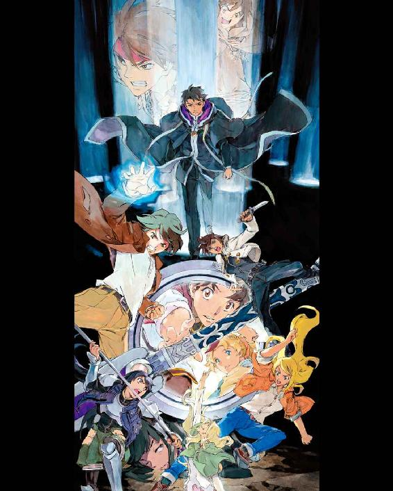
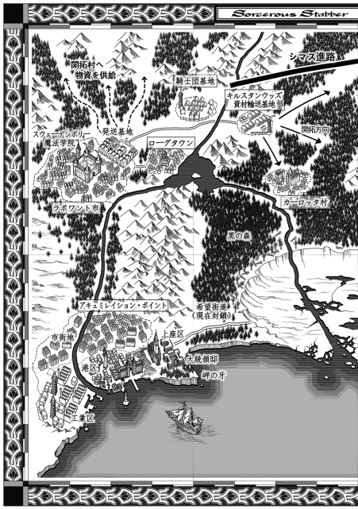

| 魔術士オーフェンはぐれ旅 女神未来（下） (TO文庫) | |
| 秋田禎信 | |
| TOブックス (2018) | |
「破滅は必ず来ると確信があるからよ」魔術学校の校長室で、魔王オーフェンは目まぐるしく変化する情勢に為す術を失っていた。キルスタンウッズの壊滅、市議会からの戦術騎士団への圧力、突然の合成人間の出現。カーロッタとは戦うことさえ許されない。原大陸の混沌が極まる中、マヨールとベイジットの兄妹はそれぞれにローグタウンを目指す。旧世代と新世代の未来とは？ 絶望を受け入れた上で、オーフェンが下す決断とは？ かつて夢見た約束の地で、はぐれ魔術士たちの最後の戦いが決着する！ 第四部、堂々の完結編！
カバーデザイン：Veia 山口美幸




20
ラチェット・フィンランディが生まれてから最初に発した言葉は「ウママイ」か「マパァ」だと、両親は考えている。ウママイかマパァのどちらであるのかはいまだに議論の決着を見ていないが、そもそもその言葉がなんなのかも不明だ。
だがすべて間違いだった。ラチェット自身がはっきりと覚えていた。彼女が誕生してから最初に発した言葉は「誰の目なの？」だ。
生後、四カ月のことだった。もちろん──と言うべきか──声にして発したのではない。そもそも自分の言葉を脳が理解していたとも言い難い。ラチェットはこの時、自分の感覚に肉体を超える別のものがあるのを知った。魔術だ。
白魔術という呼び名は知らなかったが、この自覚を彼女に与えたのは犬だった。犬はかなり驚いたようだった。犬自身は種族が有していた精神支配の能力を失っており、他者から呼びかけられることは想定していなかったからだ。
ラチェットと犬はしばらく、お互いの認識をすり合わせる言葉を交わし、そして仲良くなった。同類になったといってもいい。
あとになって考えてみれば、これは危険なことだった。ラチェットは自分を犬だと思って育った可能性がある。だが犬のほうが、懇切丁寧にラチェットを教育した。犬は同居しているだけで、ラチェットとは違う生物であること。彼女はドラゴン種族などより遥かに恐ろしい巨人種族であること。そしてその巨人種族の中にさえ滅多にいない、ずば抜けた精神士の能力を持っているということ。
能力の使い方は犬に教わった。物心がつく頃には、ラチェットは一人前以上の白魔術士になっていた。適当な頃合いで、低レベルな黒魔術の真似もしてみせたが、明らかにそちらのほうには才能がなかった。やろうと思えばそこそこの実力はつけられたのかもしれない。が、ラチェットにはその気がなかった。とことんなかった。
犬は今でも友達だ。まあおよそ多いとは言えない友達のひとりだ。友達であり、毛もじゃの移動手段であり、マジクおじさんをからかう同志でもある。そして師でもある。その犬が常に発する警告を、ラチェットは忘れることがない。
「支配をするな。我が種族はすべてを意のままにする支配力の坩堝で絶望し、解放の代償は我以外すべての死だった」
だが。
（あいつは支配してやらないと、負ける）
とことんだ。軽く撫でるだけではまったく足りない。掴み、抉り、引きむしって飲み干すまで。自分の能力のすべてを注いで支配し尽くしてやらなければ、災厄の種になる。大きな災厄だ。
合成人間マルカジットの存在を感じたその瞬間から確信していた。
単に不快なだけではない敵だ。他人にどれだけ不快な気を起こさせられるかなら自分も負けない自信はあったが。姉妹の同調術がネットワークをこじらせて実現したこの合成人間には、ラチェット単身で勝てる見込みはほとんどない。馬鹿な姉ともっと馬鹿な姉（どっちがどっちなのかは知らないしどっちでもいい）の力がなければ。
──ということを、ヴァンパイアの襲撃で破壊されるギャングの館から庭に飛び降りながら、ラチェットは考えていた。
ヴァンパイアは恐れるに足らない。かなり強大化はしているが、マヨールとイシリーンがどうにかするだろう。ふたりは信頼に値する一流の魔術士だし、ギャングたちも死を賭してヴァンパイアに立ち向かっている。
慌てる必要はない。慌てるのはサイアンくらいだ。
「ラチェ......ラチェ！」
すっかり慌てたサイアンが、実にまったくすっかり慌てて、ラチェットにしがみついてきた。
「大丈夫？ 怪我は？」
言ってくる彼をじろりと見返して、ラチェットは告げた。
「特にない」
実際、爆発する二階から飛び降りたにしては無事だった。遠くから飛んでくるヴァンパイアを砲弾にした爆撃だ。屋敷に何体も着弾した。戦術騎士団が危機強度と見なす革命闘士だった。
火の手があがって、あたりは煙が充満している。限られた視界のうちで見回して、混乱の中、マヨールとイシリーンの姿は見失っていた。マルカジットも。
サイアンはいる。腕を掴まれて痛い。ヒヨもいた。埃をかぶったので髪をはたいて首を振っている。
あたりでは、どんどん人が死んでいる。破壊音と悲鳴が溢れていた。
「逃げないと」
つぶやくサイアンの手を、ラチェットは掴み返した。
いや......握り直した。
「できないよ」
「どうして。ぼくが足手まといなら、ふたりで──」
頓珍漢なことを言い出すサイアンに、眉根を寄せる。
「サイアン置いてくわけないじゃん。そんなことより、ここであの合成人間を殺さないと、遅れれば遅れるほど面倒になる」
「殺すなんて......そんなの、本気で言ってるの？」
ふう、と息をついて、ラチェットはサイアンに向き直った。
じっと目を見据える。ほとんど鼻先をつけるような距離で。
「あれは合成人間。人間じゃない」
「でも、そう言ったってさ」
「人間の形してればなんでもいいの？ わたしとおんなじ形のイトマキヒトデがいたらそっちでもいい？」
「それは......無理だけどさ」
戸惑うサイアンから、ラチェットは視線を外した。そっと、静かに。
「わたしは七割くらい、それでいいんじゃないかって思っちゃう」
「え？」
「そこが危険なの。本物そっくりの偽物っていうのは。偽物だってはっきり言えるうちに片づけないと」
すぐに理解しろというのは難しいだろう。繋ぎとめる気持ちで、ラチェットは彼の手に力を込めた。優しいサイアン。本物と偽物の差を理解できるのは、両者が簡単に取って代われてしまうのを知っているくらい疑り深く、邪悪な者だけだ。
顔を上げて、向き直った。ヒヨはじっとこちらを見て、待ってくれていた。
告げる。
「ヒヨ、最悪のことをまたやるよ」
「うん。今度は勝てる？」
「無理。勝てないのに殺す方法を考えないと」
「分かった。ラチェに任せるよ」
強いヒヨ。これこそが本物と偽物の恐ろしさだ。ずっと一緒にいたサイアンとヒヨが、ラチェットを信頼してくれているのか、それとも白魔術の支配力なのか、誰にも見分けはつかない。ラチェット本人にも。
これはある意味、偽物よりも厄介だ──偽物は片づければいい。本物は信じて祈るより他にない。
ラチェットはサイアンの手をはなして、ヒヨの背中にしがみついた。精神の繋がりを念じる。ヒヨの身体の操作にラチェットの直感が加わる。同調術に近いものだがヒヨに負担が大きく、使い過ぎれば使い魔症に陥る。
だが才能はあっても経験の足りないヒヨが、マルカジットのような造られた戦闘工芸品に対抗するにはこれしかない。まあそれ以前に、ヴァンパイアが攻めてきたこの状況下で危機を回避するには、というのもあるが。
ずきり、と頭が痛む。頭蓋どころか脳を掻きまわされるような不快感。ざわつく肌。頼りになるヒヨの背中にかじりついているのに、無用な落下感に苛まれる。気を失いかけている。そして、自我を壊しかけている。
「......ラチェ、大丈夫？」
訊いてきたのはサイアンだった。ぞっとした顔色で。
ラチェットは見下ろして、告げた。
「なにが？」
「だって、顔色が」
「本調子じゃないけど、まあ平気。そうそう壊れないよ」
「嘘だ」
はっきりと、サイアンは言ってきた。
「絶対無理だ。やっぱりやめて。隠れられる場所を探すから──」
「サイアン」
ぽん、と。
彼の顔面に手を置いて言葉を制した。静かに続ける。
「反対されると、少し安心する。わたしの言いなりじゃないね」
あるいは......
皮肉を感じて、心の中で付け加える──わたしが本心じゃ乗り気でないのかもしれないけど。
ともあれ、議論どころか感傷に浸る時間もなかった。状況も逼迫しているし、自分の力も尽きかけている。
「壊れても仕方がないって時じゃないと、こんなのやらないよ」
あるいは......
また同じように付け加える──こんな力は壊れてしまったほうがマシかもって、思っていなくもないけれど。
ヒヨがサイアンも抱えて、駆け出した。
敵の位置はラチェットの直感で探る。マルカジットはこの混乱の中、裏庭のほうへと移動していた。例の〝鋏〟を持って。
鋏。魔剣オーロラサークル。世界を切り取る完全破相術。ひらたく言えば、斬ればなんでも滅ぼせるという剣だ。魔王、つまり世界の主だけが造り出せるのに、主の自由には決してならないという魔王術の極端。
マルカジットがこれを手に入れるためにここに現れたのは明らかだ。なにしろ当人がそう言っていた。言葉をそのまま信じるなら、ドラゴン化したシマス・ヴァンパイアとカーロッタの一党を滅ぼすために使うつもりだという。
本来なら──本来の魔王の意図では、マヨールに使わせるつもりだったはずだ。この原大陸には与しない、はぐれ者に。
そんなつもりすら、鋏は裏切るのか。マルカジットの手に渡ったことでこの究極の大魔術の行き着く先は分からなくなった。暴走だ。いかにも禁断の秘術らしい暴走だった。
館を踏みつぶし、火を吐いている巨大なヴァンパイアを回り込んで避け、裏庭に入った。ギャングたちの墓石が並ぶ、趣味の悪い庭だ。
煙のせいで視界は悪い。館が燃え、倒壊する騒音に紛れて戦闘音、悲鳴も聞こえてくる。さらにそれとは異質の、規則正しい重い物音......
地面から響いてくる。足音だった。とてつもない重量物を引きずるような。
「まずいな......」
ヴァンパイアだ。煙の中、こちらを目指して進んでくる。
いくらなんでも魔王術をヒヨに使わせるのは無理だ。素養もないし力量も足りない。この前は、イシリーンほどの術者にやらせてすら損傷を残してしまうところだった。犠牲は嫌いだ。嫌なものは嫌だ。
「逃げるよ！」
相手の姿を確認しないまま直感で、ラチェットは指示した。ヒヨが方向を変え、速度を上げる。
足音は遠ざかったがまだ追ってきている。墓石を軽々と蹴散らしながら──
はっとして、ラチェットは叫んだ。
というより念じたのだが。遅かった。やはり反応も、勘も遅れている。
「伏せて！」
間に合わないと悟るほうが先だった。意識の混乱を感じた。最初にもう間に合わないことを理解し、なにが起こるかを察したのは最後だった。
身体が吹っ飛んだ。ヴァンパイアが力任せに蹴飛ばした墓石が、砕けて出鱈目に飛んできた。大きめの破片が二個、ラチェットの肩と脇腹に命中した。小さい破片がひとつ、ヒヨの背中に当たり、サイアンには一発も当たらなかった。
三人ばらばらに宙を舞った。繋いでいた手ははなれ、全員違う地面に叩きつけられる。
痛みは吐くほどだったが、怪我は重くない。ヒヨの足が速かったので飛礫の勢いをいくらかやり過ごせたのだろう。だが支配が解けてしまった。今、危機強度のヴァンパイアの前で倒れているのは壊れかけの白魔術士と、急に術から解き放たれて混乱している学生魔術士と、あとはサイアンだけだ。
（馬鹿だ......）
己を呪う。大見得を切って、いきなりしくじった。しかも間抜けのヴァンパイア相手に。
強大化した質量が近づいてくる。最初に殺されるのはきっとヒヨだ。一番遠くに倒れている。次にサイアン。一番遠くまで飛ばされたラチェットは最後だろう。ヴァンパイアはこちらを見つけるまでもない。ただ歩くだけで無力な三人を踏み潰せる。
確実に殺せる。見るまでもない。そのまま歩くだけ。それが一番いい──
思考を束ねて、注ぎ込んだ。
精神支配だ。巨人化して精神が薄弱になったヴァンパイアには効きにくいが。
煙の中から半魚人のような姿をしたヴァンパイアが現れ、突き進んできた。
一歩、二歩と......大股に。ヒヨの頭のすぐ横を踏んで、通り過ぎた。同じようにサイアン、ラチェットをまたいで。
地面の揺れだけを残して歩んでいくヴァンパイアに、サイアンが顔をあげ、うめいた。
「助かった......？」
「あと十歩しか操れない」
「え？」
目を白黒させるサイアンに、手を伸ばして、触れる。
急速に眩む視界が、残された時間の量を教えてくれていた。伝えたいことはたくさんある──たとえば、ごめんねとか助けてとか。言わないでも分かりそうなことは言わないようにしてたけど、それ違ってたかな、とか。
だが必要なことしか言えなかった。
「作戦変える。隠れてて......」
これで十歩。ヴァンパイアが足を止めた。
振り返って。またこちらにもどってくるまで、もう十歩か。
ヒヨが起き上がっている。サイアンも、ラチェットの手を取って抱きかかえようとしている。
だがその手を、そっと押しやった。ふらつく足をどうにか操って、駆け出す。ふたりとは離れる方向へ。
引き返してくるヴァンパイアを睨んで──
「こっちこい！」
言葉の通りに半魚人の顔が、ラチェットを追ってこちらを向いた。支配力が続かないが、一瞬一瞬で判断を捻じ曲げて引きつけるしかない。
サイアンがなにかを叫んでいる。こっちを追おうとしていたが、ヒヨが羽交い絞めにして止めていた。それでいい。ラチェットも、別に自分が犠牲になろうとしているわけではなかった──犠牲は嫌いだ。
このヴァンパイアを引っぱって、マルカジットにぶつける。この強度の敵でもマルカジットは容易く解消してしまうだろうが、魔王術を仕組んでいるその時はさすがに隙を見せるはずだ。
（もうちょっと、うまくやれるようになっとけばよかったな......）
後悔が胸に過ぎる。
敵を倒すための訓練は真面目に受けていなかった。姉たちならこんな時、ヒヨやサイアンを守りながら戦う術を知っていただろうが、今は頼れない。
せめて走り方くらいでも。
転ばないことだけを祈って、足を運び続ける。ヴァンパイアはそれほど素早くはないがリーチが長く、そして疲れを知らない。一方、ラチェットは息も絶え絶えだった。
煙に喉を焼かれ、火の粉に髪を焦がされる。汗が灰を吸って肌にしみた。ヴァンパイアが迫る気配の圧力と、足下の振動とが上下から後背をざわつかせる。その行く手に──
マルカジットの姿があったのは、二重の意味で偶然ではない。ラチェットはマルカジットのいる位置を探って追っていた。そしてマルカジットはラチェットを待ち受けていた。
にんまりとした嫌味な笑みが、それを裏付けていた。マルカジットは倒れた墓石に乗って、のんびり待ち構えている。組んだ腕に、無造作にぶらんと提げられているのは一振りの剣。〝鋏〟だ。
その姿はいかにも、最強を誇る術者の威風だった。ネットワークにデザインされた魔術戦士。
走りながら拳を固めた。ラチェットが殴りかかっても通じはすまいが。
相手がどれだけ完成された魔術戦士であろうと、自分も世界有数の白魔術士だ。ダミアン・ルーウにも、ケシオンにも、ヒュキオエラ王子にも劣らない。やれる気概でかかる。それを念じた。
だが。
マルカジットはひょいとその場から飛び降りただけで、戦いを終わりにした。
彼女が飛び降りた墓石の後ろに、ヒヨとサイアンが隠れていた。ぎょっとしたようにこちらを見ている──ラチェットも、同じ顔をしていたのだろうが。
さっきの飛礫と同じ、混乱が認識の順序を狂わせた。取るべき行動が先だった。その場に立ち止まり、振り向いて、意識を研ぐ。
ヴァンパイアはつんのめったように身体を傾けた。歩行のテンポを崩して、右足を二度、前に出した。進む向きを変えて左に逸れていく。
肩越しにまた見やると、マルカジットの姿はもうなかった。歯噛みする──マルカジットにしてやられた。それも極めて初歩的な幻惑で。位置と認識を逸らされて。
そして今の精神支配で、本当に力を使い果たしてしまった。ヴァンパイアはしばらくはあさっての方向に進んでいくだろうが、すぐにもどってくる。その時には恐らく、自分はもう意識を失っている。
「ラチェット！」
その場に倒れかけたラチェットを、サイアンが受け止めてくれた。物陰に引っぱっていかれるのを感じる。
耳元に、声を聞いていた。マルカジットの声だ。
肉声ではなく、会話をした。どれだけ長く感じても実際は一瞬の間だったろうが。
「あなたの負け。わたしには勝てない。理解した？ でもまあ大丈夫。このまま終わりじゃないよ。死にはしない。少なくとも、次に目を覚ました時に見るべきものを見るまではね......」
「それって、あんたがこてんぱんにされて泣いてるとこ？」
「どうかな。可能性は低い。あなたが呼ぶ助けは役に立たないし」
「エド・サンクタムは合成人間に対処できる最強の術者よ」
「ふうん？ だから目をつけておいたわけね？」
「なんとでも言えばいい。わたしはあんたにだけは惑わされない」
「ま、どのみち、彼は誰にも勝てない最強の術者でしょ」
「あんたみたいに脈絡なくいきなり現れたような奴に、好き勝手させない──」
「いきなり現れた？ まったくその通りなんだけど、まったくその通りなのかしら？」
「............？」
嘲りを残して消えていった声に、闇の揺らぎを見る。
意識が失われる真の闇。水に流れや揺れがあったとしても、水中に引きずり込まれて沈んでいく者の目になにも見えはしないだろうが。ラチェットはそれを見た気がした。語らぬものが語るのを聞く。
墓石の陰に引きずられながら。
意識が遠くなる。視界も、音も、肌触りも。
何者かが状況に割って入ってきたようだ。最後に見えたのは、突風に裂かれた煙と、そこから現れるマヨールの姿。あとひとり、イシリーンか。ヴァンパイアに立ち向かうのはマヨール......こちらに駆け寄ってくるのはイシリーン。もはや、それもよく分からない。
「助けを呼ぶ......よ。助けを。最後の、力」
やめろという声が聞こえた、気がする。やはりイシリーンか。それでも続けた。
完全に気を失う一瞬に、どうにか、ラチェットは声を絞り出した。
「罠が見えた。都合がいいだけの合成人間は道化。王を選ぶ道化──」
狙われるのははぐれ者。重大な決断を押し付けられる。
すべて繰り返しだった。繰り返しの罠。誰もが裏切られ、騙されている、この世界は。
ならば止める方法は。
そこまでは口に出せず、ラチェットは闇を吸い、闇に溺れた。
21
（長い日になりそうだ......）
そう思わなかった日というのも、ここ十年あまり、なかった気はしたが。
魔王オーフェン・フィンランディは校長室への人の出入りを数えることもやめて、流れ作業のように放り投げられてくる報告をいちいち吟味するのも諦めた。状況はほんの数時間で目まぐるしく変化し、手を打つにも手の数は足りず、匙を投げるより他にない。
が、匙を投げる素振りでも見せようものなら、世界の破滅は喜んでそこに飛びついてきそうだった。
情報のいくつかは予想通りであり、いくつかは寝耳に水だった。最初に飛び込んできた一報については、オーフェンはただ「ああ」と答えただけだった。
その時には、これこそがこの日に起こった最大の珍事だと思って駆け込んできたのだろうクレイリーが目を丸くしても、オーフェンは慌てずに手を振って続けた。
「ベイジット・パッキンガムは革命闘士の少年と、魔術戦士スティング・ライト、あと俺の妻子を人質にしてカーロッタに寝返った。ラポワント市を出てローグタウンに向かっている。止めたほうが賢いのは分かっているが、カーロッタの魂胆を探れる可能性があるなら、どんな馬鹿な手にでも乗らざるを得ない」
気の毒に──というのも、車椅子の目いっぱいの速度で部屋に突入してきたために棚にぶつかってひっくり返っているクレイリーの表情が、この時ばかりはさすがにおべっか屋の名を返上しそうに見えたのだが、それでもなお、この副校長は反論を喉もとで食い止めたのだ。
「それじゃあ、校長の手引きなんですか？」
「そういうわけじゃあない。提案には反対したが、やらかすだろうとは思っていた」
「いくらなんでもこれは......一触即発の事態で、敵地に乗り込ませるなんて」
「カーロッタは、戦術騎士団の動きを封じたが、それは同時に向こうからも戦う理由がないと宣言したことにもなる。魔術戦士を捕虜に取ったとしても迂闊なことをすれば自ら優位性を捨てる羽目になる」
「革命闘士の首魁が言うことなど信頼するんですか？」
「奴が信頼に足る相手かどうかということなら、そうだな。大体の場合においては信頼できるかな」
クレイリーがまたさらに呆気に取られたようなので、絶句している隙にオーフェンは席を立ち、彼が起き上がるのを助けてやった。車椅子に座らせながら、言い加える。
「特に、奴が勝利を収めつつある時には、だ。カーロッタはこの二十年ほどの間、一度を除いて常に勝利し続けてきたと言える。つまりは、おおむね信頼してきた」
「またそんな言い方を......」
言葉遊びじみた言い草だとは自覚していたが、オーフェンは肩を竦めた。
「問題は、カーロッタにとって今この時ってのが、勝利に向かっているのか敗北を覚悟しているのかよく分からないことだな」
ぶつぶつと不満げなクレイリーを追い返すと、またほどなくして飛び込んできたのはキルスタンウッズ壊滅の報告だった。
情報はかなり混乱していた──カーロッタがキルスタンウッズを攻めた、という報告もあれば襲撃にカーロッタは関与せず、はぐれ革命闘士の仕業という話もあり、ボニー・マギーの生死についても確たる情報がなかった。やがて、戦術騎士団が黒薔薇の館に入ってヴァンパイアを撃退したことで真偽がかなりはっきりした。だがその情報はまた別の混乱をもたらした。エド・サンクタム率いる戦術騎士団の部隊が勝手に移動し、ローグタウンへの進軍を開始したということだからだ。
混乱に混乱が上乗せされた。サルア市長および市議会からは戦術騎士団の意図を問いただされ、大統領邸からも使者が次々と押し寄せた（おかげでヴィクトール・マギー・ハウザーの不快な顔を何度か見なければならなかった）。しばらくは統制を失うであろうキルスタンウッズとの連絡役も用意しなければならず、キルスタンウッズと敵対している街のギャングらがここで物資の確保に走る懸念もあった。
「......キルスタンウッズが自分の身を守れないとはな」
苦々しく、オーフェンはつぶやいた。
今度の話し相手はマジクだ。この最強の魔術戦士はかぶりを振って、いかにも魔術士らしい言い方をした。
「魔術戦士なしでは、強大化したヴァンパイア相手ではひとたまりもなかったでしょう」
「襲撃したヴァンパイアの強度を考えると、魔王術から開封された連中って可能性も高い。賠償を求められるかもしれないな」
「この後も、彼らが組織を保っていられればの話ですよ」
実際、そのほうが問題ではあった。
開拓地全域への資材と情報のネットワークをひとつ失うとなれば、戦闘よりも悲惨な災厄を招きかねない。開拓公社が力を取りもどすことになればキエサルヒマとの断交を考えている大統領邸のプランにも支障が出るだろう。そのこと自体が問題というより、障害を押し切るために大統領邸がさらに強引な手を取らざるを得なくなれば、厄介だ。ドロシー・マギー・ハウザーは必要とあらば強引にことを運ぶタイプの施政者だった。
朗報もあったには、あった。エド・サンクタムは、キエサルヒマの魔術士マヨール・マクレディとイシリーン、そしてサイアン・マギー・フェイズ、ヒヨ・エグザクソン、ラチェット・フィンランディの身柄を保護した。
ただ、彼らを連れたままローグタウンに進軍している理由についてはかなり意味不明の報告を寄越しただけだった。
「新たな脅威を発見し、部隊を移動する。マルカジットと名乗る合成人間が現出。何者にとっての脅威であるかを見定める必要がある」
それ以上の詳細は、思念通話では分からない。直接出向いて話すべきだろう。
そこにも人を遣るなら、どうにも人手が足りない。オーフェン本人が出立すれば市議会や大統領邸をますます焦らせることになる。
（ラッツベインたちが、せめてあと半日待って出てくれていればな）
運悪く入れ違った。だがそうは思っても、娘や妻は、ローグタウン近辺で行方不明になったエッジの救出に動いているのだ。遅くあるべしというものでもない。
「急にすべてが動いたもんだな」
夜になってもずっと詰めたままの校長室で、オーフェンはうめいた。
今度の相手は、クレイリーでもマジクでもない。
コンスタンスだった。コンスタンス・マギー・フェイズ。派遣警察隊、鬼の総監。
彼女が魔術学校に出向いて、ここにいるのは、もちろんサルア市長から遣わされたのだが。しかし部下で済ませてもいいところをわざわざ彼女に来るよう促したのは、ひとまず息子の無事を伝えたかったからだった。
明るい知らせはほんの一時だが、彼女の顔色を明るくした。が、それでも激務と緊張の積み重ねを崩すには程遠い。
「ぎりぎりの状況って、そういうもんでしょ」
鬼のコンスタンスは憂鬱そうに、そう答えた。
疲労の溜まった彼女の顔を見上げて、オーフェンも続ける。
「このまま一気に終わりまで突き進む......可能性もある」
「終わりっていうのは、どういう結末？」
「さあな。つい何日か前までは、見えていた気もするんだが」
「......その頃の展望には、市長の抹殺もあった？」
「戦術騎士団の中にはその意見もあった。念のため言っておくと、大統領邸はそれを制止していたよ」
「カーロッタを始末するだけで十分だから、でしょ」
「まあな。でも合理的な説明をひねり出すのは情の部分だと、俺は思うけどな」
腕を組んで、椅子の背にもたれる。
随分と付き合いの長いコンスタンスは、この原大陸でも数少ない友人だ。
考えてみれば、妻よりも若干古い付き合いだった。それはアーバンラマの三魔女全員に言えるが。サルアの使い走りとして仕えながらも、開拓地全体の治安を保とうと尽力してきたコンスタンスとは、立場も似ているといえば似ている。
そして、原大陸の魔王となる以前から自分を知っている数名のうちのひとりだ。顔を合わせる機会はだいぶなくなっていたが、特別な気安さをいまだ感じられる希少な相手だった。
彼女にとっても同じだろう。コンスタンスは独り言でも言うように訊いてきた。
「姉さんと義兄さんは、原大陸の支配者になれる器だと思う？」
「どうだかな。才覚を確かめる以前に、機会を何度も逸してる。運命みたいなものがあるんなら、向いてはいないのかもな」
「運命って」
コンスタンスは意外なことでも聞いたように目を丸くした。
オーフェンはにやりとする。
「運命の女神の現出をどうにか回避したばかりだよ、俺たちは」
「そんなの......ただの、化け物の名前ってだけでしょ」
「確かにな。それでも、名前にはそれなりの意味がある気はする」
「わたしはね、運がいいの」
彼女は出し抜けに話題を変えた──いや、変えてはいなかったか。
低く声を震わせて、語り始めた。
「ペーパーテストで騎士団に採用されて。実務は苦手なのにうまいこと手伝ってくれるはぐれ魔術士を見つけてね。キエサルヒマがきな臭くなる前に夫と出会って結婚退職して。戦争が起こりそうな頃合いで新大陸に渡って。その事業では警備隊を率いてそのまま重用されてね。部下はみんな出来がいいし、子供ができたのも開拓がそこそこ順調になってきてからで、健康に育ってくれた」
そこで言葉を切って、言い直す。
「最後にツケを払うことになるんじゃないかって、いつの頃からか......びくついてる」
「ツケなんてないだろ」
「でも、運命なんて実在するなら......意味ある気がするんでしょ？」
「悪かった。前言撤回だ。確かにただの、化け物の名前でしかない」
笑い合うような冗談でもないが。
力を抜いて首を振る。
「ツケの帳簿をつけてる奴は知らないが、因果はチャラにはできないな。なるようになったものを、誰かが背負うことにはなる」
「あなたみたいに？」
「まあ、俺みたいにだな。それでも俺は運がいいんだと思うが」
「本気で言ってる？」
「逆に、運が悪くてやってこれるような仕事だったとは思えないからな」
「......だいぶ前から、わたし、あなたがツケを払いたがってるんじゃないかって不安だった」
深刻な顔つきで切り出したコンスタンスを、オーフェンは見返した。
「なんだよ、急に」
「全部放り出して、刺し違える敵を探してるんじゃないかって」
「どうせ放り出すなら、バカンスにでも行くさ」
言ってから相手の反応を待つのだが......彼女の眼差しはぴくりとも動じない。
きちんと答えるまで退かないということだろう。諦めて、オーフェンは告げた。
「若造だった頃とは違う。全部を捨てられるほど身軽じゃない。カーロッタとすら、妥協できればそのほうがいいと思うくらいだよ」
「でも、彼女がいたら原大陸の混乱は終わらないわよ。サルア市長は正しい」
「合理的に正しい説明をひねり出すのは情動だよ」
「市長が姉さんたちよりも正しいと言えるわけでもないけど。どっちもどっちなら、あとは器の問題でしょ」
「それか、運の問題だな」
「はぐらかしてるの？」
「まあな」
「あのねえ」
呆れ調子のコンスタンスに、まぶたを閉じて、深呼吸する。
察して、彼女も黙り込んだ。
沈黙を挟んで口を開く。鬼のコンスタンスがサルア市長に持ち返る、魔王オーフェン・フィンランディの宣告を唱えるために。
「原大陸の魔術士社会を代表して、当方の指針を述べる。カーロッタはヴァンパイアライズの破滅性を否定して、戦術騎士団の無法と危険を訴えた。反証しない限り、俺たちは過去の暗殺・破壊行為を犯罪として呑まざるを得ない。まず極刑は確実だろう。となると、指導者を失った後の魔術士の奴隷化も懸念する」
目を開けた。こちらを見つめるコンスタンスの表情は、想像の通りだった。
別れの顔だ。
「が、言うまでもなく我々は騎士団結成以来抱いてきた信念を捨てない。ヴァンパイアライズは放置すれば世界を壊滅させると確信している。戦術騎士団はその調査のためにカーロッタ・マウセンを当面の間、保全する」
「......保全？」
「カーロッタが証言を覆さないうちは、彼女に手を出させない。戦術騎士団への敵対行為として対処する」
「馬鹿な......ことを！」
「皮肉な話だとは思う。カーロッタがこんなことまで目論見に入れていなかったことを願うが。他に、お前たちのカーロッタ首取り競争を止める方法が思いつけなかった」
ぐっと息を呑んで、コンスタンスは言ってきた。
「サルア市長は派遣警察隊に、この学校の制圧を命じるわよ」
「不可能だ。俺がここを守護する。場合によってはこの校内に結界を生成する。壊滅災害が原大陸を更地にしてから結界を解いて、魔術士だけの世界を作る。新しい世界の名前は、ザ・俺ランド。言いづらいがまあ大丈夫だ。音声魔術士は絶対噛まない」
「......はったりが過ぎるんじゃない」
「俺が本気がどうか、そもそも可能なのかどうか、それくらいは悩みやがれとあいつに伝えろよ」
オーフェンが笑いかけてもコンスタンスはにこりともしなかった。
拳を握りしめたまま、一歩下がる。
「これで本当に混沌ね。サルア市長も、大統領邸も、キルスタンウッズも、状況が鎮静した後の支配図を描けなくなった」
「俺もだな。戦術騎士団の暗部が明るみに出て、この地位には留まれない」
「王座に一番近いのはカーロッタかしらね」
暗い瞳でつぶやく彼女に、オーフェンはかぶりを振った。
「いや。ヴァンパイアライズは確実な破滅だと言ったろ。あいつもそれをよく分かっていたはずなんだが......」
椅子に座り直して間合いを改める。
旧友に、静かに告げた。
「サイアンは無事に計らうよ。あいつはまともで、いい奴だ。マギー家の連中にしては」
コンスタンスは最後に短い微笑を残して、退室していった。
会話が終わる頃には、もう真夜中を過ぎていた。窓の外には月が冴えわたり、地上の問題など素知らぬ顔で夜空に輝いている。
最後の訪問者が校長室に入ってきた。マジクだ。今日は何度も出入りしていたが、これが最後だというのは彼の格好で知れた。旅支度を済ませている。
今の話は聞いていたか、そうでなくとも大体は察していただろう。質問もなく口火を切った。
「では、あとは決戦ですね」
「そう単純にいくかよ。時間は稼いだが。カーロッタのプランを暴いてから殺さないと、また魔術士狩りの時代になりかねないぞ」
「キルスタンウッズが痛手を蒙って、開拓地の力が削げましたから、だいぶ話は違ってきたのでは？」
「それはそれで問題だ。あいつの愚痴った通り、混沌だよ。誰も原大陸を牛耳れずに退行すれば、キエサルヒマに侵攻されて終わる。まあそのキエサルヒマだって、リベレーターなんてとんでもない損失を出して、当分は動けないだろうが......」
「まるで誰かが図ったように、難しい情勢になっていきますね」
「実際、何者かが図ってるのかもしれない」
窓を見やって、オーフェンは言った。
「エドはそのあたりを勘ぐって動いたんじゃないかと思う。向こうに合流して確かめて欲しい」
「はい。ここのことは、校長に任せて良いんですか？」
魔術士の避難民がまだ暮らす魔術学校。もはや自分たちの職場だった頃とは空気から違っているが、それでもまだ日常のよすがを感じるものか。マジクの表情にあったものは未練の片鱗だった。
オーフェンは、うなずいた。
「サルアが真に受けるかどうか分からないが、それでもまだ睨みくらいは効くものと信じたいな。奴が俺を見くびらなければ派遣警察隊を返り討ちにしないで済む......まあ、クレイリーも残るし、どうにか間に合うだろ」
付け加えた名前がマジクの気に入らないことは想像したが。
部下が隠しそこなった不機嫌顔を見上げながら、オーフェンは続けた。
「本当の最終決戦の時には、俺もそっちに行く」
「そうならないことを願います」
マジクはそう言って、出ていった。
不可解な言い方で、声も暗号のように不透明だった。戦いにならないことを願ったのか、戦いは望んでもオーフェンの手は煩わせず自分だけで敵を片づけたいということか、あるいはなにも考えず、それらしいことを言っただけか。
混沌だ。どこもかしこも。願いを聞く神がいたとしても、どう叶えればいいのか迷うのではないか。
魔王オーフェン・フィンランディは凝り固まった首を回して、見えない敵に呪詛を吐いた。
22
エッジ・フィンランディは目を開けて、これまでのことが全部夢だったと知った。
自室のベッドは柔らかく居心地もいい。問題点は、この部屋に三姉妹が同居していることだ。姉妹が成長して姉は部屋を出ていくはずだったのだが、離れに住むのを嫌がって結局ここに居ついている。そのせいで離れは客用にされてしまって、エッジがそちらに移る機会も逸してしまった。
自分としてはいずれ家自体を出るつもりだったが、フィンランディ家の者は街には暮らせず、郊外は革命闘士の動きが掴みづらく危険というので結局、ローグタウンからは離れられない。ローグタウンにはかなりの数の魔術戦士が暮らしているというのもあって、家族からも職場からもあまり差がないというつまらなさはある。それでずるずると先延ばしにしてきたのだが。
「............」
ベッドから天井を見上げて考えているうちに、疑問が過ぎった──〝これまでのこと〟とやらは、どれくらいの範囲を言っているのだろうか。どこからどこまでの出来事か。戦術騎士団の審問を通ったことは、変えたくない事柄として認めていた。ようやく参加した騎士団があえなく半壊したことについては、どうだろう。その責任で父が拘束され、罪に問われていることは？ 革命闘士と戦い、リベレーターを撃退したことは？ そして今、仇敵であるカーロッタとの戦いを目前にしていることは？
いったいどのあたりを、夢のあぶくとして消し去ってしまいたいのか。魔王術のように。
苛つきながら認めた。我が家の部屋で目覚めようと、なにひとつなかったことになどならないし、解決もしない。
夢を見たと勘違いしたのは、最後の記憶と現在がつながってなかったせいだった。滑り落ちるようにベッドから出て、確認する。エッジはローグタウン近くには来ていたが、村には入っていない。森の中でヴァンパイアに襲われる直前で気を失った。
着ている物も。一般人らしく見えるよう平服を着ていたのだが、寝間着に着替えさせられている。
寝間着は自分のものだ。カラス柄で、姉からは「ぞっとするほど可愛くない。やめて」と言われ続けてきたが、気にせず愛用している。姉も妹も嫌がって借りたがらないというのは、姉妹で同じ部屋に寝泊まりする身には極めて重大な美点だ。
足音を忍ばせて、服の棚を開けた。いつも通りに服がしまわれている。物色された気配は......あるような、ないような。この寝間着を誰かが取り出したのは間違いないが。
着てきた服は見当たらなかった。別の服を取り出して、手早く着替える。あと、引き出しの一番奥に手を突っ込んで、隠してあったものを出した。小型の格闘用ナイフ。左手に握り込んで隠したまま、引き出しを閉めた。
（さて......）
頭の中を整理する。ここはローグタウン。ついこの前まで結界に封じられていたがラチェットやマヨールが解放した。今は、カーロッタと革命闘士に占拠されているはずだ。
革命闘士のいる中に足止めされているであろうラチェットらを助けるためにここに来たのだ。ヴァンパイアがうろついているはずで、実際にヴァンパイアに襲われて意識を失った。あの胸糞悪いマルカジットとかいう合成人間に負けたせいで。
腑に落ちないのは、自分がまだ生きていることだが。
誰かがここに自分を運び、着替えまでさせて、エッジのベッドに寝かせたのは、偶然ではあるまい。魔王の娘と知ってのことだ。革命闘士の仕業なら、エッジに利用価値を見出してというのが一番あり得る。
（なのに......見張りもいないの？）
戸口に寄っていくが、向こうには誰の気配もない。
窓はカーテンが閉じている。隙間を開けて外を見やったが、そこも無人だった。村の様子も平穏で、大きな物音もない。世界に弓引く革命者どもが占拠しているにしては、なんとも静かだ。
考え込んでいると、ふと、微かに聞こえてきたものがあった。歌だ。それも鼻歌か。
家の中からだろう。居間か、台所のほうか。
また、錯覚が蘇ってきた。すべて夢だったのではないかという。なにもない平穏な日の目覚めで、母が台所で仕事をしているのなら、すべて納得できる。
ドアを開ける。生まれた時から馴染んだ部屋と廊下。そこが今、この世で最も危険な場所になっている......と感じる。
呪文を唱えた。声を相殺する構成を編み込んだ特殊な詠唱。構成が完成すると足が床から浮いた。重力制御だ。
ゆっくり進む。壁にぶつかって物音を立てないよう、方向に注意しながら。
居間の手前で止まった。こっそり覗き込むが、誰もいない。家具の位置が変わっているし散らかっているが、それだけだ。ラチェットらが結界内にいた時、キエサルヒマ組と一緒にここにいたようなので、そのせいだろうか。まあ、ガサツそうな顔ぶれではある。
鼻歌はかなりはっきり聞こえるようになっていた。やはり台所からだ。ぱたぱたと動き回って、食器の音も聞こえる。
天井近くまで高度を上げた。無音で気配を殺し、さらに構成を編み込む。完全な光学欺瞞はできないが、姿をぼかすことは可能だった。相手の位置が分かっていればだが。
同じく声を相殺して唱える。慎重に進んだ。手の中のナイフを指で撫で、湿っていないのを確認した。汗はかいていない。落ち着いている。呼吸の乱れもない。集中して自分を影に溶かす。
台所に入ると、金髪の後ろ頭が上機嫌に調理している姿が目に入った。まさか本当に母かと、一瞬考えた。そうではない。
何者であるかを察した刹那、それがどうしてなのか、あり得るのかは頭から消した。身体を動かす。魔術を解消して落下しつつ、刃を閃かせた。台所にいた女の背後へと。床に足が触れるより先に、首を薙いだ。
間違いなくナイフは肉を裂き、動脈を剥ぎ取った。その感触はあった。のだが、途端に格闘用ナイフは消失した──手の中から消えた。
エッジが床に下りるのと、その女が振り返るのが同時だった。
後方に跳ぶ。だが跳び過ぎはしない。相手の間合いからわずかに外れて、すぐに切り返して反撃に移れる、一歩半の距離だ。エッジの格闘用ナイフはその女の手の中に移動していた。右手だ。その女が失ったはずの右手。
カーロッタ・マウセンは不意打ちを予想していたのか。平然として、微笑んですら見せた。
が、体捌きはそれどころではない。踏み込んで斬り付けてくる。刃は空を切ったが、エッジは背筋に寒いものを覚えた。カーロッタはエッジの急所を狙ったわけではない。エッジが後の先に逆転を図っていたその視線の先を薙いでみせたのだ。
動きを封じられ、二手ほどのプランを失った。歯噛みしながらエッジはまた後退せざるを得なかった。相手は年老いた元殺し屋に過ぎないはずだ。力も機敏さも、一線の使い手からは遥かに劣る。
（いや......）
カーロッタの右手に意識を向けて、エッジは思い直した。
（あれがヴァンパイアライズなら、スペックも人間以上かもしれない）
そこまでの強度ではないはず。と、相手の知性を見立てて判断する。通常術で対抗できる。もっとも、強大化して知性を失ったヴァンパイアと、まだ知性を保ち達人のまま強化されたヴァンパイア、どちらが厄介かは難しいところだ。
魔王術が使えないエッジには、後者にしか活路がない。体勢を直すとともに、意識も立て直した。感覚を研ぐ。
「我掲げるは降魔の剣──」
左手にばちばちと電光が弾け、激しく揺れる力の束になる。
振り抜いてカーロッタの足を狙った。死の教主は軽く身体を回転させてかわす。かわされても魔術の剣はさらに放電を続け、食器やフライパンを打って砕いた。被害のない右側に移動したカーロッタに、エッジは右手を向けた。
こちらにも力場の剣が造られている。不完全に暴れる構成と、完成した構成とを二重に編んで混ぜた。派手な電光に紛れて不可視の刃を突き込む！
狙ったのは胴の中心だ。必殺の急所を狙うよりは弱いが、かわしづらく、少しくらい避けても手傷は負わせられる。
カーロッタの脇腹に、魔術の剣は食い込んだ。縫い止めるように相手の動きを封じる。動けないうちに追撃しようと、エッジが踏み込むと。
まただった。カーロッタが負っていたはずのダメージが消えた。まだ効果が続いていたはずの力場の剣が消え──見えないままだが──カーロッタが右手を振るった。
エッジが咄嗟に引っ込めた頭の上を、なにかが通り抜けていった。魔術の刃だ。
（ヴァンパイアライズは、これで確定ね......）
かなり強大化が進んでいる。身体で受けたダメージを右手で返す、そんな能力が発現しているのか。
（なら）
身構えた。
この接近距離でも使える高速の構成を編む。
「我は放つ光の白刃！」
威力を絞った光熱の斬撃が、鞭のように閃いた。
身を翻したカーロッタを追っていく。狙いは右手だ。
（右手に食らったらどうなる......？）
複雑にうねる光がカーロッタの右腕を打擲した。灼けて、爆発するようにカーロッタの手首がちぎれ飛ぶ。
革命闘士の首領の顔に、わずらわしげなしかめっ面が現れるのをエッジは初めて目にした。
機会だ。念じて、飛び込んだ。拳を固めて打ちつける。短いストロークで上下に打ち分け、カーロッタの胸と胃を揺らした。動きの鈍った敵を先回りして、足を踏みつける。さらに身体を押し付け、気合を吐いた。
「ンラァ！」
下品で好きではない──同じ魔術戦士のマシューみたいだ──が、声を発したほうが寸打のタイミングを取りやすい。身体で当てる高度な寸打だ。叩きこまれた衝撃で、カーロッタの身体が浮いた。壁にぶつかってさらに逃げ場を失う。
エッジは体を低くして、腕を胴に巻き込んだ。弓を引き絞る感覚で。足を踏み出し、解き放つ。壁際のカーロッタまで短い距離だが、数メートルを跳躍する勢いで。
一直線に突き出した拳が、カーロッタの体の中央を抉り、さらに貫通して──
「............!?」
貫通はするわけがない。だがエッジは通り抜けていた。なにもない空間に放り出されてつんのめる。
変わらない台所だ。だが敵の姿がない。身体の向きが変えられていた。ちょうど正反対に。
つまり、カーロッタに背を向けている。はっとして振り向くと、そこにはカーロッタがいた。さすがに余裕たっぷりにとはいかないが、血のにじんだ口の端を指で拭いながら笑みを浮かべている。右手の指でだ。
右手が再生している。エッジ自身が吸い込まれ、右手から出されたということか。
戸惑いが、テンポと気力を削いだ。行動の止まったエッジに、カーロッタは大きく肩を竦めてあたりを見回してみせた。
「あーあー。もう。散らかして......はしたないのはよくないわねえ、女の子が」
「世の中を散らかしてるのは、お前だろう」
なにも揚げ足を取りたかったわけでもなかったが、つい口をついて出た。
よほど可笑しかったのか、カーロッタは吹き出した。
「わたし？ あらら。わたしかしら。本当に？」
「じゃあ、誰だっていうの」
「世の中は散らかってるものじゃなくて？ カオスの理論ね」
「詭弁だ」
ようやくまた機をうかがい、身構える。
カーロッタに言われるまでもなく、今の一戦で台所は崩壊していた。食器も器具も床に落ちてばらばらだ。夫婦喧嘩の時よりはまだマシだが。
「ここでなにをしていた」
エッジの詰問に、カーロッタは目を丸くする。
「なにって。もちろん、お料理でしょうに」
「なんの料理だ！」
「なにっていうのがあるのかしら......お料理よ。あなたがそろそろ起きる頃かと──」
「わたしが、お前の作ったものなど食べるか！」
「そう？ まあ、食べる食べないはお嬢様の勝手だけれども」
飽くまで気楽に調子よく。
カーロッタは不意に屈むと、床からなにかを持ち上げた。さっきちぎれた自分の手だ。焼け焦げたそれを少し嗅いでから、嫌そうに鼻に皺を寄せて、ゴミ箱に放る。
手をはたきながら話を続けた。
「じきに、お客様がいらっしゃるでしょうから、その時に飢えた女の子が石塀に鎖で繋がれてるよりも、もてなして差し上げていたほうが外聞が良いでしょう？」
「人の家で！」
「そこはぐうの音も出ませんけれど」
「大体なんで、お前が料理なんてしてる」
視線だけであたりを見回しながら、エッジは問いただした。
カーロッタならば護衛くらいはいそうなものだが。家には他に気配はない。というより、外にもだが。
その疑問まで読み取ったか、カーロッタの返事はそんなこともなぞっていた。
「だって、わたしの軍団はね。お料理できる人なんて他にいなくて......困ってるのよ？」
「............」
カーロッタの〝軍団〟とやらについては、エッジも以前、目にしている。
オーロラサークルと名乗った（父が提唱した下品な呼び名については家族で完全無視する方向で話がついている）、危機強度のヴァンパイアらの集まりだ。リベレーターの騒ぎの中、姿を消していたカーロッタを辺境を越えたさらに遠くで見つけたのは、マジク及びエッジ、ラッツベインだった。もとはシマス・ヴァンパイアを追跡していたのだが、標的を見つける前にカーロッタに遭遇した。
そのカーロッタが帰還して、今はローグタウンを占拠している。戦術騎士団とは一触即発の状態だ──そのはずだ。
音は立てずに唾を呑んで、エッジは訊ねた。
「お客様とやらは、戦術騎士団のこと？」
「さあ......みなさんいずれは来るでしょうけど、来る順番までは分からないわねえ」
「なにを企んでいる」
なおも言い募るエッジに、カーロッタはまた吹き出した。
「なにが可笑しい！」
怒鳴っても、このヴァンパイアの女王はひとしきり笑ってから、
「だって、ねえ」
口元を押さえてもまだ肩が震えている。目元を拭ってようやく落ち着いたか、かぶりを振った。
「今もあなたのお父様や、最高峰の魔術士たち、政治屋に堕ちたサルア坊やにアーバンラマの魔女、大統領邸の分析者たち......他にも知ったことではないけれど大層なお歴々が、こぞってそれを考えているんでしょうに。あなたみたいな可愛らしいお嬢さんが、張本人に直の質問って。それでわたしが白状しちゃったら、結構面白いわよね？」
「お前の命と引き換えならどうだ」
意識の先端を敵に突き刺す勢いで、前のめる。
しかしカーロッタには通じなかった。腕組みして、首を傾げる仕草で、
「わたしの命ならどうあっても取りたいんでしょうに。それが交渉材料になるとでも？」
「楽に死なせるか、そうでないかよ」
「あなたのお父上も少々残念だけど、あなたも交渉事は得意じゃないのね......そうだ。命の代価というなら、覚えてらっしゃる？ わたしが命の恩人だって」
「さらったのもお前の手下じゃないか！」
嫌なことを思い出して、床を踏み鳴らす。
と。
目を離したわけではない。のだが、隙は隙だったのだろう。ほんの一瞬の間にカーロッタの姿が消えていた。
なんのことはない。カーロッタはエッジの横を通って台所を出ていっただけだ。慌てて振り返り、追いかける。
歳のわりに軽やかに駆けていくカーロッタは、玄関の扉まですり抜けるように出ていった。エッジも追って飛び出す。外へ。
出てみると、ローグタウンはひどい状態だった──かなり大規模の魔術かなにかで焼き払われたか。多少の戦闘ではこうはならない。
というよりこれまで気づかなかったが、フィンランディ邸も損傷を蒙っていた。離れと納屋は完全に吹き飛ばされ、母屋も残っているのは姉妹の部屋に居間、台所くらいだ。
（誰がこんなことしたの）
呆気に取られる。村で戦闘が起こったという話は聞いていないが。結界に封じられている間のことか。なら、犯人はマヨールたちだろうか。
村の中心部は、被害は少なそうだった。カーロッタが向かっているのもそちらか。警戒するが、やはりヴァンパイアがいる気配はない。
意識が逸れるのは怖かったが、思念通話を試みた。姉に向かって放つ。
（姉さん......姉さん。わたしはローグタウンにいる......カーロッタを追ってる......）
繋がった感は特にないまま注意をもどした。
カーロッタは少し距離を開けて走り続けている。追撃するべきか、否か。あの接近戦で倒せなかったものが、ここから雑に術を投げるだけでどうにかできるか分からない。革命闘士が姿を見せない理由が不明であるため、やぶ蛇になるかもしれないというのも頭をかすめる。
（わたしがここで賭けをするよりも、状況の把握に努めて騎士団に送るほうが益は大きいか？）
恐らく、そのはずだ。単純に殺しただけで済む情勢なら、とっくに父やエド・サンクタムが突入してきている。
（臆したわけじゃない。やろうと思えば──）
と、自分に言い訳しかけたところで。
カーロッタが速度を落としたのが分かった。小走りになり、歩き、そして立ち止まる。
それに合わせてエッジも足を止めた。いや、少なくとも最初はカーロッタに合わせてだった。だが完全に停止した時、エッジが見ていたのはカーロッタのにやついた面構えではなかった。
まだ村の広場には遠い。それでももう見えていた。駆け下りる下りの坂。そのずっと先に、どの建物よりも巨大なふたつの物体があった。
ひとつは、よく分からない塔のようなものだった。ほとんどが埋まっていたのだろう、土で汚れている。地中から引っぱり出されて横倒しになった様子は、繭のようでもある。さらに繭を思わせたのは、それが真っ二つに割れていたからだ。
大きい。学校の校舎よりも大きいだろう。あんなものは断じて、この村にはなかった。誰かが持ち込んだのか、生えたのか。後者の可能性が前者より低いと思えないほど、輸送も難しそうだ。魔術でもない限り。
だが、その塔も破壊されているのだから意味があるのか分からない。その塔の残骸に巻き付くようにしてそびえている怪物のほうが問題だった。
シマス・ヴァンパイアだ。
ドラゴンの姿で。この戦いの始まりを告げた、悪夢の格好、そのままだ。
よく見ればその翼の下、村の広場にヴァンパイアたちが集っている。人間の形を保ったものはひとつもない。どれも怪物だ。獣じみた者もいれば、岩の塊のようなものもある。オーロラサークル。辺境の彼方で見た連中だ。百体は下るまい。確実に危機強度以上のヴァンパイアライズを遂げている。
（やろうと思えば......）
虚しく繰り返して、視線をもどすと。
それほど長く呆けていただろうか。カーロッタが道をもどってきていた。
優しく言ってくる。
「お気になさらず、ね。大人しいものよ」
「ここにいるだろうと分かっていたものが、いたと分かっただけのことだ。怖気づいてるわけじゃない」
「でも、期待なさったんでしょう？ いないかもって。自分ひとりの手で片づけてしまえるかもって。最大の敵を」
小憎たらしく、微笑みながら。
カーロッタは手を振った。
「本当に気にする必要はないのよ。彼らはなにもできやしない、木偶の坊だから。あの塔を割るのにも存外手間取ったくらいで」
「塔......なのか。あれが？」
「世界図塔。ご存じない？ まあ、もう機能はないのだけども」
「そんなものを、なんで壊した」
話がというより、カーロッタの話す間合いがよく分からず、エッジは質問を続けた。なんでこんな話をしているのか、そこから意味不明だった。
カーロッタには分かっているのだ、きっと──戦いで、上位の者がすべてを掌握し、支配しているように。
「別に。ドラゴン種族が造った、最も罰当たりな装置ですもの。神殺しのためのね」
そらとぼけている。それは分かっても、突き崩すための正しい問いが、エッジになかった。
（くそっ）
情報を送るにも、これがなんの意味を持つのか分からねば、おかしな伝わり方をしかねない。思念ネットワークは曖昧さがなにより危険だ。カーロッタはそれを察して、攪乱をしているのかもしれなかった。
構えは解いた。といっても降伏まではしていないと己に言い聞かせて。エッジは、相手に向き直った。
「わたしはお前の手下に捕まったはずだ。生かされているのは、捕虜か人質か」
「お堅く考えれば、そうでしょうね。でも、このご時世よ。お気楽にしなさいな」
「なんの時世だ」
「お分かりにならない？ 変化の時よ」
死の教主、カーロッタ・マウセンはにっこりと請け合った。
「過ちが修正されて、正しい未来が現れる。あなた、どうせ不安だったんでしょう？ この世が間違ってるんじゃないか。未来が来ないんじゃないかって」
「そんなことは──」
反論しかけて、声が途絶えた。ヴァンパイアの女王の大きな瞳を見返して。文字通り牙を剥いて人を呑むような目だった。見透かされている。誤魔化せない。
くす、とカーロッタはまた笑った。
「だから、お気楽になさいな。心を読んだわけじゃない。ただの、占い師の論法。不安のない人なんているわけないものね。でも」
穏やかな口調なのに、低く震える悪寒も伴って聞こえてくる。
「それはもう、なくなるの。わたしたちには未来があるのよ......代償さえ間違えなければ、ね」
「............」
カーロッタの言うことでなければ、気の狂れた戯言と思ったろう。
ではカーロッタの言うことであれば、そうでないのか。それは分からず、エッジはただ押し黙った。
23
「だからサー。アタシ、あんたらの革命に参加したくて来たわけヨ。分かる？ てか、話通じてる？」
しきりに繰り返して、ベイジットは相手を見下ろした。
御者台の上からだ。馬車の後方を指さして、根気よく続ける。
「戦術騎士団の奴らを捕まえてきたンよ。アタシはベイジット。こっちはビィブ。ハガー村のビィブだヨ。ねえ......とりあえず、聞こえてるかドーカだけ答えてよ。イエスなら右手挙げて。ノーなら左手。分かる？」
馬車の前に立ちふさがった革命闘士は、明らかに分からなかったようだった。なんの反応もない。
数分ごとに──つまり同じことを繰り返した数分ごとに──頭を過ぎるのだが。それが生きているのかどうかすら疑わしいと、ベイジットは思い始めていた。しかし生きているのも間違いない。馬車を動かして進もうとすると、そのヴァンパイアは反応を示す。ピーと甲高い音を立て、馬を怯えさせ、止まらせる。
その音を出すのは声帯ではなかった。ヴァンパイアは全身が竹ひごの簾のようなものに覆われている。実際の材質は知らないが。その隙間から空気を噴出して、耳障りな音を立てているのだった。まだ人間の形を保ってはいるものの、まったく動こうともしなかった。
「わーかったヨ。動きたくないならイーヨ。ピーのほうにしよ。イエスならピー、ノーならピピー。ドオ？」
「あのさあ」
隣の席で、手綱を持っているビィブがうめく。
ベイジットが見やると、彼は嘆息混じりに続けた。
「こいつ、馬としか話せないんじゃねえの？」
「エー？」
そんなことは考えもせず、ベイジットは声をあげて視線をもどした。
ローグタウンへと向かう道。ヴァンパイアはとおせんぼの構えで突っ立っている。今のところ会話には一切の反応がない。
ビィブは不意に、御者台から飛び降りた。無造作に歩いてヴァンパイアに近づくと、前を通り過ぎ、後ろに回っていく。ヴァンパイアは無反応だ。ビィブは肩を竦め、ヴァンパイアの膝の後ろを蹴飛ばした。
「俺らのことは目に入ってねえな。バケモンが進み過ぎると、こういうことあるみたいだぜ。話ができなくなっちまうんだ」
蹴ったつま先のほうが痛かったらしく、片足を抱えて言ってくる。
ベイジットは頭を抱えた。
「じゃあ、ドーすりゃいいのよ」
「馬は諦めて、こっから歩いてけばいいんじゃね？」
「それは不都合あるでショーヨ......」
言葉を濁した。
一応、ヴァンパイアが実は聞いているという可能性も考えたからだが。しかしビィブの話が正しそうな気はしていた。
馬車の後ろにはスティング・ライト、マキ・サンクタム、ラッツベインとクリーオウ・フィンランディを乗せている。マキの車椅子を持ってきていないというのは置いておいても、彼らを捕虜として連れてきたというのがカーロッタに対して用意した建前だった。連れ立ってローグタウンに行ったところでその先どうしたらいいか分からなくなる。
が、そんなベイジットの気がかりも知ったことではないという様子で、ひょいとラッツベインが顔を出してきた。
「あのー。もしかして、ずっと停まってる？」
「停まってるヨ。分かるデショ」
（つか、ちゃんと縛られてろっての）
ラッツベインはいつの間にかロープも解いて、のそのそと外に這い出してきた。地面に下りると伸びをして、のんきに言い出す。
「中、せまくてさー......早く着いてくれないと、スティングとかかなり限界よ？」
「俺は大丈夫」
というスティングのよどんだ声色は、どちらかというと本気で限界が近そうにも聞こえたが。
続けて出てきたのはスティングではなく、娘に続いてクリーオウ・フィンランディだった。ただこちらは自分のために出てきたというより、マキに空気を吸わせたかったようだ。掴まる彼を支えながら、あたりを見回す。
「まだこんなところ？ この先歩くなら、夜までかかりそうね」
「ぼくはちょっと無理です」
と、マキ。広くはない馬車に四人詰められて、かなり体調も悪そうだ。病気ではないだろうが体力がないのだろう。
こんな時に、無理なものは無理せず無理と言えるのは、子供にしては立派なことだ。とはいえ困った状況に変わりはなかった。
「迂回してくしかないカナ」
ヴァンパイアを睨んで、腕組みする。
ローグタウンまでの道で、カーロッタの手下に会うことは当然、想定していた。というより、それをあてにしていた。そこで捕虜を連れてきたと告げて、案内させるつもりだったのだ。
いくら怪しげでも話をこじつける自信がベイジットにはあったのだが、まさか文字通り話の通じない門番と出くわすことは考えていなかった。
「ぶっ倒していっちまうのはどうだ？」
とうとうスティングも外に出てきた。スペースの狭さは体格の大きい彼が一番つらい。首と肩と腰と足。全部の節をほぐしてようやく一息ついている。
ラッツベインが首を振った。
「無理じゃないかなー。エッジとの同調、なんかうまくいかなくて」
「あのサ、なんかなし崩しにユルくなってくのやめてくンない？」
それこそうんざりして、ベイジットは問題のヴァンパイアを示した。
「アイツが話聞こえてないって決まったワケじゃないし。ソーでなくても別の見張りがいないって保証もナイしさ。やるならシッカリやり通すってのがウソつき道の心得ってやつで──」
その刹那。
とりわけ高い、笛のような音に身を竦ませて、ベイジットは言葉を切った。
それだけでは済まなかった。どさりと重い音。これは地面から聞こえてきた。
見下ろす。馬が倒れていた。首を切り落とされて。
目を見開いて、息を呑む。ヴァンパイアが腕を上げ、動き出していた。はっとして、ビィブを掴んで御者台から飛び降りる。
また音が響いて、今度は馬車が粉々に吹き飛んだ。
音か、気流か、真空波か。あるいはそれが全部混ざったものか。ヴァンパイアは馬車を壊してから初めて人間たちに意識を向けた。まずは横に飛び降りたベイジットとビィブだ。
笛のヴァンパイアは手をベイジットらに向けて、そして息を吹こうと──
「我は放つ光の白刃！」
ラッツベインの声が上回った。
続く爆光と衝撃も。白い光の奔流がヴァンパイアを撃ち、後退させた。
強度の高いヴァンパイアでなければ後ずさり程度では済まなかったろう。危うくベイジットも巻き込まれそうな威力だ。ぞっとしながらビィブを抱えて退避を続ける。
（怒った時のうちの母ちゃん並みだね、こりゃ）
さすがに魔王の娘だけのことはある。ヴァンパイアに傷こそ負わせなかったが、逃げる隙を作ってくれた。
爆発に数メートル押しもどされたヴァンパイアに、ラッツベインが叫ぶのが聞こえた。
「よくもお馬さんをー！」
まあ、ヴァンパイアが先に馬を狙わなければ、ベイジットが死んでいたわけだが。
それを反論する気にはなれなかった。すぐさま追撃をぶつけにいく、ラッツベインの様子を見たら。
「我は砕く原始の静寂！」
空間爆砕。複雑で膨大な構成。ベイジットに理解できたのはその威力の凄まじさと、それにもかかわらず空中に吹き飛ばされただけのヴァンパイアの硬さだけだったが。
さらに立て続けに大きな魔術を放ち、ラッツベインがヴァンパイアを大きく吹き飛ばす。大きな術を連発して息があがっていた。
横でスティングが呆気に取られていた。スティングもかなりの術者だろうが、付け入る隙がなかったようだ。
「これは、迂回も無理ね」
ぽつりと、クリーオウがつぶやく。この状況でもまだ呑気な言い草に、ベイジットは頭を抱えた。
「そりゃ無理だヨ！ 逃げれもしないじゃん！」
相手に意識があるのなら、ここで逃げたとしてもカーロッタに報告がいかないとは考えにくい。そうなれば全部ぶち壊しだ。
しかし倒す手段もない。なにか身も蓋もない幸運でも降ってこない限り。
「............」
なんとはなしに、あたりを見回して。
「どうかしたか？」
ビィブに問われて、ベイジットはため息をついた。
「イヤなんでもない」
なにもなかった。あるのは死んだ馬と壊れた馬車、魔術戦士がふたりと魔王の妻、マキ・サンクタムとビィブ・ハガー......あとは己だけだ。
もちろん、道の向こうで起き上がる笛のヴァンパイアもだが。動くたび、激しく音が鳴り響いている。
ラッツベインとスティングが前に出て、構えている。
（どうする......？）
と頭を回転させているのは自分だけではなかったろう。
魔術戦士たちは相手に通じる術があるか探していただろうし、そこはもう任せるより他にない。ベイジットが考えるべきは、根本的に壊れたプランをどう立て直すかだった。カーロッタに取り入ることを諦めるなら、ここは逃げてもいい。ローグタウンに行く目的自体を失うことになるが。
使えるものはなにかないか。また見回す。なにもないのは分かっていた。いや......
（あれ？ 最初からいなかった？）
忘れていたものがあった。馬車の中にいたのだろうか。いや、破壊された残骸となった中には誰もいない。
目の端に黒い影が掠めて、思い出した。気配を消して隠れていたのか。無音の影がヴァンパイアに突進していく。
犬だった。思っていたより小さいようだが。足音をまったく立てず、犬はヴァンパイアの頭上高くに跳躍した。
噛みついたところで通じたはずはないが......
ベイジットは目を疑った。ヴァンパイアに激突する寸前、犬の大きさが変化したのだ。
とてつもない大きさになった。ぶつかる、ほんの一瞬だけだ。視界すべてを埋めても足りないほどの巨大な獣になって、ヴァンパイアを踏み潰した。それでもなおヴァンパイアは無傷だが、半分ほどが地面に埋まっていた。
子犬ほどになった犬が、また高く跳び上がる。そしてまたぶつかる一瞬だけ巨大化し、ヴァンパイアをさらに埋めた。
ヴァンパイアも反撃していただろう。しかし巨大化した時に音を当てても、脚に棘が刺さった程度にしか通じていない。小さい時にはかわされてしまう。
何度か繰り返すと、ヴァンパイアは道に開いた穴、何メートルか下まで押し込められていた。これで封じられたというわけでもないが。
穴の縁に座って、何ごともなかったように耳を掻いている犬を見ながら。ベイジットはうめいた。
「......このまま行こう」
「え？ でも」
下をのぞき込んで、ラッツベイン。危機強度のヴァンパイアを放置はしておけないというのだろうが。
言われる前に、ベイジットは続けた。
「うん。ほっといたら出てきちゃうだろケド、あいつの動きだと何時間もかかると思う。だから先に行ってカラ、封印できる魔術戦士に連絡して」
「えー。でもわたしたちの話が戦術騎士団に伝わったら、エドさん絶対怒ると思うよー。マキくん取り返しにくるかも」
「そこは濁してヨ。マア伝わっちゃったら仕方ないけど。どのみち、いずれはバレる頃合いだよ。その前にアタシたちはローグタウンに入らなキャ」
手を振って、いろいろなものを頭の中で整理しながら。
馬車を失って、かなり急いでも目的地に着くのは日暮れ以降だろう。こんなところにラッツベインがいるのはおかしいので、戦術騎士団が確認をすれば、ベイジットらの動きが露見するのも時間の問題だ。
とはいえこのヴァンパイアをほうって、ここで戦闘になったことがカーロッタに伝わってもいけない。戦術騎士団にも追われることになるかもしれないが、とにかく切り抜けるしかない。
全員それは分かったようで、実際のところスティングなどは馬車から出られてほっとしているようですらあった。マキは黒犬の背に乗っていくことになりそうだった。今は大型犬ほどの大きさになっている犬を見下ろして、ベイジットはつぶやいた。
「あのサ。この犬がなんなのか疑問に思ったのって、アタシだけ？」
「わたしも少しは思ってるけどー......」
「俺はなんか前に、大きくなるのは見た気がするな。校長が上に乗ってて」
「うわー。飼い犬に乗るとか、大人のすることじゃないねー」
うすら馬鹿らしい会話をしているラッツベインとスティングの向こうで、魔王夫人が肩を竦めている。
「話すときりがないけど、この世は不思議がいっぱいなのよ」
「ソレ、説明する気ないってことデスカ？」
「わたしもよく分からないんだもの。次元がどうたら、質量がどうたら」
どうにもならないという様子で、そう言う。とうに諦めたという表情だ。長年、魔王の妻などというのをしていると、そうなるのだろうか。
まあ、それで問題がないというのなら納得するよりなかったが。ただでさえ、また状況はこじれて悪化しつつある。カーロッタならまだ話は通じるかもしれないと考えていたが、息子をさらわれたとエド・サンクタムや魔術戦士が追ってくるとすると、こちらはまったくもってぞっとしない。
「マキくん、犬くさくない？ 大丈夫ー？」
「いえ、別に臭わないですけど」
「ホント？ 犬なのに？」
わりと言いがかりをつけられてやや傷ついた顔をしてる黒犬と、一行を見やって。
（不思議がいっぱい、ね......）
確かに、これから出くわして挑むものはもっと理不尽で、不可思議な相手であるはずだ。相手がヴァンパイアだからではない。ごく当たり前の人の社会だからだ。
人の世と、革命が。これから進む道の先に核心を据えている。
犬を気にしてる場合でもない、か。と、大穴を後にして、ベイジットは進んだ。
24
「ということで、ここに埋まっていたヴァンパイアは解消しましたが」
まだ魔王術の代償が残っている、枯れた皮膚を指で掻きながら、マシュー・ゴレは報告してきた。
「報告には不審な点が。ここから発信してきたのはラッツベイン・フィンランディです」
「ふむ......」
道に開いた大穴を見下ろして、エドはうなずいた。
視線を転じる。道の行く手。ラポワント市からローグタウンへと向かう道だ。ローグタウンから来たはずはないので、市から村に向かっていったということになる。魔王の娘が。
「どうやら話は本当だったようだ。さすがに混乱しているだけだと思いたかったが」
「......ラッツベインやスティング・ライトが捕虜になってカーロッタ村にさらわれたってやつですか？ でも、捕虜になっているなら連絡が来るのは変では？」
「そもそも捕虜になるわけがない。校長がなにか企んだのだろう。邪魔はされたくなかったが、まあ邪魔がないこともあり得ないとは思っていた」
しばし黙考した。マシューは話があいた間で水筒を開け、果実入りの水をがぶがぶと飲み干している。愚かで短慮そのもののブレイキング・マシューだが、術の仕手としては騎士団メンバーでも確かなほうだ。シスタにも匹敵する腕だろう。その彼の、この消耗の度合いを見るに、ヴァンパイアの強度はかなりのものだったようだ。
息をついて、沈黙を解いた。
ゆっくりとつぶやく。
「ただ、こちらの動きというのも校長には予想外だろうな」
「このまま攻め込むんですか？」
「ああ。案外、いい口実かもしれない。我々はさらに部隊を割って、校長に従ってカーロッタを〝保全〟する隊と、革命闘士にさらわれた女子供を保護する隊に分かれる」
「自分はエド隊長のほうにつきます」
即答してきたマシューに、エドはやや間をおいて、うなずいた。
「......そうだな。シスタは保全組に行かせる」
「自分らの役割は、魔王の娘やスティングを保護した上で、合成人間とやらを殺すわけですよね？」
「相当に手強い。殺しに長けた少数のほうがいい。俺と、お前と、もうひとりというところだな」
「ベクターでは？」
「奴はラチェットの治療にあたらせている。連れていくわけにいかない」
「では......ランクは落ちますが、ビーリー・ライトですか。捕虜にスティングがいるわけですし、筋も通ります」
「そうだな。保全組の指揮は、シスタに任せよう」
マシューが率先して加わってきたのは、補佐としてエドがシスタを選ぶかもしれないと思ったからだろう。校長の命に反するこちらの組に入れられてしまえば、今後の地位は危うくなる。
あるいは単に殺しに飢えているかだが。どのみち、マシューはうってつけだ。使い捨ての殺し屋としては。ビーリーは腕はだいぶ落ちるが、汚れ仕事に戸惑うたちでもない。その点では、騎士団でもマシなほうだ。
ふと思いついたように、マシューは言い出した。
「あのキエサルヒマのふたりは？」
「なんの問いだ？ あのふたりに指図するいわれは、俺にはない」
「こちらの組につきたがるのではないかと思ったんですが」
「どうしてだ。ラチェットは保全組のほうに残す」
「捕虜を連れてカーロッタのところに向かっているというのは、奴の妹です」
「そういえば、そうだったか」
キエサルヒマから来た裏切り者だとかいった話は、正直いって興味を持ったこともなかったが。戦況がここまでこじれている中、まだ生きていたのかというくらいだった。
「イレギュラーにくっついてこられるのは好かない。それに、捕虜を取り返すのにその妹やらと交戦に入るのを邪魔してくるかもしれない。この三人だけで行こう」
「はい」
「どうでもいい存在に引っ掻き回されるのは、どうにも苦手だな。合成人間というのは、その最たるものかもしれないが......」
ほとんどは口の中でぼやいた。マシューには聞こえなかったろう。
自分が負けたのは、大抵が、そういう相手に場をひっくり返された時だった。
苦みを感じて首を振った。
25
ローグタウンから西、道を封鎖する形で、戦術騎士団は陣を敷いた。
といっても要は、三十数名がキャンプを張ったということだ。砦を築いたわけでもない。
この人数でローグタウンのヴァンパイアらを抑え、かつラポワントの市民軍がもし動くのであれば、それも阻止しなければならない。
「案外と地味なもんよね」
「なにがだ？」
キャンプを眺めてうめいたイシリーンに、マヨールは訊ねた。
彼女は水を汲んだバケツを抱えたまま肩を竦めてみせた。
「世の中を維持するのってさ、て話よ」
「そういうのばかり見てきたよな、こっちでは」
魔術戦士らがここに陣取ってしている仕事は──マヨールも手伝っているわけだが──まずは水汲みだ。近くにある川を応急で堰き止めて池を作った。放棄された近隣の村々から水樽を調達してそこに水を確保している。
食糧や燃料、魔術ですべてどうにでもなるというわけでもないが、かなりの部分で楽ができるのが魔術士の最たる利点だ。この人数で原大陸の各勢力を押さえつけるというのも、決して無理でもない。
指揮を執っているのはシスタだった。エドの姿はなくなっていた。合成人間を追っていった......のだろうか。
テントのひとつに向かう。ラチェットが寝ているテントだ。彼女は使い魔症と診断され、自我の崩壊を食い止めるため絶対安静だ。本当なら魔術学校まで運びたかったが、ラポワント市の状況から、ここよりも安全か判断が難しかった。
ラチェットにはヒヨとサイアンがついて、看病している。治療をしているのは戦術騎士団のベクター・ヒームだが、彼も専門家とは言い難い上、人手不足の騎士団にあってはラチェットだけに貼りついてもいられない。
そのテントの入り口に、男が立っているのを見てマヨールとイシリーンは足を止めた。魔術戦士ではなかった。恐らくだが、魔術士ですらない。
若い。自分と同じくらいだろう、とマヨールは見立てた。ただ顔つきというか、振る舞いはいくらか増しで大人びて見えた。政治的な仕事が身についている気配だ。
「あなたがマヨール・マクレディ？」
出し抜けに、男は言ってきた。
近づいてくると手を差し出して、
「自分はヴィクトール・マギー・ハウザー。大統領邸の者です」
「え？」
「あの......ぼくの従兄です」
口添えしてきたのはテントから出てきた、サイアンだ。
彼は視線で余所を示すような微妙な表情で、その従兄を紹介した。
「エドガー・ハウザー大統領の子息です」
「大統領邸でメッセンジャーをしています」
ヴィクトールは、従弟の説明を言い直した。強い口調ではないが、それが訂正であることは仄めかす程度に。
「ああ......サイアンを連れに？」
相手が手を引っ込めないので、マヨールはバケツを下ろして手のひらを服でこすってから、握手した。
サイアンの表情は、控えめにだが警告を発しているようには見えた。少なくとも気安い関係というのではなさそうだ。
身綺麗なスーツを着て、態度もはきはきと明朗で。なんだったら白い歯でも光らせそうだった。そんなヴィクトールだが、サイアンについての話題を無視した。
「そちらが、婚約者のイシリーンさんですね。よろしくお願いします」
にこやかに挨拶を続ける。
こちらのことをそれなりにしっかり調べているようだ。イシリーンが声に出して返事しなかったので、まあ、嫌ったな、というのは様子を見ずともすぐ伝わってきた。
「実は、大統領邸からあなたがたに、重要な用件が」
「この状況で重要な話というのは......聞けば断れないようなことなんじゃないですか？」
マヨールは苦笑した。
サイアンもイシリーンも嫌っているようではあるが、まっとうで実務的なこういう相手はマヨールにとってはむしろ相手しやすかった。
ヴィクトールは、まさか、と首を振った。
「我々にとってあなたたちは客人です。ただ、あなたに無関係な話というわけではありません」
つまり、まったく断れない話なのだろう。
大統領が息子を戦術騎士団のキャンプにまで送り込んでいるのだから、それなりの覚悟だろうとは予想できる。
イシリーンに目くばせした。彼女も軽くうなずく。彼の相手はマヨールに任せると。
バケツをサイアンに渡して、ヴィクトールを連れ、テントの前から歩き出した。周りにはもちろん魔術戦士たちが動き回っている。魔術士たちの中を進みながら、こんな場所に出向いても皺ひとつないスーツをさらに正して、彼が言ってくる。
「誰にとっても芳しくない情勢です」
世間話なのか、本題なのか。
前者だろうと見当をつけて、マヨールは曖昧に相槌を打った。
「そうなんでしょうね」
「リベレーターの片が付いて、それで終わるはずでした。カーロッタがここまで強硬な手に出るのは、およそこの二十年近くなかったことです......」
またそうですね、と言いかけて、ふと。
マヨールは嘆息した。
「そうではないでしょう」
「というのは？」
「今回の件で、カーロッタもまとめて始末しようというのは大統領邸の筋書でもあったんじゃないですか」
「......我々はひとつの問題に対して、可能性のある無数のシナリオを想定します。中にはほぼあり得ない、突拍子のない予想までも。それを引っぱり出して、大統領邸の陰謀がと訴える人たちもいますが、言いがかりですよ」
「では、挑発も手引きもしていない、と？」
「もっと最悪の事態を予期して、それを避けるためでなければね」
「今の場合、もっと悪いことはあるんですか？」
「カーロッタが原大陸の将来像をぶち壊そうとしている以上のことですか？ ありますね。壊滅災害です。革命闘士の悲願ですから」
動じずに話すヴィクトールに、マヨールは目を向けた。
「カーロッタは単に、リベレーターの敗北から開拓村が奴隷化されるまで弱体化するのを防ごうと、一矢報いたいだけかもしれないですね？」
彼は笑った。
「そんなことはあなただって思っていないでしょう？ でも、そうですね。その想定もしていないわけではないですよ」
「もしそうだったら、どうなんですか？」
「占領とか、奴隷化とか。彼らの革命とやらは、原大陸の、元キムラック教徒間の勢力争いでしかないんですよ。カーロッタ派とサルア派が自分たちの支配を長引かせるための時間稼ぎだ。大統領邸がそういった古い観念を廃棄して、すべてを原大陸市民として立て直すことこそが最良の解決策です」
正論だ。まったくの正論だった。
（リベレーターや、王立治安構想並みのね）
とまでは口に出さず、マヨールは別の切り口を見ていた。
「カーロッタだけではなくてサルア市長も始末されて欲しいっていう話ですか？」
「始末はよしてください。彼らが新しい体制を受け入れ、協力してくれれば、それでいいんですよ」
「サルア市長は、奥さんを殺されてカーロッタに復讐を誓ったと聞きましたけど」
「ええ。私怨で判断を誤った。でも、半分程度の誤りですね。もう半分は、打算もあるでしょう。あなたが言った通り、この機に開拓村を占領しない限り、ラポワント市は来年にも飢え死にしてしまう」
ヴィクトールは腕を広げて、あとを続けた。
「身内の死を格好の口実に利用した、とまで打算的でもないでしょうけど。だからかえって厄介です。本物の怒りがあり、合理的な理由もある。サルア市長は矛先を納められない。これがなにより、原大陸の統治をこの両者に任せておけない証拠ですよ。もう、今のままでは持たないんです」
「......回答できないことはひとつもないんですか？」
「え？」
「いえ、本当にどんな想定もしておられるのかな、と。どこからともなく解決者が現れて、最終兵器を持って姿を消してしまう、なんて想定はありました？」
マヨールの話に、ヴィクトールは初めてわけが分からないという顔を見せた。
「なんの話をしているんですか？」
「聞いたら、物事を真面目に考えるなんて無駄だと思い知りますよ」
からかわれたと思ったのか、彼は眉をひそめて、そのまま受け流した。
「ともあれ、我々は手詰まりになったんです。あなたの言う通り、カーロッタは建前を用意しました。こちらが問答無用に攻め込めないような、ね。彼女が自分の計画を致命的なところに進めたと判明するまで、手出しできない。そしてその時には、まあ......手遅れです」
「ぼくに関係ある話、というのは？」
適当に歩いていただけだったが、このまま進めばキャンプ地から出ていくか、というところでマヨールは足を止めた。
ヴィクトールはやや行き過ぎて、振り向いた。言ってくる。
「あなたの妹です。ローグタウンに向かっているとか」
「............」
「クリーオウ・フィンランディといった、要人を連れて。意図は？」
その話は......
まったく聞いていないわけではなかった。詳細は知らされなかったが。
マヨールは、ゆっくりと言葉を探した。大したものは見つからなかった。訊ねる。
「想定外なんですか？」
「逆ですよ。可能性が多くて絞りようがない。魔王オーフェンの手引きかもしれないし、ヴァンパイア化して複数の魔術戦士も捕らえられるようになっているのかも」
「ならきっと、カーロッタにとっても同じなんじゃないですか。あいつは嘘のつき方をよく分かってるんでしょう」
マヨールの言い方に、ヴィクトールは苛立ったようだった。つまり彼はこれが話の切り札だと考えていたのだろう。
「他人事のようですね」
「ぼくの手を離れているのは間違いない。エド・サンクタムや魔術戦士が追っています」
「あなたは気にもしてない、と？」
「いいえ。ぼくがこっちでやり残した最後の仕事ではありますから」
それは、嘘ではない。
だがどこか絵空事にも感じていた。妹と再会するということを。そんなことは、現実になり得ないのではないかと。
妹を思い浮かべると、自然と、両親も一緒に現れる。扱いに困っている父親や、叱り飛ばしている母親が。それが縁遠く感じられてしまうのは、キエサルヒマの風景だからか。今ここにいるマヨールが見知った原大陸の出来事を、その当時のマヨールは知らない。他人事に思うのは、ベイジットに対してというより自分自身についてだ。今の自分から見て、その時の自分は他人に思える。
今これから、妹の顔を見たとして。
（俺は、あいつになにを言うんだ......？）
それが自分でも分からない。まだ。
原大陸の経験を経て、自分が変わったのだとすれば、きっと、昔には想像もつかなかったことになる。
考えごとに耽って、相手の話を聞き逃していた。我に返って意識をもどすと、ヴィクトールは〝どうやら境遇は似ているようです〟方向で熱弁を振るっていたようだった。
「ええ、自分も身内には苦労しているほうだと思いますよ。というより、我が家ほど身内で苦労する人もいないでしょう。この原大陸で、相容れない三つの勢力に分かたれた親族です......悲劇が──血で──しかし英知──......」
また会話から意識が逸れていく。
こういう相手と付き合いが楽なのは、話をすべて聞く必要がないことだ。どうせ結論も最初から決まっている。
大統領邸の頼みごとは、妹の件でマヨールを焚きつけて、カーロッタを揺さぶることか。
それはエドがやっているわけだが、戦術騎士団ではない者に関わらせたいのだろう。はぐれ者を必要とした、校長と同じだ。
「それで......」
こちらから切り出さないと、なかなか用件には行かない。これも決まった手順だろう。こちらが言い出したことにしたいのだ。
分かっていたので、マヨールから訊ねた。
「それで、ぼくが妹を追うとして、どうして欲しいんですか？ 妹の身柄をどうするかはキエサルヒマ魔術士同盟の問題です」
「そうですね。革命闘士としてこちらで罰することもできるでしょうが──」
これは軽い脅迫なのだろうか。口調は柔らかかった。
「無事に国に帰れるよう計らいますよ」
そう続けるヴィクトールに、マヨールは横目で告げた。
「キエサルヒマにもどれば十中八九、極刑です」
「でしたら......別のプランもあるでしょう」
涼しく言う。原大陸に残して、公式に減刑は無理としても別の名前と人生を与えるというところか。もっともそれならキエサルヒマでもできないことではない。父の力なら。しかし原大陸で同じことをするより大きい代償を支払うようにはなるだろう。
相手の出方を観察して、マヨールはこのヴィクトールという青年の評価をおおむね固めた。若い世代の政治家として、能力はあるのだろう。まだ実権はなかろうが、いずれ台頭するのは間違いない。その将来を──原大陸の将来を我がものとする予定であれば、その行く末を憂いているのも本気だろう。
善良な人間だ。まあ少なくとも、人の役に立つ善なる人間だ。原大陸の社会を背負っている。
その政治家と大統領邸が、逆にマヨールのことをこう査定しているのだ、というのも分かった。
（俺が、ベイジットの命を助けるためなら言うことを聞く、と考えてるんだな......）
愚かな見立てではない。常識的、当たり前にそうでないわけがない。
実際、気持ちが揺れるのをマヨールは感じていた。といっても、それも自分の決断が分からなかったからだった。見えない気持ちに迷っている時は、都合のいい他人の提案はことさら魅惑的だ。
マヨールは嘆息して、訊ねた。
「どうやって知ったんですか」
「なにをですか？」
「ぼくらがここにいることをです」
ヴィクトールは身を寄せて、小声で囁いてきた。
「......それはまあ、我々にも協力者がいますから。戦術騎士団には当然、オーフェン・フィンランディの決断を不服という者が多かろうと思いますよ。宿敵であるカーロッタとついに相対している時に、ラポワント市民軍やアキュミレイション・ポイントの軍警察に敵対するというのはね」
「戦術騎士団に裏切り者ですか」
周りに目をやる。魔術戦士たちは、身内ではないマヨールやヴィクトールの姿を気にかけながらも自分たちの仕事を続けているが。
近寄ったヴィクトールの顔の端に苦い気配が見て取れる。
「裏切りでしょうか。これまで革命闘士との戦いの秘密を守ってきた魔術戦士たちの忠誠心は途方もないものですよ。それだけに、自分が命を懸けるのがなんのためかは重要でしょう」
「裏切ったのは校長のほう、ですか」
「そう思う人を責められませんね」
「協力者がいるなら、頼みごともそっちにすればどうですか」
「ごねないで欲しいですね。今、戦術騎士団の魔術戦士をここから動かせない」
つまり、ラポワント市の戦闘部隊がローグタウンに攻め込むのも都合が悪いので、校長の決断の半分だけは大統領邸も利用したいのだろう。
飽くまで大統領邸が主導してカーロッタを討伐したい。そのためにヴィクトールは動き回っているのだろうが、マヨールをどんな役割にあてようとしているのか分からない。
ただ、どのみち......
「行きますよ」
「え？」
「ラチェットも預けたし、あとはもう原大陸のことには関わらず妹を捕まえるだけだと思ってたんですが。妹のほうが騒動の中心にいるんだから皮肉ですけどね」
「そうですか」
拍子抜けしたようなヴィクトールの表情に、マヨールはもうひとつ皮肉を感じていた。どうせ断れないことを期待して来たのだから、意外に思うのはおかしいはずだ。ただヴィクトールの顔色は演技には見えなかった。マヨールが断ると予想していて、さらに説得できるはずだと踏んでいたのだろう。
その顔を見返して、マヨールは告げた。
「ただ、これ以上あなたの話は聞きません」
「......というと？」
「多分、あなたはボロも出さないんでしょうから。利用するのは勝手ですが、協力したくはないんです。リベレーターについてはキエサルヒマ側の問題だと感じて関わりました。カーロッタや原大陸の権力争いは正直、知ったことじゃありません」
そう婚約者に念押しされたしね──というのは口に出さずにマヨールは続けた。
「ぎりぎりの自衛策です。悪く思わないで欲しいですけど」
「ええ、当然でしょうね」
失望をにじませながらヴィクトールもうなずいた。ただ、とこちらも付け加えてくる。
「自分も一緒に行かせてください」
「あなたを......ですか？」
これは少なからず、意外だった。
見た目からいかにも政治屋タイプで、なにが起こるか分からないヴァンパイアの勢力内に踏み込むようにも見えなかったし、そうあるべきでもない。
その自覚がないという態度でもない。マヨールは眉をひそめた。
「一応言っておきますが、ぼくやイシリーンは魔術戦士のようにはヴァンパイアへの対処法を学んでないですよ」
「はい」
「話をしないというのを守っていただけるなら、どうぞ」
「心得ますよ」
同意したヴィクトールと、もと来た道をもどる。
マヨールが無言で頭を掻いていると彼が言ってきた。
「......婚約者にはこれから話すわけですね？」
「ええ、まあ」
「喧嘩になりそうですか」
「かもしれないですね」
「かもしれないというのは、ほぼ確実になるってことですね？」
「そうでしょうね」
半眼で答える。
ローグタウンに引き返すことについては、イシリーンは反対だろう。が、ベイジットを見限れとも言うまい。意に沿わないが認めざるを得ない話というのは、つまるところイコール、認める代わりにひととおりは怒らせろ、ということだ。
ある程度は覚悟してもどったのだが、テントの前にはまた来客があった。
戦術騎士団の魔術戦士。あまりよくは知らないが高位の術士のひとり、ブラディ・バースだ。ラチェットの寝ているテントに入らず、その前で立っていたところを見ると、用があるのはマヨールにだろう。
彼は特命であるシマス・ヴァンパイアの解消に失敗し、魔術学校にもどっていた。一時は戦術騎士団の総長であったはずだが校長がその地位にもどった今、立場は曖昧だ。
力量は騎士団でも随一というが、見た目には特に凄みはない。佇まいにはひとかけらの達人っぽさもないのだが。つきまとっている伝説はまさに伝説級だ。〝ブラディ・バース〟の名前で知られている所業についてはキエサルヒマのほうが色濃い。トトカンタの攻防戦、ハーティア・アーレンフォードの下で行われた殺戮は、魔術士の業として歴史に刻まれている。
考えてみれば、かつてはイザベラ師の生徒で、マヨールたちには兄弟子にあたる。あまりそういう気はしないのだが。
「やあ」
片手を上げたブラディ・バースに、マヨールは頭を下げた。
「はい......どうも」
「エドの代役で、こっちの指揮を執ることになったんだが。まずは情報収集でね。君からも話を聞きたい」
「はあ。でも、ラチェットが一番詳しいはずなんですが」
と、テントを見やる。
ブラディ・バースも承知しているようで、首肯した。
「ベクターから聞けることは聞いてあるけど、ラチェットはまだしばらく無理だ。こんな時に部隊をほったらかしにしてエドが乗り込んでいったからには、相当の難題なんだろうけど」
彼が目を向けたのはテントではなく、ヴィクトールのほうだった。どうとも言えない眼差しだが。ふと、マヨールは、ブラディ・バースが冴えないふりをしているのは感情を悟らせないためではないかと思えた。
彼が訊きたいのは、エドが追っていった合成人間マルカジットと〝鋏〟についてだろう。それをヴィクトールの前で話していいものか分からず、言葉を選ぶ。
つかみどころのない殺戮者に、マヨールは言った。
「ぼくからもそれほどの話は思い出せないですよ。次の魔王を探す、とかなんとか」
「次の......ね」
「それに急ぎたいんです。ローグタウンに向かいたいので──」
言葉の途中で。
ばっ、と音を立てて、テント内からイシリーンが出てきた。
明らかに話は聞いていたのだろう。眉が吊り上がっている。
「どこへ向かうですって？」
睨みつけてくる彼女に、マヨールは手のひらを向けて、言った。
「説明する」
「ベイジットを追うのは、エド・サンクタムに任せるので仕方ないって納得したわよね？」
「そうだけど、彼はそれを建前にしてるだけで、本当の目的は」
言いかけて口ごもる。ヴィクトールの前だというのもあるが、もうひとつ......イシリーンのせいもあった。
彼女は不意に、力を抜いた。もう怒ってもいない。
「......あなたが心配だからやめて、って言わせたいわけ？」
「ベイジットを捕らえるだけだ。それ以上は深入りしない」
「捕まえてどうするの。連れて帰って同盟に引き渡すため？ そんなの、本当にそうしたい？」
「君は、ベイジットを逃がしたいんだな」
確認というより、ただつぶやいた。確かにイシリーンはなんとなくの相性だろうが、ベイジットとは馬が合うようだった。もともと、ベイジットは家族以外とならおおむね誰とでも仲良くしていたが。
イシリーンは、ふっと笑ってテントに引き返した。顔を見られたくなかったのかもしれない。小さな声で言い残して。
「違う。あなたを逃がしてあげたい」
「............」
取り残されて、再び、ブラディ・バースに向き直った。彼はテントの入り口を見たまま、こう言った。
「師匠に似ているんだな」
「そうですね」
「詳しいことは聞いていないけど、イザベラは......」
「死にました。リベレーターと刺し違えて」
「そうか。会い損ねたな。逃げ回るべきじゃなかった。こんなことばっかりだよ」
顔を撫でながらうめく、伝説の術者のつぶやきを聞いて。
マヨールは改めて告げた。
「ということで、ベイジットを確保するのはキエサルヒマ魔術士同盟の仕事です」
「異存はないけど、彼女の言うことも一理あるとぼくは思うね」
と、ブラディ・バースはイシリーンのほうを示した。
彼自身が、同盟からの断罪を逃れて原大陸に渡った魔術士だ。そちらに寄るのは当然とも言えるが。
「リベレーターの結界を破壊して、ラチェットの無事も確保してくれた。君には大きな借りがある。意思は尊重するけれど、ただでさえ混沌としている状況をかき回されるのは、困るな」
これはマヨールに言ったというより、ヴィクトールに向けた言葉のようだった。
ヴィクトールが返す。
「自分がここにいるのは独断ではないですよ。大統領邸の意に沿ってのことです。彼を訪ねたのは、軍警察には危機強度のヴァンパイアの勢力圏で行動できる人員がいないので」
「......大統領邸に雇われたのか？」
と、こちらはマヨールに。マヨールはかぶりを振った。
「いえ。ついてくるのを許しただけです」
「今のところ戦術騎士団の行動は裏目に出てばかりだ。ラチェットを救出しようと思えばエッジが行方不明になって、君たちは自力で脱出してきた。決戦のために部隊を動かせばカーロッタに乗り込まれて攻め手を封じられ、ようやく状況がローグタウンに絞れてきたかと集中していたらはぐれ革命闘士にキルスタンウッズを滅ぼされた」
「これ以上悪くは転がらないよう、気を付けますよ」
言ってから、馬鹿らしいことを口走ったと自覚したが。そう気を付けない奴がいるわけもない。
テントを見やって、長めのため息をつく。
イシリーンの最後の後ろ姿が気まずい。まだ気が済むまで怒鳴られたほうがマシだった。彼女が優しさを見せる時というのは......かなり崖っぷちを思わせる。
だが、それでも。
（やっぱり、やらないわけにいかなかったんだな）
それだけは分かっていた。原大陸の命運を決めるであろう場所で、魔術戦士や施政者の思惑が交錯する中、自分の心さえ分からなくとも。
この旅の清算を。
26
「我は砕く......原始の静寂！」
ラッツベインの声とともに、空が裂けるような大爆音が轟いた。
遠巻きにしていたベイジットが、耳をふさいでかがみ込んだのは彼女の構成を読み取ったからではない。慣れたからだ。ラッツベインは杖を振るって大魔術を連発し、上から降下してきたヴァンパイアを何度も打ちのめした。
ヴァンパイアは完全に人間離れした姿をしていた。黒い円形の板に、表面的に人間の姿が映し出されているような。ラッツベインの攻撃術は円盤に亀裂を入れた。砕けるとヴァンパイアは声をあげて地面に落ちた──そしてようやく、動かなくなる。
「......ふう」
見届けて、ラッツベインが腕を下ろす。横にいてサポートしていたスティングに顔を向けて、
「今度のはそんなに硬くなくて良かったねー」
「え、ええ......？」
スティングが引きつった笑みを浮かべたのは、この期に及んでのんきにしているラッツベインに困惑したからだ。彼女の力はゆうに教師級だ。優れた魔術士だが......ぞっとさせられるのはそんなところにではないというのをベイジットも悟った。
落ちたヴァンパイアは動けずにいる。しかしゆっくりと亀裂を再生しつつあるようだった。どれくらいかかるかは分からないがいずれ元にもどるのだろう。
杖でそれをつついてから、ラッツベインはうなずいた。
「うん。またエドさんに通信して、さき急ごうか。なんかアレだね。点々と目印残して進んでるみたいだよね」
「......マジ点々と......ダヨね」
身を起こすと、ベイジットはうめいた。
一緒の場所で身体を低くしていたビィブとマキが顔を見合わせている。
犬は気にしてない表情だが。クリーオウ・フィンランディは若干空気を読んで、苦笑いしていた。
「別に、ニブいわけじゃないのよ」
母親のそんな言い草に気づいているのかいないのか、ラッツベインはとことこ気楽に駆けもどってくると、
「ほら、しゃべってないでさー。もたもたしてると次来るよー」
「進んでもマタ次来ると思うヨ」
ベイジットが言うと、ラッツベインはきょとんとしたようだった。
「うん。でもさ、ここで次が来るよりずっといいでしょ」
「そりゃそだけどサ。ちょっとは休みたいトカ思わない？」
「え、みんな休みたいの？」
「いや、アンタが」
「んー、ものすご休みたいかな。だって立て続けに七連戦くらいしてるし」
あっさり言い切ったラッツベインだったが。
まばたき一回ですぐに言い直した。ふん、と胸を張って、
「でも進んだほうがいいでしょ」
「うん。ダカラね......」
反論しかけたベイジットの視界の端に、クリーオウの苦笑が過ぎった。
それで諦める。
「ニブくはあるんだと思いマス」
こっそり言うと、クリーオウは肩を竦めてみせた。
実際、ラッツベインが正しい。休んでも好転はしない。ローグタウンに近づいていくと、ものの数時間で何度もヴァンパイアに出くわすことになった。ベイジットらが追いつめられずに済んでいるのは彼らが強度の進んだヴァンパイアだからだ。連携も連絡もせずにみんな単独でうろついているばかりだった。
それでもかなり手強い。どうにか動きを封じてはエド・サンクタムに連絡をし、先に進んでいる。
疲れているのはラッツベインなのだ。恐らく、間違いなく。威力の高い術を連発して疲労困憊し、息も切らせてふらふらだ。たびたび転んでは母親に引き起こされている。歩いたまま寝ているらしい。なのに弱音のひとつも吐かないし、休もうともしない。
最初は単に、魔術戦士として鍛えられるとこうなるのかと思ったが。度が過ぎているので考えを改めた。最善の行動と結果以外を思いつけないのだ。策というものがない。能天気そのものだ。
（あたしと正反対だね。つくづく）
苦手なタイプとしか言い様がない。
これまで見た限りでは、スティングも悪くない腕のようだ。歳のわりにはというレベルだが、それでも既にベイジットなどは逆立ちしても及びもつかない。
「ここの山道を抜ければ、ローグタウンね」
クリーオウが言い出した。また歩きながら居眠りしようとしている娘の首根っこを掴んで止めながら、
「もう小一時間もかからないだろうけど、どうするの？ 敵の本拠地だけれど」
「敵かドーカは分かりまセンよ」
とはいえ、ベイジットも同じことは考えていたところだった。屁理屈はともかくヴァンパイア化した革命闘士が自分たちを友好的に出迎えてくれる見込みは薄い。
鞄を探った。適当にくすねてきたものだが狩猟用のナイフを取り出す。鞘から抜いて、その刃先を魔王の妻に向けた。
「アナタが人質です。アタシが捕らえて、魔術戦士ふたりが言いなり」
「俺は？」
訊いてきたビィブにも、同じように武器を渡した。果物ナイフだが。
「アンタはマキを人質にしな」
「猿芝居って気がするけどなあ」
「ンなこた、みんなワカッテルよ」
拳銃くらいは用意したかったが、さすがにそういうわけにもいかなかった。
クリーオウの背後に回って、ナイフを突きつけた。ビィブもマキについて、あとは魔術戦士ふたりがついてくるという形になる。
「口裏は合わせなくていいの？」
訊いてくるクリーオウに、ベイジットは答えた。
「ほとんどそのマンマを話すツモリ。あたしらはダジート......ボンダインが殺されたンで、戦術騎士団を逃れてラポワント市に。元魔術士ッてのを利用して魔術学校に紛れ込んで、魔王の家族を人質にして脱出。ソレを手土産にカーロッタに取り入ろうってやってきた」
「......実は本当にそのまんまってことはないだろうな」
と、これはスティングだ。彼がまた急にベイジットとビィブの監視役である自分の任務を深刻に思い出したわけでもないだろうが、あながち軽口にも聞こえなかったのは、ローグタウンを目前にして怯えているのだろう。
スティングを見返して、ベイジットは笑みを漏らした。
「あんたサ......ほんとカワイーね」
「え」
「でもやっぱり、魔術士ダネ」
自分とは違う。
話をぶつ切りにしてしまったのだろう。沈黙の中、歩き出した。目の前にあるクリーオウの背中だけを見て。
ふと、その背中に自分も見られている気がした。目があるわけでもないし、クリーオウ・フィンランディが振り返ったわけでもない。ただ......ベイジットは敏感に察していた。この女がベイジットを観察していると。
あの魔王の妻をしているくらいだ。ただ者だとは思わないが。体を入れ替えてこちらの武器を取り上げるくらいの動きはしてのけるかもしれない。そう感じるのは彼女が敵意を見せているからではなく、逆に緊張のかけらも見せないせいだった。いつでもできるからこの状態にも甘んじている。
スティングとの違いは、やはり場数だろう。彼女が分かっているということだ。ベイジットを見透かしている。今のところ、ベイジットの気持ちがカーロッタの側にはないと。少なくとも、実際に会ってみるまでは。
そのクリーオウが、小声で囁いた。ベイジットくらいにしか聞こえないくらいの声で。
「あんまり魔術士だと思い過ぎると、かえって余計に魔術士にしてしまうわよ」
「............」
それでもうひとつ気づいた。というより思い出した。彼女は魔王と結婚して、魔術士の娘を産んだ、魔術士ではない女だ。
ベイジットも小さな囁きを返した。わずかに肌にかする程度の、そんな接触だ。
「魔術士の扱いを誰よりも知ってる人なんだね、ソーイエバ......」
「そうかもね」
「魔術士が、魔術士でナイのと付き合うことってあんまりないカラ、つい忘れる」
「まあ実際、よく勘違いされるかな」
「まお──校長センセは、どうして魔術士以外と結婚したノ？」
問いかけに、クリーオウの背中が笑って震えた。照れたというより可笑しかったようだ。
魔王夫人は答えを、こんな言葉にまとめてみせた。
「多分だけど、たまたまわたしが魔術士でなかっただけよ」
「自分以外全員、価値観の根ッコが違うってトコにいて、イヤんなんないんデスカ」
今度の問いは笑わなかった。小さく吐息したようだった。
「そうね。そういうのは、思い切って尻を蹴って確かめてきた。もちろん相手は、ものの数秒でわたしをこの世から消してしまえる人たちなんだけれど......娘たちの反抗期も、わたしは生き延びた」
「............」
ポーズを取るわけでもないが、クリーオウの言葉には気楽に自負がある。
その自信に吸い込まれるように、つい、ベイジットは弱気を口にした。
「これ、ウマクいくと思います？」
「いかないでしょうね」
ちらりと、肩越しに顔を見せた。その目は落ち着いている。
「でも、物事が思い通りに進まないのには慣れないとね......なにかを変えたいなら」
（......魔王の奥さんが、革命の助言？）
どう受け取ればいいのかよく分からず、流す。
山を越えるまでには空気が変わっていることに気づいていた。焦げ臭いのは、山火事のような大きな破壊跡が山向こうに広がっていたせいだった。
村はかなり破壊されている。
「もう戦いが始まってんのカナ」
ベイジットのつぶやきに、ビィブが答えた。鼻を上げて嗅ぐ仕草をしながら、
「いや、最近の臭いじゃねえと思うけど」
「ローグタウンの結界を解くのに、中で戦闘があったんじゃないか」
これはスティングだ。
面目躍如というのでもないだろうが、エリート魔術士らしく明晰なところを見せた。
「大きな破壊跡が......攪乱するみたいに移動しながら続いてる。集団で攻めた感じじゃなさそうだ。相当に腕の立つ魔術士が単独でやったように思う」
「ナルホドね。でも、人質は黙りナ」
厳しく告げた。ここはもう敵の本拠地で、誰が聞いているか分からない。
スティングもそれを思い出したか、素直に口をつぐんだ。とはいえ敵の気配はない。強大化したヴァンパイアは普通、嫌でも目立つものだが。
まだ村に着いたわけでもなかった。反対の湖の側から近づけばもっと村の全景も分かったかもしれないが、山道で見通しも良くはない。
まだ無事な森の中に──
黒い木が一本、混じっていることに、ベイジットは気づいた。
「......ン？」
眉根を寄せて立ち止まる。木というか、黒いもじゃもじゃしたものの柱だ。かなりの大きさがある。周りの樹木にも引けを取らない。
道からすぐ近くだ。目を凝らした。
「アレって──」
ベイジットがうめくと、同じものに気づいたらしいクリーオウがつぶやいた。
「人ね」
という言い方を、魔王夫人はした。
やや間をあければ当然、ベイジットにもそれが自然でも動物でもない別のなにかだとは分かる。つまりヴァンパイアだ。
クリーオウの反応はいちいち半歩素早かった。ベイジットよりも先に判断し、観察し、対応を始めている。身をかがめてベイジットの手を引き、走り出した。と同時に拾った石を後ろに投げる。立ったまま眠りかけていたラッツベインの頭に当たった。
「痛っ......寝てない、寝てないよ！ もうー！」
取り落とした杖を拾って、慌てて見回している。目も半分開けられていないような状態だが。
マキを乗せた犬が、ビィブを追って反対方向に走っていくのが見えた。じれったくなったのか、犬は頭を下げてビィブの足の下に入り、無理やりふたりを乗せる。
「あっちは任せて大丈夫」
この囁きもクリーオウだ。
足元が揺れた。走っていて足がもつれたのかと思ったが、違う。地面が波打っている。土が妙に柔らかかった。雪の上でも走っているように。
「いチッ！」
痛みが走って、ベイジットは片足を抱えた。転んだのではない、刺すような激痛だ。
地面から無数の針のようなものが突き出ている。つい今まではなかった。足が動かなくなって顔から倒れ込んで余計に分かったが、棘はどんどん伸びている。
転んで身体にも何本か刺さってしまった。腕と脇腹、腿と同じような激痛が走る。棘は地面から突き上がって、身体に刺さると簡単に折れた。針のように細く、そして痛いだけではなく......身体が麻痺する。
倒れ込んで、狭い視界でどうにか見上げた。針は数を増し、ついには束になって地面から盛り上がるようになった。うねる黒い波を見てようやく分かったが、棘ではない。さっき見た黒い柱と同じものだ。柱の下から根のように地下に広がっているのだろう。
（これ、髪の毛か）
声は出ない。心の中でうめく。ヴァンパイアだ。
「我は放つ......光の白刃！」
ラッツベインの声が聞こえ、さらに爆風を感じた。この期に及んで声が眠そうなのも相当だが、それで呪文が成功するのだからさらに大したものではある。ベイジットの身体の下で波打っていた髪の動きが激しくなって、そして途切れた。もっと根元のほうで焼き切られたのだろう。
が、それでおしまいでもなかった。動かなくなった髪はすぐに溶けて消えたが、さらに下から元気な髪が盛り上がってきた。かえって量を増したようにすら思える。腕に足に髪が絡みついてきたが、もとより身動きできなかった。
髪に巻き付かれたというより、掴まれているような強さだった。身体ごと持ち上げられる。たちまちに、立って走っていたより高い位置に身体が上昇した。横を見やるとクリーオウも同じように髪に巻き付かれ、持ち上げられている。
ラッツベインとスティングがそれぞれ叫んで、爆発を起こした。が、自分たちの周りを守るので手一杯のようだ。髪の量はどんどん増えて状況も分からなくなってくる。もう地面も空もよく見えない。上昇しているはずなのに沈み込んでいく。黒い刃物の流れに溺れているようだった。
やがて魔術士たちの声も聞こえなくなり、破壊音も遠くなった。
（駄目か......あと一歩で！）
閉じかけた目の端に、顔が過ぎった。
思ってもいない顔だった。少なくとも、死ぬ前に思い浮かぶとは想像外だった。だが、そういうものなのかもしれない。こんな時に、本当に思い出したい顔が見えてくるようでは、死に際にあまりに残酷過ぎるではないか──
「我掲げるは降魔の剣」
と、その顔は告げた。さらに魔術の構成が見えたことで、ベイジットはようやく、それが走馬灯でないと察した。
エッジ・フィンランディは髪の奔流を泳ぐようにしながら、両腕を大きく振り開いた。魔術によるものだろうが、見えない刃に切り裂かれて髪から力が失われる。
途端、ベイジットは落下感に襲われた。そう高くはなかったが身動きが取れず、受け身もないまま背中から地面に叩きつけられる。息を絞って目を見開くと、ばらばらと落ちる髪の残骸の中、エッジが立っている。
「母さん！ なんで！」
彼女が叫んだのは、近くに落下した母親の姿を見たからだ。クリーオウも髪にやられて麻痺しているはずだが、不思議と目の色だけでこう答えているようだった──なんでと言われてもね、と。
「エッジ！」
実際に答えたのはラッツベインだ。抱えた杖を髪に巻き取られそうになり、取り合いのような格好で。妹を見て目を丸くしている。
「なんでいるの？」
「なんでって──」
「助けに来たのに！」
「それは、だから」
「大変だったんだからね本当、今も結構大変だし！ もじゃってるし！」
「話を聞いてよ！」
猫が毛を逆立たせるように、エッジが悲鳴じみた叫びをあげる。
とはいえヴァンパイアはまだ健在だ。またうじゃうじゃと増えてきた髪の毛を、エッジが刃を振るって切断する。
髪の元は、もちろん最初に見えた柱だ。今も位置を変えず、どんどん髪を増殖させているのでもう柱の形はしていない。ふき出る泉のようだった。
魔術戦士の頭数が増えて、どうにか火力が通用するようになった。ラッツベインは杖を諦めて手放すと、敵の本体に直接火炎の帯を放った。本体に近い位置を破壊すると、伸びた髪の大半も無力化できる。ただ、ヴァンパイアの身体には術が通じていなかった。
エッジも新たな術を編み始めたようだった。
緻密な術構成だ。ラッツベインの能天気な馬鹿でかさとは質が違う。もっと陰湿で攻撃的だった。炎の向こうからさらに勢いを増して膨れ上がる髪のうねりを精妙に迎え撃ち、押し返した。
「もしわたしを助けに来たんなら──」
熱線を放ってから言葉を続けた妹に、ラッツベインがますますきょとんとしてみせる。
「もしじゃなくて助けに来たって言ったよ!?」
はっきり分かるほど苛つきながら、エッジは言い返した。
「そんなの意味なかったのよ！ カーロッタは......」
そこでまたヴァンパイアが動き出す。
今度は髪ではなく、髪を支えにして本体が浮かび上がった。両手両足、ぴんと伸ばして硬直したような姿だが。
髪がそれを持ち上げる。こん棒のようにだ。
叩きつけてくるなら文字通りの凶器だった。髪のほうを攻撃して妨害しようと、三人の魔術戦士らは身構えるが。
そこで動きがぴたりと止まった。
「............」
静けさの中、ヴァンパイアは静止したというより明らかに攻撃を止めて元の位置にもどっていった。髪もまた土の下に潜り、姿を隠す。
怪訝そうに杖を拾うラッツベインに、エッジは嘆息した。
そしてつぶやく。
「カーロッタは、今さら倒しても意味がない」
さっき言いかけた続きだろう。悔しげにうつむいている。
ヴァンパイアがさらに、あとを続けた──
「カーロッタ......様は......偉大......」
いや、続けたのだろうか？ 単に名前に反応しただけに聞こえた。条件反射的に。あるいは、暗示にでもかけられたように。
ヴァンパイアはすっかり動かなくなったが、それで済んだわけでもなかった。空が暗くなる。どうにか見上げると、巨大な影が上空を覆っていた。
ドラゴンだ。
魔術学校で見た時と同じに、両翼を広げた巨体がゆっくりと降下してくる。
これも同じく、その首の上には女が立っている。ひょいと廂から顔を出しているような気楽な様子で。カーロッタ・マウセンだ。
エッジがうめく。
「偶然駆けつけたわけじゃないわよ。あいつに連れてこられた」
つまりは、あのドラゴンから飛び降りてきたのか。
かなりわけが分からない話ではある。張り合ったのでもないが、ベイジットも苦く訊ねた。
「あんたカーロッタとイッショにいて、それで暴れてるヴァンパイアを攻撃して、アタシらを助けたってこと？」
じろりと、エッジがこちらを向く。
ベイジットを睨む眼差しの険しさから察するに、姉か魔術戦士だけと話していたつもりだったのだろう。だがそれでも不承不承、答えた。
「ええ。わたしはカーロッタと一緒にいた」
「ナンデ？」
「あいつがわたしを助けたからよ。ヴァンパイアにやられかけたところをね」
こうやって！
と示すように、エッジはヴァンパイアを手で差した。毛のヴァンパイアはすっかりおとなしい。カーロッタを迎えるように。
その地位に相応しく、カーロッタは決して急ぐこともなくドラゴンに乗ったままあたりを睥睨していた。表情は緩やかだが、瞳の強さからは目を逸らせない。空を覆うほどの巨大な怪物を隔て、遥かな高みからの眼光でも、その感情が読み取れるほどに。
（抵抗は......意味ないか）
ベイジットは胸のうちで判断した。
予定通りの接触とは言えないが、会うには会えたのだ。カーロッタは有り余る戦力で、悠々と状況を掌握している。ここに現れた一団の関係性をどう見積もったかは、第一声で知れるだろう。
かえってこのほうがいい結果かもしれない。
犬とマキ、そしてビィブの姿はない。うまく隠れられたなら、逃げ道なり隠れ場所なりを探しておいてくれるだろう。脱出の心配がないなら力を尽くして見定められる。あの革命闘士の長を。
ドラゴンが大地に足を下ろすと、深い震動があたりを沸かした。重い。巨体をさらに凌駕した重量がありそうだ。翼の羽ばたきで飛んでいたのではないようで、風をそよがせもしていない。もとより、あんな形状の生物が通常の力学で空に浮けるはずもないのだろうが。
間近で見上げると、日常感覚との大きなずれを感じて、足下が危うくなる。これだけ巨大な生き物はどこにもいないし、いるわけがない。ヴァンパイア症は人体に発現する明白な不条理だ──魔術に匹敵するほどの。それにしても、このドラゴンほどのヴァンパイアは、原大陸の革命闘士を見て回ったベイジットにとっても唯一無二だった。シマスというどこぞの馬の骨がこの身体を手に入れたのだ。なにか資格があったわけでも、理由があったわけでもない。単に手に入れた。
（あたしが欲しかった、絶対の力か......）
キエサルヒマを捨てて、原大陸に渡った理由だ。
世界最強の力を有していた戦術騎士団を呆気なく壊滅し、魔王の術も完全には及ばなかった。この怪物が誕生し、君臨した瞬間をベイジットは見たのだ。
そのドラゴンが首を下ろす。山が伏せるようなものだが。カーロッタが身軽に飛び降りた。彼女は真っ先にベイジットを見た──と、胸を躍らせかけてから気づいたが、違った。死の教主は不意にプレゼントでも受け取ったようににんまりと笑った。
ベイジットのすぐ傍らにいる魔王夫人がそれを見返している。クリーオウのほうは笑ってはいなかったが、体勢が変わっていた。四肢を緊張させ、拳を握っている。指が鳴っているのが微かに聞こえた。
対峙していたのはこのふたりだった。
原大陸を二分する暗闘の勢力、革命闘士と戦術騎士団。考えてみれば、このふたりこそよく似ている。魔術戦士の長を夫としてローグタウンに控えていた魔王夫人と、革命闘士を率いながらカーロッタ村からほとんど出なかった死の教主。それが出会った時、いったいどんな言葉を交わすのか。
あるいは無言でぶん殴り合いを始めることも想像したが。
「あらあら、まあまあ」
からかうようにカーロッタは笑い声をあげた。
「さすがに思ってもみない顔ぶれね。真っ先に来るのはエド・サンクタムあたりかと」
「来られないよう、あなたが先手を打ったんでしょう」
腕組みしてクリーオウが応じる。
カーロッタは軽く首を振った。
「釘を刺したのはオーフェン・フィンランディに。ということは、彼を裏切りたい人から順番に来るはずでしょ。だから......笑えるの。あなたが最初なんて」
「望んで来たわけじゃない」
と、クリーオウはベイジットのほうに目くばせした。
彼女の背中に刃物を突き付けるのを忘れていなかったことを、ベイジットは感謝した。カーロッタの視線が動く。その目が合うまでベイジットは待った。はっきりと、相手がベイジットの存在を認めるまで。
「アンタに報いるために来たンだ」
「............」
カーロッタはベイジットを数秒観察したようだった。
そしてまたクリーオウを見、ぐるりと首を回してエッジ、ラッツベイン、スティングら魔術戦士の立ち位置を確認した。しかめっ面のエッジはもとより、ラッツベインすら表情を引き締めている。スティングが一番、青ざめて引いているようにすら見えた。彼が慄いているのはドラゴンのほうにだが。
なんにしろカーロッタはベイジットをまた見やり、訊ねてきた。
「......どなた？」
ベイジットはショックを受けた──という体で、思い切り感情を振りしぼった。
「アタシを覚えてナイ？ この前、学校の屋上で会ったんダ！ アンタがアタシを自由にしてクレタ！」
「............？」
まだ怪訝そうにしているカーロッタに、ベイジットは言い募った。
「魔術士ドモに捕まってたんだ！ アンタが来てくれて、アタシを捕らえる権利はアイツらにはないって言ってくれた！ ダカラ......」
戦術騎士団の捕虜になっていたが、カーロッタが騎士団の機能を無効にしたので解放されたという筋書きだ。
畳みかけてベイジットは続ける。
「アンタが魔術士をヤッツケタんだ！ ヤツらはもう怖くない！ これから息の根をとめてヤルんだろ!? それで人質を連れてきたんダ！」
「おかしなことを言うわねえ。彼らが身動き取れなくなったんだから人質なんていらないわよね」
穏やかな調子だが微かに忍耐をにじませ、カーロッタが言う。
ベイジットは目をぱちくりした。意味を理解するのに数秒かかったという間をあけた。
「え、デモこいつらやっちまえば──」
「せっかく刺した釘を自分で抜くようなものね。まったく、あなたたちみたいな子は」
そうつぶやいて、ドラゴンのほうにちらりと目をやるカーロッタに、ベイジットは。
（......思い出せよ。思い出せ）
念じていた。数日前、学校の屋上に居合わせたベイジットのことなどカーロッタが覚えているわけはない。それは分かっていた。だが、符牒を揃えれば、カーロッタのような女ならきっと......
刹那が勝負どころだと思っていた。瞬時に思い出さないようなら記憶がつながる見込みは薄いだろう。カーロッタに興味を抱かせるには、因縁があると自ら感じるよう仕向けなければ。
あれは決して些細な事件などではなかったはずだ。実を言うとベイジットには思い出がなかったが。気絶していたせいで。
カーロッタの眼差しが微かに変わったのを、ベイジットは見守った。
「あなた、どこかでお会いした......かしら？」
「アタシは革命闘士になるタメ、海を渡ってきたンだ。二度も」
三年前、魔王の娘をさらってカーロッタ村まで連れていったシマス・ヴァンパイア......あの頃はまだ人間の姿をしていた。彼が連れていった中に自分からヴァンパイア化を望んで巻き込まれたキエサルヒマの魔術士もいたのを、カーロッタが覚えているなら。その印象が少しでも記憶の襞に引っかかったなら。
真実味を加えてカーロッタに視線を注ぐ。目、頬、そして唇を睨み据えた。
カーロッタの表情はまったく動かなかった。微動だにしないことがなによりの反応だ──嘘を得意にする者にとっては。上手い嘘つきは必要ない時まで感情を表に出す。でたらめの感情を。
「面白いわね」
彼女の口から、待ち望んだ言葉が漏れた。
それを隠すわけではないだろうが、口元に手を当て、言い足してくる。
「生臭坊主のように見られるけれど、運命というのを大事に思うのよ......わたしはね」
ベイジットは精一杯、愛嬌のある笑みを作った。カーロッタに思い出させたのは防衛策でもあった──革命闘士としてすり寄っておいて後になって急に思い出されるよりは、今のうちに処理しておいたほうがいい。
「アンタのために働かせてクレよ。アタシをさ」
値踏みするようにベイジットを眺めてから、カーロッタは肩を竦めた。
「お望みの通りに。どのみちわたしはね、ここにどなたが来られても邪険にはしないつもりよ」
と、この中でもクリーオウに対してだろう。からかい口調で続ける。
「わたしの村ではないしね」
腕を振り上げるとドラゴンが浮かび上がった。
静かに──翼を広げても風を立てなかったが、脚が離れる瞬間地面のほうが一度、激しく鳴った。蹴って跳んだような衝撃だったが、落ちてはこない。そのまま村のほうに飛んでいってしまった。
カーロッタを残してだ。地面の衝撃で取り落としたナイフを、ベイジットは急いで拾い上げた。またクリーオウに突き付けようとして、その手から再びナイフが消え失せた。
代わりに手を握られていた。軽く、触れている程度に。カーロッタがいつの間にか移動し、ベイジットからナイフを取り上げていた。
「こんなことはおやめなさい。この人はね、怒らせなければ扱いやすい」
今度は眼前で、魔王夫人と顔を合わせる。
森に向かって刃物を放り捨てた。その手をさらに、ふたりの鼻先の間に差し入れた。右手だ。
「......積もる話をいたしましょう。あとでね」
「あなたがしたいようにすればいい」
言葉少なにクリーオウが告げた。
あとは村への道を歩き出した。なんとはなし、誰もが無言で。途中、やはりヴァンパイアも見かけたが、もう襲い掛かってくるようなことはなかった。本当に、言った通りカーロッタに服従している。
ベイジットは背後からカーロッタをつぶさに見やっていた。分かるのは歩き方と、髪に白髪があることくらいだが。金髪でほとんど分からない。
優雅なようで、やはり開拓地で暮らしてきた齢の痕は見て取れる。不整地を歩きにくそうにもしていない。むしろ体重もないような、軽やかなつま先の素早さだった。
カーロッタの余裕も、単に貫禄によるものだけではあるまい。強大化したヴァンパイアだらけになったローグタウンで、彼女だけが怪物を大人しくさせられるのなら、危害を加えるのは自滅行為だ。エッジの言った、カーロッタを殺すのは意味がないというのはまた別の意味かもしれないが。
そのエッジはやはり静かにしている。魔術戦士三人、少し距離を開けてついてきていた。情報交換しているのか、あるいはただの口喧嘩か、小声でひそひそ言い合っている。
聞き取れるわけでもないがベイジットは耳を傾けていた。考えごとをしながら。今のところはうまくいっている──としか言い様がない。誰も死んでおらず、エッジとは合流して、カーロッタから興味を勝ち取った。
これからどうしたらいいかは、まだ考え付いていないが。
（まあいいさ。とりあえず。さっきの符牒なんて、いい出来だったじゃん）
胸の中のつぶやきに。
背後のひそひそ声が、不意に大きくなった。
しかし姉妹の会話ではなくなっていた。聞き取れる声で、それはベイジットに話しかけてきたのだ。
「符牒といえば、もうひとつ足りなかったよね」
「............？」
よく分からず、振り返る。
姉妹ではなかったようだ。ふたりはまだこそこそ話を続けている。
空耳か。また前を向くと、もう一度聞こえた。
「あなたが手土産になると思って、ヴァンパイアに献上しようとしていた剣......なんだったか覚えてない？ 面白い偶然よね。運命かも？」
今度は振り返らずに、ベイジットは目だけで左右を見回した。
誰もいない。とにかく、耳元に声を吹き込める距離には、誰ひとり。
声は女で、フィンランディ姉妹に似ていた。
（なんだろね）
奇妙ではあっても、ベイジットは考えなかった。
もっと重要な問題に集中した。こんな空耳のことをあの姉妹あたりに相談してみたところで、また馬鹿扱いされるだけだろう。
27
ローグタウンに向かうルートで最も安全なのは。
あまり考えるまでもなくひとつだった。エド・サンクタムの後を辿ることだ。
「出ていく時はそれほど敵とも遭わなかった。カーロッタと手下はローグタウンに引きこもっていて、かなり近づくまでは大きな危険はないと思う。ただ、はぐれ革命闘士が集まってきてもいるみたいだ」
「............」
横で仏頂面をしているイシリーンに、マヨールはまくしたてるように続けた。
「はぐれ連中はカーロッタのところに馳せ参じたのに締め出されたようだった。そのせいでキルスタンウッズが襲撃されてしまったわけだけど。ヴァンパイアを従えてるはずのカーロッタが仲間を差別しているのはなんだか解せないな。強大化したヴァンパイアを制御する方法っていうのはなにか制限があるのかもしれない──」
「あのさ」
ようやく、イシリーンが口を開いた。
目つきは冷たいままだが。口だけ動かして言ってくる。
「どうしてわたしが知ってる話を説明してくれてるわけ？ ずっと一緒にいたっていうの忘れた？」
「君が全然話してくれないから話題がなくなったんだろ!? 結婚式の話までシカトされた時にはマジかこいつと思ったよ！」
思い切り叫ぶマヨールに、やはりイシリーンはにこりともしないまま、面白くもなさそうに髪をかきあげた。
「あんまり興味ないのよねー。お得なパックとかそーいうのないのかしらね。ジャングル風バリューセットとか、尻に挟んだ薔薇一輪・頑張れ新郎、花を落としたら罰ゲームだプランとか」
「この手のこと君と話してると、もうなんか二個目のほうに挑戦しがいとか感じかねない自分がちょっと嫌だよ」
言い合っていると。
控えめに、同行者が口を挟んできた。ヴィクトールだ。
「まあ、ぼくの役には立ってます」
「こういう女と結婚する羽目になったらいろいろ諦めないとならないことが出てくるって教訓をですか？」
「いえ。まあ、それもありですけど」
彼は曖昧に言葉を濁した。
「大統領邸で掴める情報は、どうしても現地より一歩遅れますからね」
「......アキュミレイション・ポイントの暴動は、もうほとんど収まったんでしょう？」
「リベレーターが敗北したからですか？ ええ、まあ、煽動で膨れ上がった分は、おおむね元通りに退いたようですけど。火種まで解消できたようには思えません」
「火種？」
「またちょっと風が吹けば、どこから火が出るか分からない」
「民衆に、暴動の癖がついたという言い方ね」
イシリーンがつぶやく。
ヴィクトールは苦笑した。
「開拓事業が早く成功し過ぎたんでしょうね。不満というのは余裕の表れでもあります」
彼とは話さないということにしたんだけどな......とは思いながら、マヨールは口を出した。
「キエサルヒマがどうなってるかというのは、情報が入っているんですか？」
ヴィクトールは首を振った。
「いいえ。現在こちらに向かっている船に乗った情報員から話を聞いても、せいぜいがリベレーターが来るぞというところでしょうね。キエサルヒマ側も同じでしょうから、向こうがリベレーターの敗北を知るのは当分後です......船は出てないですから」
しばらく考えて付け加えてくる。
「きっと、その報告をあちらに持ち帰るのはあなたたちなんじゃないですか」
「帰れればね」
これも間をあけて思いつく。
「......ぼくらが帰れなければ、リベレーター敗北の詳細な情報をキエサルヒマ側に渡さないまま、こちらが有利に時間を稼げますか」
「キエサルヒマ側の情報員もいるはずですから、無意味でしょう。船の行き来自体をやめるわけにもいかない。そんなことをしたらまだまだ、干上がってしまいますよ、原大陸は。移民も欲しいですしね」
「後から来た移民のことは嫌ってるんじゃないんですか？」
「開拓者たちは、そうですね。でも移民はほとんどが都市の住人になってくれますから、我々には案外重要なんですよ。開拓村ばかり強くなるのは危ない」
「そうですか」
聞きながら、つい嘆息が漏れた。
自覚なく、感情を気取られるつもりもなかったのだが。ヴィクトールは察したようだった。
「どうしました？」
問いかけに、いたずらを見抜かれた子供のような心地でマヨールは白状した。
「これまで会ったのが、開拓村の人たちが多かったので。感覚から違うんだなと思ったんです」
「邪悪な資本家だと感じますか？」
「まあ、それはそうなんでしょう？ 革命闘士たちの理屈は単純明快でしたから」
「我々だってそう複雑ではないですよ。まともな未来を目指したいだけです。開拓村の豪族が何世代も小競り合いを続けて、周りに貧困を撒き散らすような社会になるのを避けたい」
「開拓村の人たちはそれを望んでるのかも？ どのみち大半の人は貧しく暮らすしかないんでしょうし」
「あり得ますね。でも本当に望んでるのか、別の可能性を忘れてるだけなのか、選択肢が示されたらどうでしょうね。我々は自信がありますよ」
「なるほど」
別に、本当にそう思って反論したわけでもない。単に言いたくなってしまっただけだ。
きっと誘導されたのだろう。議論慣れした者がよくやる手だ。つい言いやすい受け口を用意しておいて、それに対する正論で返す。
（......議論なんて、本音を聞き出す役には立たないんだよな）
所詮はテクニックに影響されるものだ。戦闘技術を知る者が知らない者に勝るのは当たり前で、別に本質的な強さを測れるわけではない。
だから、話すべきではないと思っているのだが。
会話が途切れたので、なんとなくちょうど良かった。黙ったまま進むのもそう長くはかからず、行く手の変化にマヨールは気づいた。
「......道が潰れてるな」
巨大な物体が何度も飛び跳ねたように──これはヴァンパイアがいるのなら実は一番あり得る可能性でもあるのだが──、道が崩れている。平地の馬車道なので森の中を迂回すれば普通に通過はできるが。
「戦闘跡ね」
後ろ頭を抱える姿勢だったイシリーンが、すっと腕を下ろした。こんな時に連想するのは、眠っていた猫が獲物の気配を感じて、なんの隙もなく狩りのモードに切り替わる滑らかさだ。喧嘩をしていようと、なにかある時には彼女より頼れるものはない。
警戒しながら一番深い、大きな穴を見下ろして、
「......なんにもいないわね」
「戦った跡なら、エド・サンクタムがここを通っていったんじゃないかな」
危機強度のヴァンパイアがいて、解消されたのだろう。かなり派手にやり合ったようだ。
「てことはまあ、ここを行くのが一番安全なわけね、一応」
「エド・サンクタム当人に出会ったら、それはそれで安全かどうか分からないけどね」
あながち冗談でもなく、そう思う。
が。
「いえ、彼らと合流するのが上策ではないですか？」
ヴィクトールだ。真顔のメッセンジャーを見返して、マヨールは訊き返した。
「任務中の魔術戦士に接触するのが、ですか？」
「上策は言い過ぎでしたか。でも、考慮してもいいでしょう。彼らだって人手は欲しいはずです」
無邪気に──少なくとも見た目はそうだったが、とにかくそんな言い方に、マヨールは顔をしかめた。
「ぼくらは深入りするつもりはないと言ったはずですが」
「エド隊長が本隊から離れて行動しているのは極秘任務のはずです。協力したとしても公にはなりません」
「......そういう話じゃないんですけどね」
平行線の気配を早めに察して、マヨールは話を切り上げた。
「どのみち彼らの跡を辿る以外にないですし、どんなつもりでいようと関係ない」
とだけ吐き捨てて、進み始める。
「あんたさあ」
イシリーンが出し抜けに、ヴィクトールに声をかけるのが後ろから聞こえた。
「なんですか？」
「鬱陶しいなら相応の処置すんよ。パンツ脱がすとかさ」
「脅しは無用ですよ。黙れと言われれば黙ります」
肩を竦める彼に、マヨールは肩越しに言い置いた。
「彼女は実行しますよ」
イシリーンの視線を感じた。確認せずともその目つきも。そんな素振りはまったく見せないまま、にやついているに違いない。あなたもそろそろムカついてきてるでしょ？ と。
その通りではあったのだが、認めて調子づかれるのも嫌なので、気づかないふりをしておいた。
28
「いろいろなことがあったけど、自宅で敵の襲撃に備えるっていうのが最悪の体験ね。特に初めてってわけでもないっていうのが」
そうぼやくクリーオウの声を、ベイジットは居間で聞き流していた。
というより、誰かが返事するものだろうと思っていた。魔王宅の居間でぐったりしているのは自分ひとりではない。スティングはソファでいびきをかいているし、それをうるさそうに睨んでいるのはエッジだ。ラッツベインは自室で寝ていた。よほど疲れていたのか夜になっても起きてこない。
厨房のほうからクリーオウが出てきて、愚痴を続けた。
「家を半分吹き飛ばされたのより、台所を散らかされたのが腹立つわ。ようやく片付いた。まったく、革命闘士って人たちは」
「そ、そうね」
微かにびくりと、エッジが答える。クリーオウはそのまま姉妹の部屋のほうを覗きにいって、すぐもどってきた。
「ラッツはしばらく起きなさそうね」
「こいつは起こしたほうがいいのかしらね」
と、スティングの騒音に苛つきながら、エッジが言い出した。
「蒸し返すけど、ここへはなにしに来たの？」
「だから、あなたを助けるためだって言ったでしょ」
答える母親に、娘は食ってかかった。
「それで？ どう助けるの。計画は？」
さらに向き直って付け加える。
「......それでに、逃げれたとしてどうするの。カーロッタに手のとどくところにいるのはわたしたちだけでしょ。こんな好機──」
「アタシもそれは同感カナ」
ベイジットが言うと、エッジはキッと視線を向けてきた。同意されるのは、それはそれで気に食わないのだろうが。
「ここまで来てナンモいじらず帰るのはバカバカしーよ」
「でも実際は、ヴァンパイアに手も足も出ないまま壊れかけの家で文句を言っているだけでしょ」
呆れたように、クリーオウが腕組みする。
ベイジットはエッジに訊ねた。
「カーロッタはドコが根城ナノ？」
「よくは分からない。あまり被害のない広場のあたりで適当に暮らしてるんだと思うけど」
「アンタのことだから、何度か殺しには行ったワケ？」
「わたしもここに連れられてきてから半日くらいしか経ってない。村には危機強度のヴァンパイアが大量にいて、到底わたしひとりじゃ......戦術騎士団はまだ来ないの？」
「騎士団は来ないヨ」
告げると、エッジは訝しげに首を傾けた。
「どういうこと」
「カーロッタは、ヴァンパイアライズは制御できるから危険じゃナイってみんなに言ったんだヨ。それで戦術騎士団は革命闘士と戦えなくなった」
「そんな馬鹿なことが！」
どん、と床を足で踏み鳴らして──そしてあちこち傷ついている家全体が妙なきしみを立てて、母親にじろりと釘を刺されながら。
勢いを殺がれたエッジに、ベイジットはつぶやいた。
「非合法で敵をブッ殺しまくってた魔術戦士のが、ソートー馬鹿なことッテ思うけどね」
「薄っぺらい憧れで関わってきたような奴が、知った風に言うな！」
また怒りをぶり返して怒鳴ってくるが、ベイジットは退かなかった。
「へーいへい。じゃアンタが戦術騎士団様に加わったのは、ヨッポドややこしー崇高な目的があんだろネ」
「わたしはっ！」
と。いびきがやんで、ソファの上でスティングが寝返りした。座った姿勢でそのまま寝ていたので首がつらかったのか、痛そうに振りながら、
「なんだよ......うるさいなー......」
「お前ダヨ！」
起きたばかりのスティングに、一応言っておく。
「もう起きてナヨ。あとで話聞いてないとか言われてもメンドーなんだからさ」
「別に寝ようと思って寝てたわけじゃ」
「じゃーなおさら起きてなヨ。反論の意味分かんネーよ」
「まったく、口ばっかり回って......」
エッジの嫌みに中指を投げると、彼女は拳を握って半歩ほど踏み出してきた。逃げずにベイジットは見返した──怒って視界の狭まったエッジの背後に、母親がそっと近づいているのが目に入っていたからだが。
娘の首根っこを捕まえて、クリーオウが言う。
「勘弁してよね。怪我人なんて出されちゃたまらない」
「こいつは敵でしょ！ 革命闘士なんだから！」
「そういうのを、ただムカついたの誤魔化すために言うもんじゃないの。まったく誰に似たんだか」
言われてエッジが、うさんくさそうに見やる。
「......父さんから、母さんの若かった頃の話よく聞くんだけど」
「あの人の言うことは全部嘘よ」
きっぱり、クリーオウは微塵の動揺もなく言い切った。
ぱっと手をはなし、今度はベイジットのほうに顔を向ける。
「ベイジットも、この子を挑発しないで。当初の計画はもうおしまいになったんだから、あなたは用無しなのよ。そんなこと考えさせないで欲しいわね」
「......リョウカーイ」
現状、確かにその通りではある。
まだ少し噛みつき足りなかったのだろう、エッジが鼻で笑った。
「母さん相手だと随分素直じゃない」
「ま、ね。あたしッてば、馬鹿相手じゃないと馬鹿にはシナイの」
「このっ......！」
またカッとしたエッジが再度、首根っこを掴まれるのを見ながら。
ベイジットはにやついた。
「今のはノーカンね。そっちがかかってきたンだからサ」
と。
扉が開いた。姉妹部屋からラッツベインが出てくる。
寝起きにしても随分な渋面で、部屋の入り口に立ったままじっと足下を睨んでいた。うるさくしていたので怒って出てきたのか、とベイジットは思ったが、ラッツベインは身じろぎもせずただ立ち尽くしていた。
「姉さん？」
エッジが呼びかける。
反応はなかったが──姉が起きてきたら言おうと思っていたことだったのだろう。まくし立てた。
「やっぱり、同調術を試させて。一気にヴァンパイアたちを仕留められる可能性があるのは、それしか──」
「ホンット分かってネーのね。あのサ、そんなことしたら戦術騎士団が窮地に立たされるダケだっての。戦いが終わった後、全員ギロチン送りじゃ意味ネーでしょが」
「そんなことにはならない」
「ナンでよ。暗殺なんて非合法がオモテに出ちまってンだよ」
「カーロッタを打倒した戦術騎士団が原大陸を支配するようになれば、問題ない！」
金切り声にも近い、そんな悲鳴じみた叫びだった。
出ようにも出てこられなかった本音というやつなのだろうが、それを喉に通した苦しさとでもいうのか、エッジは震える息で深呼吸した。
大口を開けているスティングを、呆気に取られたベイジットを、そしてまったく無反応のラッツベインを順番に眺めてから、最後に一番近くにいる母親へと視線を移していった。母を見る目は真っ直ぐではなく伏せていたが、それでも続けた。
「これまで魔王として忌み嫌われてきたんだから、本当にそうなればいい」
「......そうならないためにずっと戦ってきたのに？」
静かに、クリーオウが声をかけるが。
振り払うようにエッジは顔を上げた。胸に手を当て、
「父さんがわたしをここに来させた理由がなんだったか知ってる？ ラチェットの救出なんて二の次で、本当は、マヨールに......」
出し抜けに飛び出した名前にベイジットがぎょっとすると、エッジは噛んで含めるように言い直した。
「ええ、ラチェと一緒にいるはずのマヨールに伝言をさせるつもりだった。カーロッタを殺せって。原大陸の人間がやるのでなければ後腐れないって」
腕を振り上げて柱を叩いた。
「父さんの戦いって、そういうことなんでしょう!? できることとできないことのぎりぎりの境で......この世界を、自分が支配しないためにすべてをかけて踏みとどまってきて、それが表に出たら、あなたなんて言った？ ギロチン送り？ よく言えたわね！」
柱に押しつけた拳を、じわりと下ろして。エッジの声からも勢いが抜けた。
「だったらもう、本物になってしまえばいいのよ......そうすれば少なくとも父さんは、やりたいように生きられる。好き勝手な連中の憎まれ役なんかじゃなく、誇りだって守れる......」
「エッジ」
ぽつりとつぶやいたのは、ラッツベインだった。
全員がふたりを見比べる。姉妹はちょうど居間を横切る形で見つめ合って、そしてラッツベインはそのまま告げた。
「うるさいよ」
「......え？」
「大事なことが聞こえないじゃん」
妹を制し、両手を耳につけて、澄ませる。
倣ってというわけでもないが、みな黙り込んだ。なにも言えなかった。
そして遠くから伝わってくる、激しい爆発の音を聞いた。
「やっぱり」
金属製のワニの杖を手に、ラッツベインは玄関に向かって駆け出した。
一瞬、足を止めてエッジに言っていく。
「あとさあ、うちの父さん、そんな大層な仕事してないよ、恥ずかしいなあ......師匠とおんなじくらい、ぐうたらなんだから」
「............」
なんとも言い様のない空気を残して、魔王邸を出て行った。
ベイジットも後に続いた──いったいなにが一番重要なのか、頭の中が混乱しかかったが。言うまでもなく爆発だ。爆発というのは重要でないことがあり得ない。
（......だよね？）
誰にともなく確認する。魔王が兄を殺し屋に仕立てようとしているとかいう話は、今は手に負えない。
だがそれでも意識がブレた。まとまらない考えに思考を乱される。
ローグタウンに足止めされた兄やラチェットの救出という名目でここに来たのだし、出くわす可能性だって覚悟しなかったわけではない。状況から察するに入れ違ったようだったが、だとしたらマヨールはまたもどってくるのだろうか。
（そうしたら兄ちゃんはまた、あたしを殺そうとする......かな）
恐ろしいのでもないし、楽しみでもない。なんの対抗策もなかったが、そんなことでもない。ただ、そんなことだろうとはどこかで予感していたのかもしれない。避けられはしないと。革命の戦士になるのなら。家を捨てて新しい自分になりたいなら。
玄関から外に出ると、遠い空にあがっている火の手がさすがに物思いを覚めさせた。ラッツベインは庭先で立ち止まり、赤い光をじっと見つめている。
村の、広場のほうだ。激しく光が瞬き、爆音が轟く。まだ残っていた家や建物が吹き飛ばされ、粉塵となって舞い上がっているのが大きな影で見えた。星空は炎の光明で霞み、白く燃え上がった村の上に──漆黒の翼がくっきり映っている。
シマス・ヴァンパイア。飛び上がったドラゴンを、地上から純白の光線が噴き上がって打ち据えた。なんら痛痒を与えた気配はないが、攻撃の威力は大気を荒らし、地表をも叩いている。
「あれは間違いなくわたしより強い......師匠や父さんよりも？ どうかな......」
ぶつぶつとラッツベインがつぶやいていると。
続いて出てきたスティングが、頭を抱えてもっと率直に仰天してみせた。
「なんだよ、ありゃあ」
「戦術騎士団はまだここに手出しできないはず......」
ベイジットは言いながら、最後に出てきたフィンランディ母娘を見やった。エッジの表情に深刻さが増している。
「妙な術者がうろついてるのよ」
「妙？」
「合成人間だとか本人は言っていたけど」
「ナンなんだよ合成って」
「ネットワークのゴーストよ！ 実際そうとしか思えないくらい、人を馬鹿にしたものすごい能力を持ってた。最強クラスの術者よ。わたしはそれにやられた......」
長々とわめいたエッジだったが、ベイジットはその横、クリーオウのほうに注意が移っていた。彼女は娘の話を聞いて、かなり意外そうに目を見開いている。
「合成人間......誰が造ったの？」
そんなことを訊いた。エッジはかぶりを振る。
「自然に生まれたって言ってた。ゴーストよ」
クリーオウはなにやら考え込んだ様子だが。
激しい戦いを眺めていたラッツベインが声をあげた。杖を掲げて、誘うように。
「行くよ。エッジ。同調術は使えないけど、協力してあれ倒さなきゃ」
「倒す？ なんでだよ。ヴァンパイアと戦ってるなら、味方だろ？」
すっかりわけが分からず、スティングが訊ねるが、誰も答えなかった。というより答えようもなかったのか。
ただベイジットは、なんとはなしに道理を口にしていた。
「そんな誰ヨリも強いようなモンが、ひょこっと出てくるようじゃイミ分かんねーだローヨ。それじゃマルデ......」
言いかけて口をつぐむ。適当に思いついただけだったのだが、本当にまったくその通りのように思えたのだ。
（それじゃまるで、ヴァンパイアだ）
考えているうちに、ラッツベインとエッジが駆け出していた。庭から坂道を下って、今もまだ途切れることなく破壊音の続いている村の中へと走っていく。
ベイジットも庭を飛び出した。ふたりを追いかけはしない──あの戦闘のさなかに突入するのは論外だ。しかし混乱しているなら、カーロッタに近づくチャンスかもしれない。というよりあの有様ではカーロッタが殺される可能性も考えざるを得ないが。
スティングとクリーオウはついてこなかった。降る火の粉から身を隠すように、暗がりを選んでベイジットは走った。戦闘を避けても、爆発と、ヴァンパイアであろう重量物が暴れる激震はどこへ向かっても近づいてくるようだった。破壊の激しさが増したのは、あのふたりが参戦したからか、脅威が知らぬ間に背後に忍び寄ってきているからか......
まだ燃え残っている茂みの陰に座り込んで、息を整えた。汗を拭う。
と、急速に目の前が真っ暗になって、ベイジットは声をあげかけた。酸欠で気絶したかと思ったが、違った。その漆黒の闇に、さらに真っ黒い瞳が開いたのでもっと悪い悪夢かと思うがそれも違った。
「なあ、おい」
黒い塊を乗り越えて、ぬっと顔を出してきたのはビィブだった。
「これ、どうなってんだ？」
例の黒い犬だ。馬ほどの大きさになって、背中にビィブとマキを乗せている。まったく足音も気配も感じられなかった。
当然、この騒動でベイジットを探しに来たのだろう。ベイジットはうなずいて、逆に訊ねた。
「アンタら、無事だった？」
「まあな。見りゃ分かんだろ」
「ホンナラこのボッカンドッカンだって見りゃ分かるだろーヨ。ナマ言ってんな。隠れ場所はドコ？」
「ああ。少し遠いけど、ずっと向こうに地下の倉庫みたいなのがあって。フタ開いてたから、最近誰かが使ってたのかも」
「ふーん？ ソコは安全？」
「まあ、ひとまずってとこかな。こいつがうまいことヴァンパイアをかわしてくれっから」
ビィブは言いながら、犬の黒い毛並みを撫でた。犬はやや迷惑そうだったが。
「でも、食いモンねえから何日も隠れられねえよ。少しは持ってるけど」
「コッチもソンナ長くはいられないカナ......」
曖昧にだが、答える。マヨールがいつもどってくるにせよ、何日もかからないだろう。戦術騎士団やラポワント市民軍らのほうはしばらく膠着状態だろうが。
ビィブに顔を寄せた。声をひそめたというより、周りがうるさかったので近づかないと会話がしづらかったのだが。
「この騒ぎ、ドーモ得体の知れない魔術士がヴァンパイアを襲ってるミタイ。カーロッタたち、釘付けになってるヨーだから戦闘に近づきさえしなければ家探しするヨユーもあるはずヨ。必要なモンかっさらったら、できたらその隠れ家の目印かなんか分かるように地図を描いて、魔王宅の庭先に隠しといて。あんまりハッキリ分かるようでなくていいからナ。誰にバレるか分からねーし」
「分かった......あんたは？」
「アタシは、この隙にカーロッタのほうを探るヨ」
囁いて。
深呼吸して。言い直す。
「ヤツがダジートと同じ俗物なら、隊の使命を果たす。処刑ダ」
ビィブも、ごくりと唾を呑んでから、
「どうやって？」
つまらないことを訊くから、ベイジットは鼻で笑った。
「知るカヨ。ドーニカするんだ。幸いアタシら魔術士じゃねーから、自分の力だけでドーコーしようなんて思わないでいいんだヨ」
肩を叩いて別れた。
戦闘範囲を避けてカーロッタに近づく──これが思った以上に困難だと、たちまちに思い知った。仕掛けた魔術士が何者か分からないが、魔術の威力が尋常ではない。多数のヴァンパイアを敵に回して、村の半分ほどが戦場になっていた。単に回り込んで忍び込むというわけにもいかなそうだ。それに、襲撃者の狙いがカーロッタならいつまでも避けているわけにいかない。
嫌だったが、魔術士の能力に感謝せざるを得なかった。空に描かれた大規模な構成を読み取れる。規模も桁外れで細密、解読などはまったく及ばなかったが、それでも攻撃の方向くらいはどうにか見当がついた。危ないタイミングを見計らって、物陰に隠れたり道の脇に倒れ込んだりしながらやり過ごす。どたどたと走り回る異形のヴァンパイアにも注意しながら進んでいった。
（みんな、かなりヴァンパイア化が進んでる......）
シマスほどではないにせよ、ベイジットが原大陸に来てからもそうそう見かけるレベルではない連中だ。
自分の〝隊〟を思い浮かべる......ダンや泣き虫ビッグ、ワイソン......協調と自我を失うぎりぎりで革命のため戦いに参加していた。それでも魔術士ひとりに壊滅させられた。今ここにいるヴァンパイアたちは、疑いなくそれ以上に強度が進行している。
なのに協力して敵と戦っているようだった。複雑な連携とまではいかないが、仲間を攻撃することもなければ互いを喰い合うこともない。腑に落ちない。
（ヴァンパイア化が進んでもおかしくならないで済むなら......）
指が引きつった。人差し指だ。引き金を引いた指。魔術士だとばれた自分とダンとの別離は不可避だったとしても、違う別れ方はできたかもしれない。
（そんな都合のいいことがあるんなら、どうして自分だけのものにしてんだ......？）
カーロッタに投げたい疑問はいくつもあるが、まずはそれだ。
煙が濃くなった。近くで家が燃えている。喘ぎながら風上に回る。顔の、熱くなった肌をこすった。
広場に近づいていた。だんだんと開き直りが心を占めてくる。さっきビィブに言ったのもあながち強がりばかりではない。手持ちの武器もなにもないが、どうせなまなかな武器が通用するような相手はいないのだ。
どんな状況にあっても変わらないし変えようがない。これまで通り、機転と口先と幸運でどうにか切り抜ける。出会い頭に吹き飛ばされることだけ警戒して──
その瞬間に吹っ飛ばされた。
警戒はしていた。大きい魔術の構成には目を配っていたが、前兆がまったくなかったところからするとヴァンパイアの仕業だろう。近くの小屋を突き破って、人間が飛んできたのだ。
はっきり見えたとは言い難い。一秒にも満たない間で、それはベイジットに激突してきたはずだからだ。だがベイジットはそれが人間で、生きているとは思えないほどバラバラに砕かれていて、女だということを見て取っていた。
これこそついに走馬灯というものなのか。危険な瞬間に脳が加速してすべてを把握してしまう。あるいは後になってそうだったと追認しただけか。正面からぶつかったそれの感触が、勢いのわりに柔らかいものだったのを、吹っ飛んだ後に思い出した。骨も内臓もぐちゃぐちゃに潰された柔らかい死体だから、そんなに痛くなかったのだと。
「ぐぅあっ......」
それでも地面に倒れてから起き上がるのに、ベイジットは苦悶の声をあげた。頭は打たなかったが背中を擦りむいた。
思い浮かんだのは、エッジも可哀想に、だった。なんとなくだがバラバラになってぶっ飛んでくるのはエッジだろうと思っていた。見回して死体を探す。が。
「あー。参ったねー。さすがに正面突撃じゃ無理かー......」
けろっと痛みもなさそうに──どころか傷ひとつなくベイジットを見下ろしているのは、知らない女だった。若い。エッジでもラッツベインでもないが、どことなくどちらにも似ている気配がある。
髪は金髪だった。剣を抱えているが抜いてはいない。こちらを見て、にんまりと口の端を歪めた。
「ハアイ。ベイジット・パッキンガムね」
「......なんでアタシを」
「知ってるよー。お兄ちゃんとも会ったしね」
「えっ？」
「お兄ちゃんもわたしに会ったしね。わたしとお兄ちゃんに会った人もいる。その人はわたしとお兄ちゃんに会った。数あってるよね？」
「タブンね」
「簡単に言うとね。わたしは希代の暗殺者を手助けするために生まれたわけ」
「暗殺者......アンタなに言ってンの？」
いきなりわけの分からないことをまくしたてられたが、これこそ意味が分からない。
エッジでもラッツベインでもヴァンパイアでもないなら、これが合成人間なのだろうか。
彼女は、剣を見せつけるように持ち上げた。そして、言う。
「行き詰まった今を殺す者。魔王のこと」
「それは......革命ってコトだろ」
「そうだね。だから、あなたでもいい。マヨールは役割から逃げたから」
言ってから、はたと、言い足してくる。
「二番手だったからって、機嫌損ねないよね？」
「ドーデモいいよ。アンタが馬鹿だってダケ。兄ちゃんと革命ナンテ、一番程遠いでしょガ」
ふふっと笑って、合成人間は剣を下ろした。
「そうかもね。じゃあ覚悟が決まったら、また会いましょうね。あなたがわたしに会うのでもいいし、逆でもいい」
そして、
「我は駆ける天の銀嶺......」
唱えると、凄まじい速度で空に飛び上がっていった。たちまちに星空の闇に消えて見えなくなる。
呆気に取られて見上げていると、足音が聞こえた。
向き直る。先ほど、合成人間が飛び出してきた家の壁から、カーロッタが姿を現した。
冷ややかな眼差しであたりを見回した──村外れでにこやかに応対していた時とはまるで様変わりした、骨の髄まで浸み込んだ殺人者の目だ。ほんの一瞬だったが。敵がいないと瞬時に見抜いたからだろう。
やや離れた場所で、家が燃えている。屋根を焦がす猛火が灰を飛ばす中、カーロッタは髪を振り、ベイジットのほうを向いた。
「死体は......ないのね」
「え？ ウン」
なんのことだか一瞬掴みかねたが、うなずく。
カーロッタは切なげにうめいた。
「何度か仕留めたって感触はあったんだけども。合成人間とか自称していたけど、本物だったのかしらね」
「勝ってタ......の？」
「どうかしらね。部下を十体は封じられた。何度も襲撃を許せば、いつか負けるわね」
ぼんやり、他人事のように言ってから。
すぐに気を取り直して訊いてきた。
「あなたは？ どうしてこんなところに？ 助太刀にでも来てくれたのかしら」
ベイジットは、ごくりと喉を鳴らしてから、鋭く相手を見やった。
嘘はつかないほうがマシだろう。告げる。
「本当は、アンタがどういう人間か見定めようと思ってこの村に来た」
「どうやって？ 見れば分かることなら、噂話からでも大体分かりそうなものだけど」
「粛正隊のダンって、知ってル？」
熱を帯びた風に煽られて、カーロッタは僅かの間、沈黙した。
そして改めてベイジットを見る目には、興味本位よりは深いものが滲んだように思えた。
「革命闘士の間で彼の名前を出すのがどういう意味を持つか、分かっていて？」
質問返しをして近づいてくる。
カーロッタも武器などは持っていないが、さっきの顔は忘れられない。殺人をなにごととも思わない類の人間だ。ベイジットは後ずさりしないよう己に言い聞かせなければならなかった。
立ち向かうのだ。彼のためにも。
踏みとどまって声をあげた。
「これからはアタシの名前がオンナジ意味を持つんだヨ」
「つまり、彼は死んだ？」
「アア」
「誰の手にかかって？」
「ダレってことならアタシだ。ヴァンパイア症が行き過ぎたんダ」
「そう......それであなたが引き継いだと」
やんわりと、カーロッタはそこで足を止めた。
ベイジットの気勢で押しとどめた──のか、もともとそこまでしか近寄る気はなかったのか、微妙な距離だ。手をかけて殺害できる間合いではない。
「アタシはいろんなヤツに会った。ダジートにも。魔王にも。片田舎の、世間を見限った爺さん婆さんにもサ。ソレで分かったのは、一番タチが悪りいのはニセモンの革命だってコト」
「なるほどね」
と、話しているとまた誰かが近づいてくる。
ふたりだった。破壊された広場を抜けて、煤だらけになったラッツベインとエッジが。ここに来るまでにやられたのか、エッジは左腕をだらりとぶら下げ、右手で支えている。
「ベイジット」
「カーロッタ！」
姉妹が口々に声をあげた。ラッツベインは若干気楽な様子でだが、訊いてくる。
「こっちに魔術士来なかったー？ なんてか、くっそあからさまに怪しいの」
「合成人間ってヤツなら、逃げたヨ」
「クソッ！」
悔しがるエッジの隣で、ラッツベインも肩を落とした。
「手も足も出なかったねー......」
ふたりを見ていて、ベイジットは自分の頭の中に形作られる言葉をそのまま口にした。半ば衝動的にだが。
カーロッタへと向き直り、告げた。
「アタシをアンタの身近に置いて、全部見せろ」
「全部？」
「アンタの計画、手口、全部ダ」
「聞く価値のある取引に思えないけれど」
革命闘士の女王の目から退屈さを拭い去る餌はなにか、ベイジットは慎重に針を投げた。
「次にアイツが来た時、アタシが防ぐ」
「......どうやって？」
つまらないことを訊く。
が、こちらには答えないわけにもいくまい。
フィンランディ姉妹を親指で示して、言った。
「そのふたりにさせる」
「ハア？」
エッジがますます眉を吊り上げた。八つ当たりもあるだろうが抗議の声を荒らげる。
「わたしたちに、カーロッタを守らせる気？」
ベイジットはじろりと眼光を強めた。
「合成人間を倒したいのに打つ手がナイんだろ？」
「あんたが加わったっておんなじよ」
「カモネ。でもエッジ・フィンランディ、あれが合成人間だって言ったところで、人にゃア魔術戦士にしか見えネエよ。ソレが革命闘士を襲ってるナラ、立場を悪くすんのはアンタら騎士団だ。それで構わねえなンて大見栄、頭冷やしてもマダ言い続けられんのカ？」
「わたしが言ってるのは、あんたなんて戦力にならな──」
「カーロッタに頼まれてボディガードするなら、言い訳も立つダロって話ダヨ。奴の狙いドコロの近くにいればワナのかけようもある」
「............」
鼻でも叩かれたように、エッジが口をつぐむ。
「ドーカネ。次に襲撃があってアタシらが殺されるなら単にソレで終わる話ダシ、そうじゃナイなら役には立つダロ？」
念押しするまでもなく、カーロッタの目の色は変わったものとベイジットは感じていた。もっとも......
（あんな不死身の魔術士をどうすんだか、考えないとならねーけどさ）
おくびにも出さず全員に笑いかけた。
29
ローグタウンから離れるとほどなくして爆発音などは聞こえなくなった。騒ぎが収まったのだろう。どういう形で決着がついたのかは分からないが。
犬の背中に乗ったままビィブは後方を見やった。
「......人にあれこれ指示出しといて、テメエがやられやしねえだろうなぁ」
「心配？」
と、これは同じ犬にまたがっているマキだ。ビィブは慌てて首を振った。
「バッ、馬鹿、違えよ。隊ってのは役割が......やることやらずに死ぬのは罪だろ」
「死んでたら罰の与えようがないし罪もなさそうだけど」
「隊の責任ってのはそういうもんじゃねえんだよ」
「素直に心配って言ったほうが早くない？」
「プロの言うこっちゃねえ」
「玄人でもなんでも、きれいなおねえさん心配だ死んじゃやだって言えばいいと思うけど」
「お前ホントぶっとばしてえ」
「プロに徹しなよ」
そらとぼけたことを言うマキに閉口して、前を向く。
無視しようと思っていたのだが後ろ頭を軽く叩かれ、むっとして声をあげた。
「なにすんだよ」
肩越しにのぞくのだが、相手の姿はなかった。
「......え？」
マキがいなくなっていた。炎上する村からも遠ざかって暗くなっていたので、犬から落ちたのを見失ったかと身を乗り出す。視界の隅に、遠ざかっていく人影が見えたように思った。
大人の影だった。マキではないし、足の不自由なマキが目にも留まらない素早さで木々の間に消えていったとも思えない。
（さらわれた......？ ヴァンパイアか？）
突然、犬が跳び上がった。
振り落とされないよう背中にしがみつく。犬は地面から跳躍して近くの木の幹を何度か蹴り渡って、かなり複雑に飛び退いたようだった。
「チィィ！」
罵声が聞こえた。
犬のいたあたりから。若い男が尻もちをついた格好で悔しがっている。
「隊長のほうはほっといて、俺には反撃かよ！ 魔王の飼い犬のくせに、どうして革命闘士を庇ってんだ」
ぱっと立ち上がった。痩せた不健康な体格に白髪、それには似つかわしくない鋭い双眸。外見に特徴があったのでビィブも覚えていた。魔術学校で見かけたことがある。戦術騎士団の魔術戦士だ。
また地面に下りた犬と対峙し、構えを取る。だが面倒くさがってはいても、必ずしも嫌そうではなかった。
「ま、クソ犬っころに効く拳法ってのは考えたことなかったからよ......いい経験かなァ」
「あれは犬ではない。ディープ・ドラゴンの生き残りだ」
別方向から。ちょうど右の真横か。
こちらの男のほうは、特徴というか態度に覚えがあった。スティングの父親とかいう、やはり魔術戦士だ。
ハッ、と痩せた男のほうが威勢よく鼻を鳴らす。
「もう魔術もねえ野良犬だろが！ 尻尾吊るして躾けてやら！」
飛びかかってきた。
動作も速いが、ビィブがなにより驚き呆れたのは、相手がなんであろうと微塵の躊躇いもなく襲い掛かってきたその迷いのなさだった。しかも魔術士なら牽制でも様子見でも魔術でできただろうに、真っ先に殴りに来た。
ビィブには到底見切れなかったし、魔術戦士ともなれば相当な手練れなのだろうが。犬は迎え撃つのに気負いもなにもなかった。敵が来たほんの一瞬に身を沈めたのは、上に乗っているビィブだからかろうじて身体で感じただけで、それこそ目にも留まらない早業だったろう。
次の瞬間には魔術戦士が後ろに突き飛ばされていた。頭突きを腹に食らって再び尻もちをついている。その様を傍観して、スティングの父のほうが声をあげる。
「ディープ・ドラゴンは生粋の戦士だ。かつてキエサルヒマでは最強の存在だった。魔術も桁外れに強大だったが、ただそれだけだったらその地位にあったはずはないな。どちらかといえば野蛮な野良犬はお前のほうだ」
「テメエはなに解説役決め込んでやがんだ！」
またすぐ起き上がって尻をさすりながら、白髪の魔術戦士がわめく。
スティング父はそれを見据えて嘆息してみせた。
「三人がかりでもどうかというものを、隊長がもどってこないうちに勇み足するつもりはないだけだ」
「肉球付きのモップにビビりやがって！」
白髪のほうが罵っても、彼は落ち着いて待ちの体勢を崩そうとはしなかった。
「ドラゴン種族を舐めて聖域に挑んだ《十三使徒》は敢え無く全滅したそうだ......」
「全滅するべく突撃したからだ」
新しい声が加わった。
さっき人影が消えた方向から、三人目が現れた。エド・サンクタムだ。マキを抱きかかえている。
おおよその状況はこれで分かった。人質を取ってローグタウンに向かった革命闘士を追って、魔術戦士がやって来たというわけだ。が。
エドはすぐに、ふたりを制止した。
「ふたりとも待て。マキの話では事情があるようだ」
「事情、ですか」
白髪の魔術戦士が踏みとどまる。もうひとりへの態度とは随分違った。
ああ、とエドが続ける。
「要は、思った通りの話だが」
「校長の差し金ですか」
「まあ、そのようだ」
「......スティングは？」
とは、スティングの父が発した問いだ。
恐らく自分に問いかけたのだろうと、ビィブはゆっくり、噛みしめるように答えを返した。
「他の連中は村にいる。俺たちは、隠れ場所と逃げ道を確保しとくのが仕事だ」
「村のほうのあの騒ぎは、お前たちが？」
「いや。正体不明の魔術士が襲撃してきたとかなんとか、そんな話だった」
三方向に立ちふさがる魔術戦士らを順繰りに見ながら、だんまりというわけにもいかずにビィブは答えた。尋問されているようで反抗心は疼いたが。
マキの目が、逆らうなと言っていた。戦術騎士団の隊長に抱えられた格好は、これまで聞かされていても実感していなかった事実を思い知らされる。ビィブと同じく、魔術戦士に虐殺されたハガー村の生き残りであるマキは、マキ・サンクタムとなって生きている。そこがマキの生きる場所なのだ。
なんにしろビィブの情報に、三人は三様の反応を見せた。白髪の魔術士はあからさまに疑い、スティングの父は落胆したようにかぶりを振って、エドは暗い眼差しをさらに深く伏せた。
静寂は長からず、エドはすぐに顔を上げた。
「当面の隠れ場所は確保してあるのだな」
「ああ」
「我々も入れるか？」
「一応は。快適じゃあねえけど......」
「構わない。長居はしない」
ローグタウンの方角に目をやり、彼は陰にこもったつぶやきを繰り返した。
「すべて一撃で仕留める機会を計る」
最強の暗殺者、殺戮者......エド・サンクタムは刃のように濡れた殺意を湛えていた。
30
マヨールは夢を見ていた。
木の上にうろを見つけて、太い枝に乗っている。イシリーンとふたり身を寄せ合って身体を休めながら、夜が明けるまで交代で眠ることになっていた。今はイシリーンが起きている。彼女が闇を見つめ、もたれかかっているマヨールの肩をさすりながら、音のない鼻歌を歌っている横で、マヨールは寝ている。もうひとり、ヴィクトールはうろのもっと奥で休んでもらっているが、それはまあどうでもいい。
眠りながら、マヨールはその光景を眺めている。だから夢だ。意識はなく感覚だけが働いていた。予感もあった。誰かに呼ばれている。間もなく自分は目を覚まし、イシリーンになにやら言い訳して、あたりを散策すると言い出す。
「はっ」
びくりと身体を震わせて、マヨールは目を開けた。
「ちょっと、落ちないでよ」
イシリーンが言ってくる。マヨールは首を振りながら、告げた。
「ああ......交代時間は？」
「まだしばらくわたしやるよ」
「そうか。少し、見回ってくる」
枝から飛び降りた。数時間ぶりに地面に触れ、人心地つく。
ヴァンパイアが徘徊しているであろうエリアであってもだ。まだしばらく明けない夜の帳を、マヨールは見上げた。下草のしっとりした感触を踏みしめ、歩き出す。エド・サンクタムがヴァンパイアを解消していったのであろうルートを辿ってきたが、あと一歩、ローグタウンに入る手前でそれは途切れた。
（彼らはまだ村に突入していないらしい......）
と思うのだが、それにしては昨晩、村のほうからかなり大きな爆発音と炎の明かりが見えていた。戦闘には間違いなかったようだが。
混乱に乗じてローグタウンに入るべきだったか。それは当然、試みたが。運が悪かったのだろう、村にもどろうとしていたらしいヴァンパイアと出くわしてしまった。どうにか逃げ延びた時には騒ぎは終わっていた。
数分ほど歩いてもどろうと思っていたが──
はたと、マヨールは立ち止まった。月の位置を見上げる。
（......俺は、どれだけ歩いた？）
数分ではない。小一時間は歩いていたようだ。
なにかに操られている。あるいは少なくとも誘われていた。気配を探りつつ身構える。敵に備えるというより、気構えを研いだ。心当たりがないではない。
意識を澄ませたその先に、ぼんやりと人影が見えた。
女だ。よたよたと近づいてくる──ように見えて、かえって遠ざかっているようでもある。
「マヨール......マヨール......」
声が聞こえてくると途端に、女の姿ははっきりした。正体は分かっていても懐かしさ、愛しさを無視できない。記憶の中にある、気難しくいつも険しい顔つきの師と、森の中に浮かび上がるその女との姿は重なるようで重ならない。
「マヨール。もどってきたのね......」
焼けただれ、血まみれになった半身を引きずって、イザベラ・スイートハートはあと数歩のところまで進んできた。
「ここで死んだのよ......あなたたちを逃がすために、ここで。どれほど。どれほど痛かったか......」
マヨールは全力で前進し、間合いに踏み込んだ。
瞬間、薄皮を脱ぎ捨てるようにイザベラの負傷が消える。構わず、マヨールは右拳を撃ち込んだ。イザベラは左腕で受け、体を回転して視界から消えた。
死角から飛んでくる肘打ちを勘でかわして、マヨールはさらに吠えた。頭上を通り過ぎる肘の動きから辿って、その出どころに脇腹がある。裏拳でそこを叩いた。軽い打撃だが手応えはある。
相手の位置、自分の位置、動きと勢い、接触の強さと空気の厚み......要素と状況を把握していく。理解すれば次の一瞬は、実際に起こるより先読みできる。
そこに撃ち込む。気合を吐いて、マヨールは倒れ込んだ。体勢を入れ替える勢いを加えて、足を振り上げ、蹴り抜く。
読み通りならば顔面があったはずだ。足はなににも触れなかったが、次の瞬間には、イザベラは消えてなくなっていた。
（ゴースト、か）
望みを反映する魔術の存在が、精神のネットワークを仮設して現実化する。問題は、望んだ以上のことまで起こり得ることだった。ゴーストと呼ばれる現象だ。
マヨールは構えを解かなかった。今のゴーストもだが、マヨールをここまで誘き出した何者かがいる。
「案外あっさりやっちゃうのねー。もう少しグズったり後悔したりしたほうが、外面がよくない？ あれじゃ薄情よ」
トン、と。
なんの前触れもなく、目の前に空から落ちてきた金髪の女を見据えて。マヨールは答えた。
「ゴーストの対処なら弁えてる。父さんの息子なんでね」
「そりゃあ父親の息子よね、大抵の人は。そうじゃない人、何人か知ってる？」
気楽にステップを踏みながら言うマルカジットの手には、剣がある。
〝鋏〟だ。マヨールが投げ捨てたものだが、最大級の魔王術以上の強力な武器だった。
（あれがあれば、村には入れるな）
愉快な考えでもないが、頭に入れておく。
それを読み取ってか、マルカジットは笑みを浮かべた。
「駄ー目。この前あなたに託そうとした時には、拒否したでしょ。もうあなたじゃない」
「ふたつ言いたいんだが」
マヨールはゆっくりと、言葉を噛みしめた。
「俺に用がないならなにしに来た」
問われてマルカジットは肩を竦めてみせる。
「邪魔なんだから殺しに来たっていいでしょ。もうひとつは？」
「単に人を操りたいだけなら、託すとは言うな！」
強く踏み出して、右足で蹴り上げた。
あまりやらない手だが、拳で襲うなら二歩いるところを、一歩で撃ち込む前蹴りだ。間合いを乱されてもマルカジットは平然と、逆に接近してきた。足をかわして拳を胸に突き付けてくる。そのまま重心撃ちを──古い呼び方なら寸打を──使うつもりだったのだろうが。
その一瞬前に、マヨールは後ろ手に掴んでいた蔓を引っぱった。近くの木の枝から垂れ下がっていた蔓だ。前進の勢いを殺して跳び退る。打撃をすかされたマルカジットがさらに前に出てくるのを、髪を掴んで動きを制しようとした。
が、マヨールの手がマルカジットの金髪に触れた途端、その髪がバラバラに千切れた。マルカジットの手にナイフの刃が閃くのが見えた。髪を切断したのだ。長かった髪が散って視界をふさぐ。その下でマルカジットが次の攻撃を準備しているのは分かっていたが、髪を払いのけている時間などはない。
大きな激突音が響いた。懐に潜り込んできたマルカジットの背中が、マヨールの胸を撃ち上げた振動だ。身軽なようで強い。息を詰まらせ、マヨールは歯を食いしばった。両足ともにつま先が地面に触れていない。あと半秒かそれ以下か、身体の自由が利かない。それだけの時間があれば、マルカジットは敵を絶命させるとどめの一撃を放ってくるはずだ。
「異界よ！」
消失術。
打撃を受ける瞬間、実体空間から消え去る。前方に転がる形で再び実体化した。マルカジットとはすれ違っている。
「......わりと、やるね。魔王の娘より手強いかな」
肩越しに顔を向けて、マルカジットが言ってくる。
マヨールは起き上がって応じた。
「俺だって場数は踏んできた」
「でも長年修練を積んだ技も、ほんの数日前に現出したわたしに敵わない。こんな分かりやすい理不尽、どんな気持ちになる？」
「再会の挨拶をするだけだ。この世の理不尽ならもう知ってる」
息をひそめて腰を落とす。と。
「薔薇の、炎っ！」
火焔の渦が横手からマルカジットを急襲した。
マルカジットは防御障壁でそれを防いだ──が、マヨールも攻撃術を編んでいた。術比べでもマルカジットには敵うまいが、タイミングを合わせた二対一ならいくらなんでも話は別だ。
「光よ！」
渾身の熱衝撃波がマルカジットの光輪の壁を叩く。既に爆発で後退していたマルカジットの術をさらに押し込んだ。障壁が破れ、届いた威力がマルカジットの身体を吹き飛ばした。
かなりの爆発力が彼女に触れた。木に激突してようやく地面に落ち、転がっていく。何メートルも遠ざかって動きを止めた。チイン......という微かな金属音が、あとに響いた。マルカジットの手から離れた剣が、離れた地面に落ちた音だ。
ずたずたに焼け焦げた右腕を抱えながら、マルカジットが起き上がる。現れた新手、イシリーンを睨んで。
「まさか......わたしが気づけないとは」
「なら、わたしの白魔術も上達してきたのかもね」
腰に手を当て、勝ち誇るポーズでイシリーンが告げる。
意識を余所に向けさせる精神防壁を使って接近してきた。だが、言うほどイシリーンに実力がついたわけでもないだろう──もともと白魔術士としてのイシリーンは本当にかろうじて才覚が認められなくもない、という程度だ。実際、マヨールは彼女の登場を察していた。マルカジットはこちらに気を取られていたのだ。
（......スペックはあるけど、使いこなせてないのか）
合成人間の脆さが見えた気がした。確かに理不尽そのものだ。だから、力に見合うだけの合理的な裏付けも精神力もない。生まれて数日という経験しか持っていない。
とはいえ、そのスペックというのがずば抜けていることには変わりないが......
マルカジットが腕を一振りすると、代わりの右腕が生え変わった──としか見えなかったが。焼け焦げた腕は、皮が剥がれるようにぼとりと落ちた。
そのマルカジットの視線は、落とした剣に向かっている。マヨールはまた攻撃の魔術構成を編んだ。二対一になってやりやすくなった。マルカジットが剣に向かうならマヨールが最大威力の術を撃ち込む。マルカジットがこちらに来るならイシリーンが迎撃する。二択の選択肢にいちいち博打をしないで済む。
不確定要素さえなければ。と、マルカジットの目線を追いかけてマヨールは息を呑んだ。こちらの接近については、マヨールは完全に見落としていた。気を取られていたのだ。だがヴィクトールがわざわざこんな戦いの場に入り込んで、〝鋏〟を拾い上げて逃走しようとすることなど、まったく考えてもいなかった。
「ヴィクトール？ なにを──」
選択肢がおかしくなった。マルカジットは剣を抱えたヴィクトールの背中に向かって殺到する。ヴィクトールがいるので、マヨールは強力な攻撃術を取りやめるしかなかった。だがこれからマルカジットの行く手をふさぐには、どう急いでも間に合わない。
死んだ。殺された。疑いなく。マルカジットが殺人打を撃てる間合いになった、その刹那──
ヴィクトールはくるりと背後に向き直り、拳銃を連発した。
懐から狙撃拳銃を抜く手際は見事なものだった。マルカジットが飛び込んでくる機を見る感性も。訓練か自然のものか分からないが、かなりの体捌きだ。大統領邸のメッセンジャーは落ち着き払って引き金を引き続けた。だがマルカジットはひょいと首を傾げるくらいの動作でかわしてしまう。
それでもさすがに前進は続けられず、一発避けるごとに後ろに下がっていった。何度発砲を繰り返したか、ヴィクトールの手の中で、拳銃の撃鉄がついに空打ちした。弾切れだ。
数歩を挟んだ距離で、マルカジットと向かい合っている。合成人間は無傷のままだ。当たったところで、さっきの様子では意味もなさそうだが。
「......くっ」
悔しげにうめいて、ヴィクトールは鋏をマルカジットの足元に放り投げた。マルカジットはうなずいて、剣を拾い上げる。その間にヴィクトールは拳銃の弾倉を取り換えている。
落ち着いてマルカジットは頭を振った。自ら切り落とした髪も、さっと元にもどる。
「......やりづらくなっちゃったなー......」
小声で言い残すと、マルカジットは重力制御の構成を編んですぐさま空に飛びあがっていった。形勢が不利になってから姿を消すまで、あっという間だ。
だがマヨールは、立ち去った合成人間よりもヴィクトールに疑問があった。三人、しばし無言で集まってから、口火を切る。
「ヴィクトール。あの剣がなんなのか、知ってるのか？」
特にそんな話はしていなかったはずだ。魔王が言いふらすとも思えず、情報の出どころが分からない。
拳銃を懐にもどして、ヴィクトールはかぶりを振ってみせた。
「......話はしないとのことでしたが？」
「............」
多くは分からなかったが、最低限、自ずと知れたことはあった。
大統領邸が〝鋏〟のことを知っているとすれば理由はひとつだ。戦術騎士団に内通者がいる。
31
キエサルヒマにはかつてキムラックという都市があり、そこの人々は神人種族を崇めて魔術士を排斥しようとしていた──というくらいの話は、ベイジットも知っている。
ベイジットが生まれた頃にはキムラックは壊滅していた。キエサルヒマ魔術士同盟と貴族連盟との戦いに挟まれたのだ。その難民がタフレムにも押し寄せ、今なお郊外のキャンプ地には住処なき人々が暮らしている。
タフレムの魔術士がボランティアとして難民キャンプで働くのは、当時から続く伝統的〝美談〟だった。ベイジットもそこで働いた。ただ、原大陸の革命闘士へのツテを得るのが目的だったので、自分が魔術士であることは伏せた。ボランティアには《牙の塔》の知り合いもいたし、目立つ風貌だったので存外に骨の折れる嘘だったが、どうにかやり遂げた。
嘘を練ることが交流の役に立って、かえってうまくいったのかもしれない。ベイジットは彼らから昔話を引き出した。キムラック人の生き方。反魔術主義。荒野での厳しい生活。その突然の終焉......キムラックの崩壊と、教主、そしてなにより信じていた死の教師の逐電。
そこで出てくる名前がカーロッタだ。最有力の死の教師で、教主を連れていち早く原大陸の開拓団に紛れ込んだ。新天地で第二のキムラックを建てようとして、同じく元死の教師サルア・ソリュードとその妻に敗れた。
結果、彼女は一介の村長にまで身を落とした。戦いで右手も失った。しかし革命闘士の指導者という暗黙の立場は残り、以降二十年ほど、魔王に匹敵する実力者として開拓地に君臨し続けた。
と同時に、戦いを避け続けた。これは革命闘士に溜まった不満として、彼らの内に入って耳にした。ダンも、カーロッタの方針に疑念を持っていた。ただそれでもダジートのようなあからさまな俗物よりはマシだと考えていたようだった。
（あたしが見た限りでは......ダジートよりマシなとこは明らかだけど）
カーロッタは戦術騎士団と魔王を負かせるくらいには有能だ。
その一点だけでも合格点をやってもよさそうなものではあるが、ただカーロッタの意図次第では、これは最悪の欠点にもなり得る。革命を実行できる実力があることは、良い未来を描ける者なら美点だが、その反対となると......
「率直に訊くとサ」
ベイジットは、朝日に向かってゆったりと目を細めているカーロッタの横顔に、質問を投げた。
「誰を殺せば勝ちって思ってンの？」
カーロッタは横目を向いて、微笑んだ。
「......かまをかけてるのかしら？」
「ドーカナ。当てずっぽうって意味じゃ、ソウだけど」
「勝ちというのが、わたしの考えることではないのよね」
奇妙な言い方に、ベイジットは小首を傾げた。
「ナンデ。目的があってやってんでショ」
「勝った負けたは、分からないことをどうにか理解したい人たちが、分かりやすく決めたがるだけ。オーフェン・フィンランディの息の根をすっきり止めてあげればきっと、誰もがわたしの勝利と言いたがるでしょうね......でも特に意味は感じないのよね。もう魔王とは敵対していないもの。彼は開拓民すべてを農奴にする覚悟はない。だからサルアの坊やと勝手に牽制し合ってくれてる。この戦いの後も刑を免れるためには、誰かを王に担いで恩赦でもされるしかないのにね」
長く語って、カーロッタは、村の広場を見回した。
襲撃者によって破壊されたままだが、巨大なドラゴンがそこに君臨しているだけで、周りの荒廃は目に入らなくなる。それほどの存在感だった。
居並ぶヴァンパイアは数十人。みな一様に身動きせず、眠りもしない。姿かたちはばらばらで統一もあったものではなかった。ひとりひとりが名のある革命闘士のはずだが、今では苔むしてもそこに佇んでいそうな、物言わぬ塊だった。
カーロッタはといえば──ベイジットはついて回っていたのだが──あれから一晩、住みついている宿屋の一室で、かなり気楽に一眠りしてみせた。彼女の振る舞いはまだまだ人間のもので、知性が鈍磨しては見えないし、変化が外見まで至っていない。能力的には恐らく、ここにいる中では最弱のヴァンパイアだろう。
彼女が寝ている間、護衛という形でベイジットは寝室に入って寝ずの番をした。当然、なにか探り出せないか見て回ったが、カーロッタは私物の類をなにも持ち込まなかったようだった。本音を吐露した日記帳があるのを期待したわけでもなかったが、それにしてもなんの手がかりもない。
（......カーロッタの言い様、別のどっかで聞いたなあ）
思い出す。嫌いではない唯一の魔術士、プルートー教師に、魔王オーフェンとどっちが強いか訊いた時だ。そんなのは口さがない連中の言うことだと彼はぼやいた。
あの時との違いは、ベイジットも、ただいなされるだけの子供の側にはもういないことだ。はぐらかしの尻尾が見える。
「デモ、あんたは人前に出てきて真っ先に、魔王を牽制に来たんだよネ」
「彼が危険人物なのは否定できないかしらね」
「......それッテ、戦ったら勝てないからじゃナイの？」
「彼に勝てる人間なんていないから、それも否定は馬鹿らしい。でもわたしが彼を危ないと感じるのは、彼が必ず裏切るということよ」
「仲間でもナイのに？」
「敵だからこそ。追いつめてあと一歩のところでなにをしてくるか、ブラディ・バースのような最強の術者が相手でも、それが読めれば怖くはない。そうでしょ？ 自分で戦うのが危険な相手は、他人をぶつけておくしかないわよね」
と、カーロッタは視線を外して広場の隅のほうを見やった。
「彼女も、そこは少し似た者よね」
そこにはクリーオウ・フィンランディが立って、こちらを眺めていた。
しばし立ち止まったが、また進み出した。武器も娘の供もなく、ひとりだ。広場に並ぶヴァンパイアらの間をすたすた抜けて、近づいてくる。
カーロッタがちらりと、ベイジットに囁いてきた。
「あなたに感謝はしておかないとね......旧友と再会させてくれたこと」
それが耳に入ったのだろう。クリーオウは苦笑いをした。
「旧友とはね」
話せる間合いで向き合って、カーロッタが訊ねた。
「可笑しい？」
「夫の言っていたことなんだけど。旧友と名乗った奴にろくなのはいなかったって」
「どうしてかしら」
「さあ。そりゃまあ気取ってる感じだからじゃない？ とは言っておいたけど」
首を振るクリーオウに、今度はカーロッタのほうが苦笑する。
そして昨日のようにまた、右腕を差し出した。握手のためではない。一回転させて見せつけると、そのまま胸に抱いた。
「あなたは懇願を無視した。このカーロッタ・マウセンに頼まれごとをされる人なんてそうそういなくてよ。わたしを殺さなかった。結果、いつかこの状況をもたらすと分かっていなかったわけでもないでしょうに」
「............」
会話を聞きながら、ベイジットは息をひそめた。隠れるわけではないが話の成り行きを見守る。カーロッタはさっきまでに比べれば感情を表に出して見える。
カーロッタの右腕を冷ややかに見つめて、クリーオウが告げる。
「後悔はしていないわよ。そういうことを訊きたいのなら、だけど」
「訊きたかったわけではないけれど、興味はあるわね。どうして後悔していないの？ あなたの愚かな決断が、今日の世界の運命を決めたのに」
詰問だが、クリーオウは退かず、言い返した。
「わたしが決めたのは、あなたの腕を切るか首を切るかってことだけよ」
「魔王の妻が責任逃れするの？」
「あなたの責任を逃がしてあげてるの。あなたが社会の敵で、大勢の開拓者を扇動して殺したあげく、マジクの仇で、うちの娘も誘拐して、あとまあついでに夫の長年の頭痛の種だとしても、命乞いしていたあの時はただの哀れな女だった」
滔々と述べる彼女に、カーロッタの瞳に影が差すのが見て取れた。僅かだが、痛手のように。つぶやくように言う。
「......わたしが頼んだのは、どうか死なせてくれってことじゃなかったかしら」
「頼みごとに慣れてないから、頼み方が下手なのね」
クリーオウは厳しく見据えて、告げてきた。
「わたしはうちの人と違って身の程を知ってるから、守備範囲以上には望まない。この村から出ていきなさい。あなただろうと女神だろうと、うちの庭で好きにはさせないし、娘たちも傷つけさせない」
「あなたの庭ね......迷った狸を箒で追い出すみたいな言い方だけど」
カーロッタは調子を取りもどしたようで、話を打ち切ってベイジットのほうを向いた。手を振って締めくくる。
「つまり、こういう話よ。この人たちを厄介だと感じさせられるのは」
宿に引き上げていこうとするカーロッタを、ベイジットは追いかけようとして。
クリーオウに呼び止められた。強くはない。そっと、言い置くように小声で、
「ベイジット。気をつけて」
「......なにヲです？」
「カーロッタはずっと、使える側近を欲しがっていた」
「向こうが選ぶンじゃなくて、アタシが選ぶんデスよ」
同じくらい強くあろうと、静かに。ベイジットは言い切って、カーロッタの背中を追った。
追いついて、つぶやく。
「アンタでも動揺するコト、あるんだネ」
「そりゃあそうよ」
ふふっと笑う。カーロッタは、さらに手招きした。
「いい空気を吸いに歩きましょうか。ここいらは焦げ臭くて」
「命狙われてンのに？」
「護衛はついてきているでしょ」
あたりを見回しもせずそう言って、彼女は取り合わなかった。
ベイジットはこっそり近くの屋根を見上げていた。それでも、どこかから監視しているはずのエッジの姿を見つけられたわけでもなかったが。エッジのことは隠していたのでもないが、カーロッタにわざわざ言ってもいない。カーロッタが疑念もなく言い切ったのは、気配でも察していたのか、あるいは単に道理からの推測か。
ついていくと、カーロッタは村の外れのほうへと進んでいく。湖があるほうだ。朝の湿気に爽涼さが加わって肌寒さを覚える。静かだった──もとより昨夜から一転、村は静まりかえっていたが。風もなく、水の音もない。
そのせいもあって絵画のような風景だった。かなり大きい湖だ。向こう岸が霞むほどに。
白い塚のようなものがあり、カーロッタはその前で一瞬だけ足を止めかけたが、通り過ぎた。水際に近づいて、対岸を指し示す。
「あの森の向こうが、カーロッタ村」
ベイジットもそれは知っている。行ったことも一度ある。意識を失っていたが。
カーロッタの治める開拓村だ。カーロッタは市議員であり、元キムラック教師として開拓者の支持をサルア市長と二分する有力議員だった。そしてもちろん、暗黙の了解として、革命闘士のリーダーでもある。
彼女は革命の表で指揮することはほとんどなかった。それがダジートのような男にとっては不服であり、増長を招いたとも言える。リベレーターは原大陸でカーロッタと協力する計画だったが、カーロッタが出てこなかったためダジートと組んだ。
白がかった息を吐いて、ベイジットは口を開いた。
「ローグタウンを乗っ取るタメに、革命闘士とリベレーターを捨て石にシタの？」
カーロッタは力なく吹き出した。
「わたしをよほど大物と思っているのね」
「ドシテ？」
「彼らを止める方法が誰にあった？」
「............」
キエサルヒマから押し寄せたリベレーターは、究極の武器を持ち込んだ。隠された真実だ。資本家と戦術騎士団の暗部を明るみに引きずり出した。
彼らは原大陸を占領、そして破滅させる計画とともに来た。それを止めるのは何者にも不可能だ。それは分かる。が。
「あのシマスが戦術騎士団を壊滅させる布石がなけれバ、リベレーターはあんなカンタンに暴動を煽れなかったハズ。ダジートじゃ手に余るでショ、そんな計画は」
「彼らの襲来が魔王や軍警察の注意を独占してくれる好機だったのはその通りよ。その間にわたしは......門を開ける旅ができた」
「門？」
問い質す。カーロッタは、口を押さえて笑うだけだった。
わざと意味ありげな言葉を漏らして、その上で内容は言わない。謎かけかただの罠か。ベイジットは別の角度で訊き直した。
「人を利用はしたケド、罪はナイ、ッて言い張る？」
「馬の睾丸」
「......ア？」
「ただ質問されて答える──だけじゃ退屈でしょう？ それにわたしの嘘を勘ぐるのもいちいち面倒でしょうし。だからゲームをしましょう」
「ルールは？」
「質問にはすべて食べ物で答える。イエスの時は好きなもの、ノーは嫌いなもの」
「それ成立してル？」
「言ったものがわたしの好物か違うかはあなたが見分けるしかない。わたしは答えを誤魔化せる余地があるから、本音を話せる確率は上がる」
どうやら本気らしい。挑む目をしている。退屈した指導者でも、得体の知れない革命闘士でもない。仕事を前にした殺し屋の眼差しでもなかった。戦いに臨む戦士の顔だ。
クリーオウは間違っている。ベイジットは直感した。カーロッタが求めているのは賢い手下などではない。死ぬことも許されず村に押し込められてきた二十年を経て、ついに籠の外に出た。ベイジットの存在はほんの余興だろうが、だからこそ彼女にとっては価値がある。戦うことが許される相手だ。
「イイヨ。イマから？」
「ハムサンド」
まあ、肯定だろう。とベイジットは話を再開した。
「死なせた人間に謝る気はアル？」
「......冷え切ったピザ」
「今よりモット死人は出る？」
「塩漬けオリーブ」
「価値のある死？」
「............」
カーロッタは、少し間を置いた。
「メロンの酢の物」
聞いてしばらくベイジットも沈黙して、
「どっちかビミョーだね」
うめくと、カーロッタは笑い出した。
「ヒントをあげるわけではないけれど。メッチェン・アミック──ソリュードは、昔からよく知ってる子でね。実に忌々しい同僚が手塩にかけて育てた弟子だった。サルアを含めてその三人の教師は、キムラックは変えられると考えていた」
ぱっと手を振り、払いのける仕草をする。
「キムラックを変えるというのはね、キエサルヒマを変えるということよ。貴族連盟や魔術士は嗤うでしょうけど。キムラックはこの世界の不本意と、わたしたちがどう向き合うかの要だった。それを変えるというのがなんなのか、彼らに分かっていたかしら。分かっていなかったから、適当に悪い親玉を見つけて、それを殺せばなんとなくうまいこと変わっていくと思ったんでしょうね。といっても確かにその悪い親玉はイカれていたけど」
ベイジットの目を見て、カーロッタは続けた。見定めるように、見透かすように。
「その時も反乱の好機に乗じて、わたしは邪魔者を始末した。サルアたちを放逐して、キムラックに死の教師はわたしだけになった。木偶の坊の教主だけは残ったけれど。問題はその時、神殿にいた女神までも失ったことね......どうかしら。価値はそれを分かる者がいなければ価値がない」
「確かにヒントになってナイ。アタシの質問のほうがビミョーって言いたいダケ？」
「チョコレートタルト」
はあ、と息をついて、ベイジットは仕切り直した。
鏡のような湖面を眺めて。
「コノ世は本当に変わる？」
「蓋の裏についたジャム」
「孤独がイヤんなったこと、ある？」
「パックに使用済みのアボガド」
横目で盗み見て、ベイジットは訊ねた。
「......さっきの冷めたピザって、そのママじゃ嫌いだけど温め直せば別に悪くないって意味カナ？」
「赤ん坊の丸焼き」
好物なのか、違うのか。
若干だが、ベイジットには判断がつきかねた。
32
「ヴァンパイアがいなくなったな......」
声に出したのはもちろん、イシリーンに言ったのだが。
もうひとり聞いている人間を思い出して、言わなければよかったかと気を回す。
気にしたのは、見れば分かるような情報を伝えてしまったということではなく、それがまた話のきっかけになってしまうからだった。
ヴィクトールが言ってくる。
「ローグタウンのほうの状況もだいぶ変わってきたんですかね」
「............」
マヨールも、数秒は我慢したが。
諦めた。どの道、大統領邸の人間などを無害と侮って連れてきてしまったのが失策だ。今さら毒と分かっても一口齧ってみるしかない。
「どんな変化があり得たと思います？」
「魔術戦士がカーロッタの暗殺に成功......とか」
「だったらむしろヴァンパイアは暴れ出しそうですが」
「そうですね。なら逆に、カーロッタが決戦の意志を固めたのかも」
「向こうのほうから時間稼ぎをしておいてですか？」
否定を続けながら相手を見やる。
だがヴィクトールも適当に言っているわけでもなさそうだった。
「あの合成人間が既に一度、カーロッタを襲撃しているのなら、考えを改める余地はあったと思いますよ」
「つまりあの合成人間の存在は、大統領邸の望みには合うわけですか」
「まあ、そうですね。手出しできないカーロッタを抹殺してくれるのは誰にとってもありがたいので、我々だけの利益とは言えませんが」
「でも剣を手に入れようとしたのは違う......本当は合成人間ではなくて、自分の手でやりたいんでしょう」
「我々が勝たないとならないのはカーロッタ相手だけではないですから」
しれっと断言してみせるヴィクトールだが。
マヨールに指摘されるまでもなく、その滑稽さは分かっていたろう。
「その政治的命題をクリアする手段というのが、あんなコソ泥みたいな真似ですか」
「政治なんていうのは、案外こんな泥臭いものです。議会工作のために議員の庭の芝刈りをやらされたりね」
まったく悪びれない。
（案外こんなもの......かね、本当に）
マヨールは半信半疑だった。
足元も怪しい森の中で先を探りながら、進むかどうかを決めかねている。子供がボールを投げ入れてしまったカミナリ親父の庭先をのぞくようにだ。
「で、どうする？」
訊いてきたのはイシリーンだ。
「今ならローグタウンに入れそうだけど」
是非もない。進む以外に取る道もないのだが。
それでも考えるふりはした。
「行こう」
木の陰から進み出る。
「そのために来たんだ」
村まで、警戒しながら歩いても何時間もかかるまい。
午後には着く。そこにカーロッタ・マウセンがいて、シマス・ヴァンパイアがいて、フィンランディ姉妹などもいるわけだ──生きているなら。そしてベイジットがいる。
地図を思い浮かべてみると地理的にも原大陸の中央だ。今は膠着した均衡の中心点になっており、ヴィクトールのような男は使命を持ってそこに向かう。
「俺は......家庭問題の決着だな」
マヨールの言葉はかなり唐突だったはずだが、イシリーンには通じた。別に意外ではない。自分がなにを思っているかくらい、彼女が知らないわけもない。
「そうでもないでしょ。わたしたちはキエサルヒマ魔術士同盟の人間として命令を受け、反逆者を捕らえに行く」
その言い方は、厳しさでもあるし、優しさでもあった。己を私人ではなく役職で定義することは。
淡々と彼女は続けた。
「貴族共産会によるリベレーター派遣を巡って犠牲者まで出した。重要任務でしょ」
「《塔》にもどればきっと、英雄扱いなんだろうな」
あるいは大罪人か、だが。
マヨールの顔を見てイシリーンも苦笑した。
「こんな戦果は近年、そうそうないわよね」
「現地の革命闘士と結びついて原大陸を手に入れようとしたリベレーターを阻止して、疑似的な始祖魔術士も始末したってことは、王立治安構想の復活も防いだ」
「あなたのパパ様は貴族共産会のこの失敗を見逃さないでしょうし、うまく使うんでしょ。トトカンタ魔術士同盟も、新生《十三使徒》も蹴っ飛ばしてさ、ついにパパさんがキエサルヒマの支配者になるかも」
本当に、なるのかもしれない。
それをしばらく頭の中で転がして、マヨールはため息をついた。
イシリーンが訊いてくる。
「......気に入らない？」
「前なら、そんな想像に胸躍らせたのかもしれない。でも」
考えても分からない。ぼんやり続けた。
「でもそれが、いつくらい前だったらなのか......そんなのも、さっぱりだ」
やがてローグタウンが見えてきた。
破壊して逃走した時から、こうだったのだろうか。夜と昼とでは印象が違った。焼き払われた面積の広さに、イザベラの怒りの凄まじさを感じる。それにぞっとするというよりは、懐かしさを覚えた。死者の置き土産か。
魔王宅もあった。これも半分ほど吹き飛ばされたが、まだ残っている。
足は自然とそちらに向かう。村は静かで、革命闘士の拠点になっているという雰囲気でもない。
玄関が開いて、人が出てきた。こちらに気づいて出てきたというよりは偶然のようだが。
「あっ」
気の抜けた様子で歯を磨きながら顔を出したラッツベインが、声をあげる。マヨールとイシリーンを見て、そしてもうひとりの連れも見てから、
「............」
無言で後退して、またドアを閉めた。しばらくしてまた開き、さっと髪をかき上げながらモデル歩きで登場し直す。
「あー午後もすっきりお仕事忙しいわあー。決して間食してダルかったからそのままお昼寝とかしてたわけないなー......あっ、マヨールさんこんにちは。妹分くらいにしか思ってなかった幼馴染を久しぶりに見かけてなんか有能げで大人びて見えちゃった場合の好感度の変化ってどうだと思います？」
「いやよく分からないですが」
「特になにもないと思います」
きっぱり断言したのはヴィクトールだったが。
ショックを受けたようなラッツベインだったが、案外あっさり立ち直ってマヨールに向き直った。
「あれ。たまたまここ来たわけじゃないですよね？」
「まあ、そりゃそうでしょう」
「なにしに来られたんですかー？ 結構忙しいですよ、ここらへん。あ、エッジはもう助けたんで大丈夫です」
言ってから、あれ、と思ったようだ。
「エッジはラチェとかマヨールさんたち助けに来たんですよね。それを助けにわたしたちも来て。それでマヨールさん出迎えて、なんかおかしくありません？」
「おかしいことはおかしいんでしょうね......ラチェットは無事ですよ。今は戦術騎士団と一緒にいます」
「そうですかー」
朗らかにうなずくラッツベインに、イシリーンがぼやく。
「喧嘩とかしながら物々しく来たのに最初に会ったのがこれ......？」
「みんなそこそこ忙しくはしてるんですよ？」
と、壊れた家の屋根のほうを杖で指し示す。
少し身を隠し気味にしていたので目立たなかったのだが、よく見るとスティング・ライトが屋根の補修をしている。材料も大工道具も十分ではないのか、布や板切れで穴をふさいでいる程度だが。
気まずそうにしているスティングから目を離して、ラッツベインは続けた。
「母さんは村のほうに行ってます。なんか探したいみたいで。あ、あと妹さんもそっちにいるはずですよ」
「......ベイジットは、なにを？」
「カーロッタと話がしたかったそうです」
「戦いにはならなかったんですか」
「まあ、今のところはー」
そしてくるりと後ろを向いて、家に招く。
「とりあえず休んだらどうですかー。疲れてません？」
「ええ、それじゃあ遠慮なく......」
応じると、ラッツベインはひとりですたすた、玄関に入っていく。ついていきながらヴィクトールが小さく嘆息するのが聞こえていた。
「どうしました？」
問いに、彼は咳払いした。聞かれたくはなかったようだ。
「......彼女、いい子ですけど、こういう時って空気が合わないというか。お気楽なんで」
「お気楽は、お気楽なんでしょうけど」
マヨールはちらりと、屋根の上を見やった。スティングが黙々と屋根の修理を続けている。
「屋根の修理、なにより大事だと思いますよ。疲れているなら昼寝も。ここまで辿り着くには、彼女が先陣切ってたんでしょうしね」
「はあ」
ヴィクトールはぴんとこなかったようだし、玄関に着いたので話はやめたが。スティングの姿にそう思ったのだった。彼の印象は──魔術士社会の危難に我こそはと使命感を燃やし、魔術学校で同級生にあたっていた姿が最後だったが。あの時よりも今、屋根を直すほうが役に立っている。
皮肉でもなく、きっとそういうものだ。この最終局面にあって今、ローグタウンは予想外に静かでなにごともなかったが。これでいいのだろう。みながやるべきことをやっているからこそだ。
（多分......ベイジットも、なのか）
カーロッタを暗殺するのより重要なことをしているのでないとは、誰にも言えない。
家の中に入っていった。数日前まで勝手に住みついていたわけだが、出ていった時とそう変わってはいない。中は多少、片付いてはいるか。
玄関を通り（なお玄関脇の花瓶にラッツベインの歯ブラシが放り込まれているのが見えた）、居間でラッツベインがお茶を出してくれた。
「なんにもできないどころか寝ぼけて火事起こしかけてた印象しかなかった幼馴染が美味しいお茶とか淹れちゃうようになってたと気づいた際の好感度の」
「どうも感じないと思います」
長いアピールも無下にされていたあたりで、母親が帰ってきた。クリーオウ・フィンランディだ。
帰る途中で来客にも気づいていたようで、マヨールらの姿を見ても驚かなかった。
「どーでもいいとばかり思っていた幼馴染に追いかけ回されながら詰問されているうちにアッもしかしてこの心のざわめきは──」
「まったくどうもしないと思います」
もはや早足で家の中を歩きまわりながら、そんなやり取りを続けているラッツベインとヴィクトールだったが。
自然、それを眺める形になって、マヨールはソファの向かいにいるクリーオウに問いかけた。
「あれ、いいんですか？」
「親にどうしろっていうの」
鬱陶しくはあったようで、近くを通った際に娘を蹴って、外でやれと追い出した。存外素直にふたりとも、玄関を通って外に出ていく。
外に行っても続行しているようで、窓から見えていたが。
「......うちの親ならうるさくしそうですから」
「その話になるとわたしがどういう反応するか分かっててするから腹立ちますよねクソ坊ちゃんてやつは」
横から人を指さして、イシリーンが口を挟む。
「あなたたちも蹴り出されたいの？」
クリーオウは苦笑してから、すっと真っ直ぐマヨールを見つめ、話を変えた。
「ベイジットを捕らえに来たんでしょう？」
「ええ。でも」
マヨールは言葉を途切れさせた。
ここでの状況については聞いた。戦術騎士団に対してのカーロッタの先手に加え、あの合成人間マルカジットが介入して、奇妙な取引が成立している。ベイジットが言い出してまとめたのだ。
「今、ベイジットを拘束するのは事態をもっとややこしくしますよね」
「本当にそれが理由？」
「............」
訊かれても答えられなかったが。
かぶりを振って、マヨールは告げた。
「あのマルカジット、ぼくらも会ってるんです。ラチェットが敵視する理由も分からなかったんですが、襲われて、少し見えた気がします。あれは危険です。誘惑がある」
「誘惑？」
「やれないことを代行してくれます。きっと、やってはならないこともできてしまうようになる」
今度はクリーオウが沈黙した。目を伏せ、つぶやく。
「合成人間の誘惑、魔術の誘惑、わたしも経験がある。喪うことでしかツケを払えなかった」
「マルカジットを排除するなら、ぼくらも手伝います」
マヨールは申し出をしながらイシリーンに目配せした。彼女も反対しなかった。
だがクリーオウが首を横に振った。
「いえ。こっちも人数はいるし、どうにかできる。それよりも頼みたいことがあるの」
「え？」
「ただの......勘でしかないんだけど。もしかしたら重要かもしれない」
言葉は煮え切らないが、瞳は真っ直ぐに、彼女はそう言った。
33
「......なんで俺がここの守りなんだよ」
というスティングのぼやきは、幼くとも魔術戦士としてのプライドだろう。
近づいてよく分かったが、魔術戦士は一昔前の魔術士によくある高慢さを復活させたようにベイジットには思えた──ちょうど《牙の塔》での忌々しい師、ティフィスのような。戦いの混乱で身内を亡くしたティフィス教師は貴族共産会を憎悪している。貴族共産会を容認したフォルテやレティシャも同じくらい憎んでいる。表面的にはそうと認めていないが、ベイジットは分かっていた。
高慢さは戦いの傷を守る蓋だ。だから剥がれそうになれば痛みに暴れ出す。ベイジットは横目で彼を見やった。
「コーエーだろ。最後の砦だヨ」
「俺が無害だからここに置いてもらえてるって感じで、嫌なんだよ」
スティングは毒づいて目を逸らした。
というより、部屋にいるもうひとりを目で示した。ソファにくつろぐカーロッタだ。
「スティング・ライト。戦術騎士団の古強者ビーリー・ライトの息子で、才気あふれる魔術戦士候補ね。年少の頃から戦術騎士団入りを熱望して、順当ならあと数年で審問を受けていた」
すらすら唱えてから、ぱっと手の裏表を替える。
「というのがわたしの受け取っていた評価。のちにどれだけ長じる見込みがあるか？ 早くに芽を摘む必要はあるか？......はどうだったかしら」
「アタシなら、自分の護衛の血圧アゲるようなこた言わないケドね。コイツはコレでも、表にいるふたりに負けないくらいの術者なんだからサ」
「コレってなんだよ」
スティングは抗議してきたが、まんざらでもないようだった。鼻のあたりににやけ皺が寄っている。
カーロッタは無言で、窓のほうを見やった。ここはカーロッタが居ついている宿屋だ。ローグタウンにはひとつあるだけの旅籠だが、居心地は悪くない。カーロッタがあちこちから物色して改装してもいるようだ。
外をのぞくことまではしなかったが、カーロッタはつぶやいた。
「迎え撃つんだから、何重もの罠を仕掛けるのかと思っていたけど。兵隊を置いただけ なのね」
「魔術戦士が三人もいて、戦力はフツーにコッチが上なんだから。空飛んでどっから現れるかもワカンナイ相手にワナもねーでしょ。ブッ壊しても死なネーみたいだし」
ヴァンパイアを封じるには特殊な術がいる。それを使う余地さえ奪えばいいのだ。
カーロッタは退屈げだったが、思い切ったことをしてはいる。襲撃はまた夜になると踏んで、すべてのヴァンパイアは上空に逃がした。村の周りを守っていた連中も含めてだ。あの巨大なドラゴンがカーロッタの指示通りに大勢のヴァンパイアを乗せて飛び立っていったのは壮観だった。あの合成人間とやらは不死身を頼りに消耗戦を仕掛けてきている。返り討ちに遭いながらもヴァンパイアの数をひとつひとつ減らしていく作戦だ。昨夜は十体以上の戦果を出しながらドラゴンに負けて逃走した。
もちろん今夜、合成人間がドラゴンに空中戦を挑む可能性もあるだろうが。それはそれで地上で戦わせるよりも損害は少なかろうと計算した。ヴァンパイアを統率しているカーロッタをここに残しているのだから、こちらから攻めてくるのが自然だろう。ここローグタウンに集まったヴァンパイアが烏合の衆にもどれば、封じるのもかなり簡単になるはずだ。
それに......
ベイジットは胸に秘していたが、別の要素もあった。
〝希代の暗殺者を手助けするために生まれた......魔王を〟
〝覚悟が決まったら、また会いましょう〟
合成人間は、ベイジットに会いに来たがるのではないかと思えた。
（なら、本当の餌はあたしだ）
目的のある相手とは駆け引きできる。まずはその内容を知ることだ。
「つっても、夜は長いな」
スティングがあくびするのを見て、ベイジットは嘆息した。
「マダ宵の口だろ。モー眠いって、お子サマかよ」
「うるさいな。昼は昼で、ぶっ壊れた校長の家を補修させられてたんだ」
「ズータイでけえくせに愚痴っぽいヨ、あんた」
とはいえ退屈は言うまでもない。
ベイジットはたびたび外をのぞいて、闇夜に魔王の娘たちを探した。ラッツベインは宿屋の前にぽつんと立っている。魔術の灯明を浮かべて隠れもしない。時々ベイジットのほうを見上げて、手を振ってきた。どう対応していいのかよく分からず、ベイジットも手を振り返したりしていたが。
エッジは見えない。どこかに隠れている。
真夜中を過ぎてもマルカジットが来る気配はなかった。スティングがうつらうつらしても、ベイジットもいちいち起こさなくなっていた。カーロッタはソファにくつろいでいたが一瞬も微睡んでいないことにベイジットは気づいていた。
「アノサ」
ぽつりと、訊ねる。
「アンタは殺し屋だったんだヨネ？」
「シナモンを入れたホットワイン」
「......ソレ、まだ続いてんの？」
「チョコレートとブランデー」
澄まして言うカーロッタに、ベイジットは頭を掻いた。
「コレから殺すって時、ドンナ気持ちになる？」
「............」
その問いに、カーロッタは指で×の形を作った。ルール上、適切な訊き方ではないということか。
ベイジットは訊き直した。
「感じるのは楽シサ？」
「......深夜のグリルドチーズサンドイッチ」
「なんの話をしてんだよ」
と、起きてきたスティングが声をあげる。
横やりに面倒を感じながら、ベイジットはうめいた。
「チョットしたゲームだヨ」
ルールを説明してやると、スティングは理解に手間取った。なんなんだそれと難癖つけながら、言ってくる。
「じゃあチーズのサンドイッチは......嫌いな奴はいないよな」
じろりとカーロッタに視線を投げて、言う。
が、ベイジットはかぶりを振った。
「違うと思うヨ。その歳でその体型イジするためには、深夜のサンドイッチは死ヌくらい憎い。好きは好きナンダ。好きなら好きなホド憎い」
「ややこし過ぎんだろ、答え」
「ソーダヨ。簡単じゃゲームになんないダロ」
「じゃあ俺にも質問させろよ」
スティングは勇んでカーロッタに向き合った。息を整え、口を開く。
「あんたは俺たちを裏切るか？」
カーロッタが答えを返すまで、しばらくかかった。考えていたというわけでもないようだったが。
「誰もが誰もを裏切っている」
彼女の言葉に、スティングは目をぱちくりした。
「食べ物じゃねえじゃねえか」
「答えではなく一般論だもの」
「なら、答えを言え」
「過ぎた玩具は子供には与えないのよ」
「くそっ」
スティングはむくれて頬杖をつくが。
それを眺めて笑っているカーロッタの意識は、彼を飛び越えてベイジットに向けられていると感じた。肝心の内容は伏せながら、彼女はメッセージだけを送り続けてきている。サンドイッチよりも複雑なメッセージを。
気を逸らそうと、また窓から外を見た。が、そこで眉根を寄せる。
「どうした？」
訊いてくるスティングに、ベイジットは告げた。
「ラッツがいなくなっタ」
「まさか、やられたのか？」
気色ばむ少年に首を振る。
「イヤ。だったらエッジがアクション起こしてるハズだし、いくらなんでも騒ぎもナシにふたり同時ってのはデキスギだよ」
まだ戦いは始まっていない。しかしなにかは起こっている。
と、ほんの刹那。
まさに刹那だ。窓をのぞいていたベイジットの身体の隙間を通り抜けて、まるで幽霊のようになにかが飛び出していった──入ってきたのではない。しばし考えてようやく、それが人間だったと分かったくらい、あまりにスムーズだった。
カーロッタが窓から飛び降りたのだ。宿屋の前に音もなく着地して、そのまま駆け出していく。思わずベイジットは声をあげた。
「あん......ニャロ！」
怒りが湧いた。本当にあっさり裏切ってくれた。
ただ、なんのための裏切りなのかさっぱりだ。単に予想外というだけだった。自ら死にに行きたがるわけでもないだろうが。
まったく同じように呆気に取られているスティングに、やつあたりで怒鳴った。
「追うヨ！」
自分をスティングに抱えさせて、窓から飛び降りた。
地面に下りてから前を見やる。カーロッタはもう暗闇に消えている。方角は分かっているが、あの足の速さに追いつくのは骨が折れそうだった。
走っているうちに前方に、月明かりの下で動いているものが見えた。ふたつの人影が交差し、ぐるぐると入れ違って拳を掠めさせている。
カーロッタでないのはすぐに知れた。戦いはかなり一方的だった──目まぐるしく動きまわりながら片方がどうにか食い下がっている。ラッツベインだ。杖を振り回して敵を牽制しているが、相手は抜かない剣で気楽にそれを弾き返している。
合成人間だ。目に見えて苛ついているラッツベインとは対照的に上機嫌で、近づいてきたベイジットらを見やる余裕も見せた。
立ち止まって、ベイジットは叫んだ。
「スティング、やりナ！」
「ブアスト！」
スティングが攻撃の構成を開け放つ。
衝撃波かなにかか。ラッツベインごと吹き飛ばそうとして、結果合成人間はあっさり防御術で対抗したのでラッツベインだけが何メートルか飛んでいったが、あのままさせておくよりは良かったのだろう。
合成人間がこちらを向く。スティングが身構えるのだが、ベイジットの目にも勝てそうにないのは見て取れた。
彼女が踏み出してくるすんでのところで、声がその背を追いかけた。吹き飛ばされたラッツベインだ。倒れたまま呪文を叫び、三個の球電が複雑な軌跡を描いて暗闇を明るくした。合成人間が飛び退いた場所に二個が着弾し、さらに一個が標的を追う。
それも防御術で防がれたが。スティングがまた術を放って合成人間の防壁を押した。ベイジットもなにかするべきか迷ったが、達者たちを前にしてできることもなさそうだ。それにもう、魔術が自分の役に立つことなど永遠にないだろうという気もしている。
（カーロッタは......？）
ここは任せて、彼女を探したほうがいい。
どこかで追い抜いた、のか。自然に追い越すはずはないのでカーロッタは進路を逸れたか、隠れたのだろう。
横やりが入ったことで形勢が変わった。ラッツベインは立て続けに術を放って優位に立っている。さらにスティングの加勢も効いていた。
この状態を維持して力を削げば、今日のところは切り抜けられる......はずだったが。
構成の変化をベイジットも感じた。合成人間が造っていた障壁が消える。代わりに現れたのはもっと攻撃的な構成だ。ラッツベインとスティングの二者を捉えて──
ふたりが術を放った直後だった。途中で構成を切り替えて防御に回せないタイミングだ。狙っていたとしか思えない。ラッツベインとスティングの熱衝撃波が撃ち込まれるのと同時、合成人間の発した電光がふたりを叩いた。ばんっと激しい一撃が地面も揺るがせ、ラッツベインもスティングも宙に舞ってからその場に落下した。
感電してびくびくと動けなくなったスティングを横目で見ながら、ベイジットは合成人間の様子をうかがった。彼女も直撃を食らって無事に済んではいない。濛々とした土煙が夜風に吹きやられ、そこに残っていた合成人間の姿は、文字通りずたぼろだった。下半身は残っているが上体は爆散している。
もうひと風が吹き寄せ、土ぼこりが覆い隠してまた去ると、そこに無傷の合成人間が立っていた。両手を見下ろして、うなずいてみせる。
「よかった。これだけやられたら別人になっちゃわないかって思ったけど」
髪を振ってベイジットを見た。その眼差しでようやく、独り言ではなくて話しかけてきているのだと分かった。
「だんだん、身体の使い方が分かってきたよ。人間より有利な使い方。今のはかなり消耗させられたけど......」
「なら、繰り返せばいいワケだ」
対峙して、ベイジットは構成を編んだ。
でたらめな構成だ。合成人間が鼻で笑ったのを見て、自分の自覚する以上にそれが実戦の役に立つレベルでないことを思い知った。
だが別にそれでいい。
合成人間の気が緩んだ一瞬に、横から黒い影が飛びかかっていった。エッジだ。名前の通り鋭く、練り込んだ手刀の一撃が合成人間の首を叩く。血流と神経、気道のすべてを一瞬麻痺させ、硬直した敵の顔面に頭突きを見舞った。
倒れる合成人間に、エッジは容赦ない。蹴りつけ、踏み砕いて攻撃を続ける。人の形を保っていた骨格が砕けて柔らかくなっていくのが傍目に分かるような暴力の猛襲だ。しかし、
「............!?」
振り下ろしたかかとが地面を打って乾いた音を立てた。硬い感触にエッジが戸惑う。そこにいるはずの合成人間の身体は消えた。
「後ろ！」
ベイジットが叫ぶのとエッジが横跳びしたのは同時だった。警告するまでもなかったか。突如背後に現れた合成人間が、エッジがやったのとそっくり同じ動きで首を狙った。空振りして数歩を隔て、睨み合う。
跳び退ったエッジは片膝をついたまま、呼吸を整えている。猫が毛づくろいするように。合成人間は傲然と敵を見下ろしていた。ラッツベインとスティングは意識こそあるようだが動けるようになるにはまだかかるだろう。
（なんか......手強くなってくの？）
胸のうちでベイジットはつぶやいた。一回一回をしのげばいいと考えていたが、合成人間は明日にはまた強くなっているのかもしれない。
と──
リラックスした声が、雰囲気を壊した。
「これが、魔術の結末、よねえ」
さっき合成人間が魔術の攻撃を受けたあたりだ。
そこにカーロッタが立っていた。爆発跡に身をかがめてなにかを拾い上げる。そこに落とされていた、合成人間の剣だった。
剣の重さを確かめるような手つきで、物憂げに、カーロッタは話を続ける。
「いつの未来か分からないけれども、魔術はいつかこうなる。魔術士の制御以上に制御されて、望んでもいない望みまでも勝手に果たす装置に。あなたたちは分かっていた？ 自分がどれだけ過ぎた玩具で遊んでいたか......」
「ソレを見物したくてココに......？」
ベイジットの指摘に、カーロッタは苦笑いを浮かべた。
「物見遊山と言うのはどうかしら。わたしの立場なら、それこそ見定める責任があるんじゃなくて？」
「巨人化を弄ぶお前にこそ言う資格はない！」
これはエッジだ。立ち上がって膝の埃を払う。
「それはまったくその通り......」
なにを言われようと屁でもないと言いたげなカーロッタだが。それよりもベイジットは彼女を目前にした合成人間の態度が気になった。それまで楽しんですらいたような合成人間が、カーロッタを見てまったくの無感情に突っ立っている。
非難はしたものの、カーロッタが出しゃばったおかげでラッツベインを助けられたし、今も不利になったはずの場面から膠着まで持ち直している。
「行き詰まるこの世界で未来を語るのは重い......何故かといえば、行き詰まるのは結果ではなくて原点からの約束だから。罪は最初に背負っている。誰もが誰もを裏切っている」
それは、説教なのだろうか。カーロッタの口調は詩のように滑らかだ。諳んじたなにかを読み上げる、そんな言い方だ。
「ダカラ革命がいる」
ベイジットは思わず口走った。
カーロッタは真顔で言ってきた。
「そう思うなら革命闘士になっては駄目よ」
「お前が言うのかっ！」
ますますエッジが声を荒らげる。カーロッタはうなずいた。
「ええ。わたしはね。あまのじゃくなの」
と、剣を放り投げて、合成人間に返却した。
それを合図にすべてが動き出す。
時計に最後の歯車をはめ込んだように。剣を受け取った合成人間に、エッジが突っ込んだ。さらにスティングとラッツベインが飛び起きて、攻撃術を撃ち込んだ。
合成人間は大きな隙を見せていた。飛んできた剣が手元に来るまでの半秒ほどの時間、その場を動けない。魔術戦士たちにとっては十分な間だ。
ほんのちょっとした小手先で場を支配してしまう。カーロッタの能力なのだろう。こんなことで魔術のような強大な力と渡り合ってきた。キエサルヒマの混乱も原大陸の戦争も生き残った。
素直に感服した。心底から。しかし次の瞬間。
すべて跳ね返された。ラッツベインの光熱波も。スティングの火炎も。エッジの殺人術も。
いずれもかき消されるように丁寧に防がれ、反撃を受けて敗北した。三条の閃光が魔術戦士らを貫き、殺した......ともあれベイジットからは致命傷に見えた。至近距離で食らったエッジが一番重傷だが。腹を撃ち抜かれて大の字に倒れ、動かない。ラッツベインとスティングはそれでも咄嗟にかわそうとしたようだが、やはり傷ついてその場に昏倒した。
合成人間は......
「こんな風に......もなる......のね」
合成人間たちはお互いの顔を見て、驚いたようにそう言った。三人に増えている。
カーロッタがつぶやくのが聞こえた。
「暴走は厄介ね」
三人の合成人間が一斉に、彼女のほうを向く。
編まれた魔術の構成を視て、ベイジットは飛び出した。カーロッタに体当たりして身体を投げ出す。倒れた頭上を白光の奔流が押し流していった。
「こんなのアリかよ！」
罵るベイジットに、カーロッタは肩を竦めた。
「あるんでしょうね。なってるわけだから」
「これジャ本当に......ヴァンパイアライズと同じだ！」
逃げなければ。
倒れ込んだおかげで道から外れて茂みに隠れたが、魔術士相手にあまり意味はない。邪魔な茂みごと焼き尽くせばいいだけだ。がさがさと這いずりながら合成人間の追撃を待つ。いや、待ってはいないが待つしかない。と──
銃声がした。
聞き慣れたものとは違う。大きくて遠い、間延びしたこだまが鳴り響いた。どさりという音も聞こえてベイジットは頭を上げた。合成人間のひとりが頭を潰され、倒れている。
しかも復活しない。増えた分は蘇らないのか、消耗してできないのか。
考えている時に首を引っこ抜かれそうな勢いで引っぱられ、ベイジットは悲鳴をあげた。落ち着いてみると仰向けになって空を飛ぶように移動しているのが分かってくる。背中を持ち上げられ、運ばれている。
担いでいるのはカーロッタだった。ベイジットを軽々と持ち上げ疾走している。合成人間は追いかけてこようとしたが、また銃声に阻まれた。今度は当たらなかったようだが。
銃声が近くなったと感じた。カーロッタは銃撃の位置を知って、そちらに走っているようだ。たちまちに坂道を駆け上がり、着いたのは......魔王宅だった。
半分以上吹き飛ばされた家の、残った一番高い屋根にクリーオウが陣取っている。長い銃を構えていた。
屋根に飛び乗り、ベイジットも下ろして。クリーオウに、カーロッタが言った。
「施条銃、まだ使えたのね」
「腕も鈍ってるし弾もない......安定薬もないし。どこかの誰かがエドの家も吹き飛ばしちゃってたから、銃と弾くらいしか見つけられなかった」
銃についた望遠鏡？ を覗いたまま動かず。合成人間が倒れた位置までは何百メートルかあっただろう。狙撃拳銃とは比較にならない精度だ。
あの場を見ていたのなら娘が倒されたのも知っているはずだが、この魔王夫人は鋼のごとき強靭さで平静を保っている。
「ベイジット」
硬い声で呼びかけられて、ベイジットはびくりとした。
「ウ、ウン」
「敵がここまでとどく魔術の構成を作ったら、出どころを教えて」
「分かっタ」
村を見渡して目を凝らす。
静けさを取りもどした夜は、不気味に広さを増したように感じられた。影が深まっているのか。合成人間はどこにでも潜んでいそうだ。
魔術で一気に破壊に来るのか。それともぎりぎりまで身を潜めて襲い掛かってくるのか。今日のところは撤退することもあり得るが。
増殖までして、己の力に酔いしれた合成人間のあの目......ならば、逃げ出すことはなさそうだ。
壊れかけの屋根に乗って、自然、身を寄せ合うように息も潜める。
と、クリーオウが小声で囁いた。
「......いない」
「え。逃げタ？」
意外に思ってベイジットはうめいたが、クリーオウは身体も頭も射撃姿勢を動かさないまま否定の声をあげた。
「違う。娘たちがいなくなった」
「............？」
言っている意味はやはり分かりかねた。
遠回しの話というわけでもないようだ。ベイジットからは見えなかったが、さっきの交戦場所に倒れたままだったはずのラッツベインらがいなくなったということか。
「ドユこと？」
死人が蘇るくらいのことでもなければあり得なさそうなのだが。
カーロッタが背後から言ってきた。
「村の周りを固めてたヴァンパイアも退避させたから......他にも入ってきたお客はいそうね」
「ダレさ」
「こんな時の来客はだいたい想像通りでしょ」
一息おいて、カーロッタは告げた。
「暗殺者」
答えられなかった。ちょうどその時、やや離れた森のほうから巨大な魔術構成が立ち上るのを視て、そこを指さした。
「アッチ──」
構成の内容は読み取れなかったが、どのみち、銃で狙える位置ではない。合成人間は、身を隠しながら大威力の魔術でここを攻撃するつもりだったのだろう。
だがその構成に対抗する防御術が編まれるのも、ベイジットは視ていた。光の障壁が攻撃を受け止め、爆発を起こす。
衝突は間断なく続いた。激しく繰り広げられる術の仕合いは攻守を入れ替えながら移動していく。さらには──
油断はしていなかった。合成人間は二方から同時に攻めてくるだろうと確信していたのだ。最初に仕掛けるひとり目と、その死角からの第二波だ。だからベイジットはなにかあればすぐ反対を見ると最初から決めていた。
振り返ると逆方向に同じような攻撃構成が出来上がっている。だがこちらは叫ぶ間もなく構成が立ち消えた。妨害されたらしい。
「戦ってル！」
「なら移動したほうが良さそうね」
クリーオウは銃から顔を離し、飛び降りた。
ベイジットらも後を追う。静けさから一転、激しい爆発の続く森の火柱を眺めながら走り出した。目指すのは後戻りで、先ほどの交戦場所だ。そちらに走るクリーオウを追いかける形だが、まあ妥当だろう。負傷したラッツベインたちが回収されたなら、そこに味方がいるはずだ。
（死体を喰うなにかがいるんじゃなけりゃね......）
こうも状況が変わり続けると、そんな妄想も湧いてくる。
とはいえ懸念はある。今、合成人間と戦っているのが予想通り戦術騎士団の魔術戦士なら、その本来の任務はカーロッタの抹殺だろう。そうなるとなにも好転していない。今度は殺し屋の手からカーロッタを守らねば。
村の中までもどると、確かにラッツベインがいなくなっていた。エッジも、スティングもだ。合成人間の爆発跡は残っているので場所を見間違えてはいない。
「ベイジット！」
スティングに呼びかけられ、ベイジットは位置を探した。近くのがれきの陰から、スティングが手招きしている。怪我も治っているようだ。
駆け寄ると、エッジが地面に寝かされていた。彼女は気絶したままで、ラッツベインが呪文を唱えて治療にあたっている。そしてもうひとりいたのが......名前を忘れかけていたが、スティングと似た顔なので何者なのかは迷わなかった。戦術騎士団、ビーリー・ライトだ。
彼はじろりとカーロッタを睨んでから、クリーオウに──これも友好的にとは言い難かったが──お辞儀した。
「息子から事情は聞きました......カーロッタ・マウセンを護衛している、とか？」
「奇妙なようだけど、現状ではそれが一番筋の通った行動なの」
肩に銃を抱えて、クリーオウがうめく。
だが意外に、ビーリーはごねることもなかった。首肯する。
「エド隊長とマシューが合成人間を攻撃しています。複数いるとは思っていませんでしたが」
「......合成人間のことを知っているの？」
クリーオウの質問には、ラッツベインが答えた。
「ラチェットがエド隊長に頼んだみたい」
「それで、ここに？」
「表向きは、革命闘士に拉致されたあなたがたの救出任務ですが」
「ソレって誰──あ、アタシか」
横から口を挟んで思い出す。からかったつもりはなく、これも話が変わり過ぎて忘れかかっていた。
ビーリーは嫌そうに嘆息した。ベイジットのことは無視して、飽くまでクリーオウに話を続ける。
「表向きといっても非公式ですがね。戦術騎士団の機能は完全に死にました。ラポワント市議会、大統領邸双方と袂を分かって、両軍勢を押しとどめています」
「......キルスタンウッズは？」
「はぐれ革命闘士に黒薔薇の館を叩かれ、散り散りです」
「............」
全員の目が、カーロッタに集まる。
革命闘士の首魁は全部の視線に、呆れ顔で応じた。
「わたしに面倒見ろとでも？」
これこそからかわれているのだろう。ビーリーはやはり無視した。
「我々は隊長の支援に向かいます」
と、立ち去りかけて、足を止めた。睨んだ視線でスティングがはっとする。
「俺も？」
「当たり前だ、馬鹿者が」
親子ふたりで駆けていった。
見送りながらラッツベインがうめく。
「わたしは動けないよー......」
エッジの治療に手間取っているようだ。というより、それだけの深手なのだろうが。
「移動したホーが......イイんだろうけど」
眠っているようなエッジの顔をのぞき込んで、ベイジットは首を振った。
「無理だよネ。ココでしのぐしか」
「エド隊長なら、負けないよね？」
ラッツベインが訊くと、クリーオウはぼそりとつぶやいた。
「エドと......合成人間、ね。いいのか悪いのか」
「敵は疲れてル。ソコで戦術騎士団のエースが来たンなら、悪いハズない」
とはいえ──
がれきに飛び乗って、頭を高く見回した。派手な魔術の激突は、だんだんとここに近づいてきているように思える。手こずっているのかもしれない。
「コレでケリがつかなきゃ、もうムリかも......」
暗く冷えた夜風に、遠い炎の熱気が混ざり、不快なぬるさを伝えてくる。
「面白いわよね」
カーロッタが言い出した。
また顰蹙買いたさに軽口を叩いているのかと、ベイジットは流しかけたが。見返すと彼女は肩を落とし、両腕を抱いて、身震いしていた。
瞳は強く笑っているが、悪寒に怯えるように自分で自分の身体を支えて。ひとり続けた。
「わたしたちがなにと戦っているか、理解できる人がいるかしら」
「ドーカネ。アタシもそろそろワケ分かんなくなってきたヨ」
「ようやく材料が揃ったのよ。ひとつひとつは簡単。悪い侵略者、リベレーターを倒そう......弱者を貪る悪い資本家を殺そう......悪い合成人間を始末しよう......」
「悪いヴァンパイアの王を処分しよう」
そう言ったのは、クリーオウだ。銃は下ろしたままだが。落ち着いた目でカーロッタを見つめている。
カーロッタは微笑みを返した。
「悪い魔王をやっつけよう」
つぶやきを返す。
そして、約束を口にした。
これは、今日起きたどんなことよりベイジットを驚かせた。ないと思っていたのだ。カーロッタのような女が、なんであれ約束などをするのは。
たとえそれが、意味があるのか分からない約束でも。
「あなたの夫がここに来たら、わたしはすべてを託して、消える」
じっとそれを聞いていたクリーオウが、ゆっくり口を開く。
「そんなことじゃないかって気はしてた......あなたが次に行動を起こすのは、負けを認めた時じゃないかって」
「わたしを侮らず、好敵手として遇してくれた、長年の友情の礼......そして復讐よ。わたしが彼に遺すのは、まっさらな混沌。壊すに壊せなかったものをわたしが壊してあげた」
「頼んでもいないし、なにより許せないのは──」
クリーオウは進み出ると、銃ではなく拳で、カーロッタの横顔を殴りつけた。
「そんな泣き言でメッチェンを殺したことよ！」
カーロッタは倒れこそしなかったが、ぐらつき、そして、
「泣き言ではないわ......そこは見くびらないで」
「ふざけ......る......な！」
声をあげたのはエッジだった。
「エッジ？ まだ治ってないよ」
制止する姉を押しのけ、エッジが起き上がろうとする。だがまだ動けない。
「負けるなら......みじめに這いつくばって......死ね！ 馬鹿にしてるのか......」
「そういうわけにもいかないのよ。残念ながら。その機会は、あなたのお母様が投げ捨てた」
「ならわたしが今やってやる......！」
「動けやしないってば！」
わめいている姉妹を余所に。
ベイジットはがれきに乗ったまま、全員に告げた。
「ソノ話、長くなりソーならさ」
とりわけ、カーロッタにだ。警告だった。
「アトにしたほうがヨクナイ......？」
戦闘はさらに近づいてきている。
村の焼け跡を再燃させるように。炎の絵が広がり、空を染め上げていた。
だが決定的な接近は、逆側からだった。
「ウワワ！」
爆風でベイジットは転げ落ちた。すぐ起き上がって状況を確かめる。
魔術がぶつかり合う戦いはまだ続いていて、距離もある。その場に飛び込んできたのは別の戦いだった。そして、その戦いはもう終わっていた。
方向を考えると、魔王宅で、二番目に妨害されたほうの戦闘だろう。それまで魔術を使わずに、ここまで移動しながら争っていたようだ。最後、とどめに放った攻撃術が今の爆発だった。
熱線で丸ごと叩き割った家屋から、合成人間が歩き出してくる。右手に、焼け焦げた死体を引きずっていた。至近距離で自分もろとも爆破したのだろう。合成人間自身、右半分が溶解しているような有様だった。
激戦だったようだ。身体中、無事な箇所はほとんどない。歯は折られ、眼球も抉り出されて。内臓を引きずり、折れた足で歩いている。死体を手で引きずっているのは、運ぼうとして運んでいるのではない、とベイジットは気づいた。死体が手首を丸呑みするように噛みついていて、それが外れないのだ。
合成人間が強く腕を振ると、死体は落ちた。ただし手首も一緒に。
「マシューさん......」
ぞっとしたようにつぶやいたのは、ラッツベインだ。
こちらも生きていることのほうが不思議だが、合成人間が言う。
「わたしはもうほとんど完成......勝てないよ......誰も......」
「戦術騎士団の猛者でも通じなくなったわけね」
と、カーロッタ。
クリーオウが銃を構えて、撃つ。
当たらなかった──のか、かわされたのか。銃弾はなにも起こさなかった。意味のある出来事はなにも。
同時、上空に炎の花が咲いた。ぼとりと落下してきた人影はちょうど合成人間の足元に激突した。
落ちてきたのも合成人間だ。先に現れたものに比べればそうでもないが、負傷しているには違いない。そして剣を抱えている。
追いかけるようにもうひとり、男が駆け込んできた。戦術騎士団のエド・サンクタムだ。
彼は躊躇せず、合成人間にとどめを刺そうとした。恐らく、そうなのだろう。しかし合成人間はふたり手を合わせ、ひとりに融合して元にもどった。消耗までも回復したことはないだろうが、それでもそれぞれの状態よりはマシになったようだ。
「我は放つ光の白刃！」
「我は紡ぐ光輪の鎧！」
両者が腕を突き出し、同時に叫ぶと。
世界を引き裂くような力の激突に、感覚も意識も縫い止められる。衝撃の大きさに、もはや悲鳴をあげることすらできなかった。掛け値なし、魔術士の頂点のぶつかり合いをほんの間近で見せつけられた。
一撃も唐突だったが反響が去っていくのもいきなりだった。エドの攻撃術と、合成人間の防御術。どちらも消え去ってともに無傷。だがその場に、合成人間は両膝をついた。力尽きたように頽れる。
腕を下ろして、エドは進み出た。座り込んだ合成人間に近づいていく。
唱えるように言いながら。
「疑似生体化したゴーストを滅ぼすのになにより必須なのは......気にかけないことだ」
淡々と、抑揚もなく。足早に歩いた。
「心を殺して現象にだけ対処する。意味を考えるな。意味などない」
誰に言うというより、自己暗示のための呪文のようだった。うなだれた合成人間の頭の上で、腕を振り上げる。
邪魔をしてはならない。誰もがそう感じただろう。ただクリーオウが声をあげた。それでも躊躇って、本当に捉えたかった機は逃した。そんな声だった。
「待って、エド──」
遅かったのだ。
合成人間が顔を上げ、エドを見た。その顔は笑っていた。
エドの手刀は彼女の首を叩き折った。容易く。というより、あまりにも柔らかすぎる。
合成人間が倒れても、がちゃんという音がしただけだった。倒れたものは、実はなにもなかった。剣が落ちただけだ。
合成人間は瞬間、消えた。代わりに中から別のものが起き上がった。小柄で、細い。剣を持っている。合成人間が持っていたのではなく、違う剣だ。
ことさらに身体が小さく見えたのは、その少女が服を着ていなかったからだ。合成人間から出現したその女──なんということもなさそうな、十四、五歳の少女に、歴戦の暗殺者エド・サンクタムの動きがどうして止まったのか。ベイジットには理解できなかった。
その女の剣は動かない眼前の男の胸から腹を切り裂いた。そのエドが苦悶とともに漏らした言葉の意味もベイジットは分からない。
「ロッテー......シャ！」
エドを斬り倒して、女は声もなく嘲った。手から剣が消えて、落としていた剣のほうを拾い上げる。
クリーオウが叫び、飛び出した。長い狙撃銃を棍棒扱いで殴り掛かる。弱った合成人間は殴打されたが、また顔が変わっている。クリーオウが目に見えて動揺した様子で銃を取り落とした。これもベイジットには分からない。いかにも弱そうな、病的に痩せこけた男の顔だった。
逆に殴られ、倒れたクリーオウを踏み越えて。元の姿にもどった合成人間が雄叫びをあげた。
「わたしは──無敵だ！ 魔術は......なによりも......強い」
感極まったのち、改めて向き直る。合成人間の視線が向かったのは、どうしてか、ベイジットだったが。
「あとは魔王が......いれば......」
「か、帰れヨ。気持ちワルイ......」
ベイジットは狼狽えた。なにもできそうにはなかったが、拳を固める。
合成人間は気にせず、一歩を踏み出す。まだ距離はあったのに、その吐く息までベイジットは感じた気がした。
「この世を制するのは......魔術！ それこそ揺るぎない。その力を支配するのが魔王......魔術を呑む者！」
「なんでアタシなんだヨ、そんなノ！」
「たまたまいたから」
真顔で言い切る合成人間に、ベイジットは拍子抜けした。
「マ、マジそれ？」
「全世界を裏切り、全世界を捨てる決断のできるはぐれ者が、たまたまいたから......」
「............」
不気味さに気圧されて後ずさりしていく。
数歩で、背中がなにかにぶつかった。障害物などなかったと思っていたが。見やると、カーロッタだ。彼女がいて、ベイジットの両肩に触れ、抱える。守るように。
耳元で囁かれた。優しいがかすれた声音で。
「そう。それが魔王。魔術の本質。すべてを裏切ることが、ね」
合成人間の足はゆっくりだが、止まらない。倒す方法もない。ベイジットは必死に考えようとした。なにかないか。言いくるめる方法が。
結局なにも思いつかないまま、助けが入った。エドを援護していたビーリーとスティングが、ようやくこの場に追いついてきたのだ。改めて参上したふたりの魔術戦士を横目で見やって、さすがに合成人間も限界を察したようだった。つまらなそうに白け顔で、ひと声唱え、空に舞い上がっていった。
「これは......」
ビーリーが絶句する。ベイジットも惨状を確認した。どうしようもないバケモノを相手にしてのどうしようもない敗北だ。気絶したクリーオウと、動けない妹を抱きかかえているラッツベイン。惨殺された魔術戦士。そして、深手を負ったエド・サンクタム。
こちら側の目的は......達したと言えるのか。カーロッタの身柄は守った。
そのカーロッタはふと見やると、ベイジットの背後を離れ、意味ありげに笑みを浮かべている。
「さっきサ......」
疲れ切っていたが、ベイジットはつぶやいた。
「アタシを守ろうとしたノ？ それとも、逃がさないヨーに捕まえた？」
「早摘みのイチゴ」
カーロッタはそれだけ言って、背を向けた。
答えはかなり明白だったのだろうが、つい訊き方を間違えた。どの問いに答えたのか分からなかった。
34
「校長」
そう呼ぶクレイリーの声に、落胆や皮肉が微塵も含まれて聞こえないかといえば、そんなことはないだろう。
とはいえそれは己の後ろ暗さが勝手に邪推を混ぜ込むのかもしれない。オーフェンはデスクから顔を上げた。後ろ暗さのその一は、もはや彼が見るべき報告書や書類などないようなものだったからだ。仕事をするふりくらいしかする仕事がなかった。しかも、そんなもので徹夜してしまった。
朝日の差し込む校長室に、車椅子のクレイリーが入室してくる。後ろ暗さのその二は、一度はクレイリーに明け渡したこの部屋をまた自分のものにしていることだ。
「なにかあったか？」
オーフェンが問うと、クレイリーはうなずいた。
「いえ。特になにもないことのご報告です」
「............」
オーフェンはしばらく返事を溜めて、クレイリーを見つめた。
窮屈な車椅子の上で身じろぎしているクレイリーは、この視線の意味がなにか判断つきかねているのだろうか。おべっか屋のクレイリー。〝肉食獣〟とは若かりし頃、勇猛果敢な殺し屋だった彼につけられたあだ名で、今でも魔術戦士としての呼び名に使われている。ここ数年では特に、また違うニュアンスで囁かれる通り名になっているようだが。
エド・サンクタムやブラディ・バースといった化け物の陰に隠れて目立たないが、クレイリーの実力はマシューやシスタにも引けを取らないものだ。後ろ暗さのその三は、もちろんそんなクレイリーがこの戦いで支払った身体的な代償についてだ。
口を開いてオーフェンは、報告とは関係ないことをつぶやいた。
「戦術騎士団にお前がいる意味を、この頃よく考えるんだ」
「戦えなくなったわたしはお払い箱ですか？」
本気でもないが肩を竦めて、クレイリーが言う。
オーフェンはかぶりを振った。
「いや。お前がいたおかげで魔術戦士どもは随分楽をしてきたと思ってな」
「彼らの大半はわたしを嫌ってますよ」
「手癖の悪さのほうが目につくからな。正直、そこが不思議なんだよ」
もう一度見返して、訊ねる。
「お前くらい騎士団の忠誠を守る自制心の持ち主はいないだろ。俺だって時おり、馬鹿らしいと思うくらいなのに。その怪我だって治そうと思えば治せる。魔王術の秘密が破られる前は、魔術の限界を超える術を大っぴらに使うのは禁止だったが......今でも治そうとしないんだな」
「世間体が変わったとしても、魔王術の濫用は好ましくないとお思いでしょう？」
「そうだが......」
「それにこれほどの後遺症を治すとなると軽い代償では済みませんし。まあ、事態が落ち着いてから考えますよ。どのみち、苦しい分は余所で取り返しているつもりです」
涼しい顔でクレイリーは髪を掻きあげた。得意がって調子に乗った、そんな面構えだ。評判を自ら貶めてきたのはまさにこんな態度なのだが。実際に彼が今どれだけの激痛に苛まれているのかを想像すればもはや笑えるものではない。
これがあながち強がりでもないくらい、抜け目ない男とは見込んでいるのだが。
「自制心と言われると据わりが悪いですけどね。わたしはものの値段と自分の懐具合を弁えているだけです」
「......というと？」
「自分のものにしても許されるかな、というものだけを拝借しているんですよ。過ぎたものには手を出さない。身の丈がとどくなら我慢もしない」
「ふうむ」
分かるような話ではある。腕組みしてうめいた。
「合理的過ぎて逆にピンとこないかな。騎士団はそういうとこがズレた奴らばかりだし」
「あなたもでしょう、校長」
その言い方は、オーフェンを前者に含めたのかその逆か分からなかったが。
クレイリーは苦笑いを浮かべて続けた。
「弱気になっていますね。魔術戦士たちにも恐れられた人が。以前なら、巨人化の解消以外に魔王術を使おうとわたしがしたなら、即座に始末屋を差し向けたのでは？」
「変わったのは俺よりも状況のほうさ」
「状況については待つしかありません。当たりくじを拾うのがエドなのか、マジク・リンなのか......大穴であのキエサルヒマの落伍者かは知りませんが」
「どれくらい待てるかも問題だよ。市内に不穏な動きもある」
「この市内で？」
クレイリーは意外そうに声をあげた。
「もうこの街に仕事はないでしょう。カーロッタの目的とヴァンパイア制御のからくり、奴の元に集まりつつある革命闘士にしても、メインはローグタウンに移ってます」
「どうかな。ラポワント市民軍が再招集されてるって話も──」
と。
気配を感じて言葉を切った。
窓から外をのぞく。物音が聞こえるというレベルでもないが、荒れて無人街になりつつあった学校周りに人出があるのが見て取れた。固まった人の群れが、正門の前に行進している。整然とした集まりだった。特に先頭の数十名は。
「話だけじゃなくなったな」
オーフェンは言い置いて、窓から身を引いて校長室を出ようとした──が、思い直して逆に窓から飛び出すと、重力制御術を使って屋上まで駆け上がる。
改めて見回すと、百か二百ほどの人数が正門前に集まりつつある。以前、学校に集まった抗議者たちにも似ているが、違いは派遣警察隊が抑制しているのではなく先導していることだ。オーフェンが壊したままになっている門前に整列したのは明らかに派遣警察の拳銃手隊で、その中心に知った顔もあった。遠目でもすぐ見分けられた。サルア市長だ。
（来ちまったか......）
屋上で拳を固め、オーフェンはつぶやいた。
所詮は時間稼ぎだとは思っていたが、それにしても稼げた時間が少なかった。もう数日くらいは惑わせて、突破口を拾う幸運を期待していた。もっとも、幸運など願えばこんなものか。
思念で告げる。この校内で動かせる魔術戦士はクレイリーくらいしかいないが。
（クプファニッケルよりマンイーター。サルア市長がここを押さえに来た。俺が迎撃する。避難民のほうを誘導して、奥の校舎に入れろ）
返答は待たずに屋上から飛び降りる。
施条銃による長距離狙撃がないとも限らないので、前庭にではなくいったん中庭の側に下りた。最後に、正門から数名の派遣警察官が突入してきていたのを確認していた。この魔術学校に騎士団が手薄なのは承知だろうが、それでも市民軍を引きつれて足を踏み入れるほど舐めてもいないだろう。魔術戦士の火力は数十人を容易く虐殺しかねないし、仮に実質の損害を受けずとも、たかだか数週間の訓練程度の市民軍は魔術士の城に討ち入りしたというだけで発憤して統制を失いかねない。
大人数は逃げ道を塞ぐためで、魔王オーフェンとやり合うのは手練れの拳銃手隊だけだ。
（サルアの奴自ら出向いたってことは、ここで俺を叩く様を見せつけて士気を高める腹積もりだな）
動いたからにはこれだけで済むわけはない。市民軍は開拓村の制圧に乗り出すはずだ。
（メッチェンの仇討ちでサルアが集めた市民軍は総数、二千ほどだったか。魔王を跪かせればもっと増えるか？ 戦術騎士団で食い止めるのは......無理だな）
逆にここで市民軍を挫くには、サルアに恥をかかせる。それしかない。
胸は痛んだ。サルアが、本当に復讐に憑かれた狂王なら話は早かったが。あるいは自分自身が、エドほど割り切って悪の魔王をやり遂げられたなら。
サルアが復讐心と同じく抱いている恐れは、市議会が崩壊して開拓村群を統率できなくなったことだ。制度を損なった。開拓村と都市の対立が決定的になればラポワント市は餓死する。
今から自分がやることは、その未来を決定するのかもしれない。ひとつとして華麗な正解のない状況を、この二十年余、漂い続けてきた。ひとつの決断をした報いだ──死にかけた古い体制にとどめを刺して次の時代をもたらす、魔王の決断を。
中庭から校舎を回り込み、木立に身を隠して前庭をうかがった。益体もない政治に染み着かれた脳から、懐かしい感覚だけが研ぎ澄まされていく。
ひとまずは悩んで選択する余地もない。派遣警察官は腕利きだ。生き延びなければ。
以前は庭園にもなっていた前庭だが、リベレーターとの戦いで蒙った損傷は大きく、かなりの部分がでこぼこの荒れ地同然になっている。堀も水道も完全には直っていなかった。がれきやテントなどで隠れ場所は増えている。
身を低くして駆ける。狙いはサルアだ。狙撃手を避けて正門まで辿り着き、乱戦に持ち込んだ上でサルアを確保する。
ぱん！ と破裂音が響いた。銃声だ。
ほぼ同時に敵を視認していた。その一瞬が狙撃を回避させた。大柄な男がふたり、別々の木の陰から身を乗り出して拳銃を構えている。
距離は十メートルほど。初弾は外しても近寄るまでにはきっと当たる。魔術も間に合わない。
拳銃は接近戦の切り札として発明された。敵に触れず、振りかぶる必要もなく致命的な威力を発する武器だ。
だがあまり一般化はしなかった。貴族連盟の騎士軍などで使われたが、刃物や鈍器に比べて確実性が劣った。
やがて命中率が上がり、数メートルで命中が期待できる精度を持った狙撃拳銃が登場して話が変わった。これは魔術士相手に五分以上に渡り合える初めての兵器だった。訓練された複数の拳銃手に狙われれば、ほとんどすべての魔術士は勝ち目がない。
魔術で対抗しようと考えたらそれで終わりだ。オーフェンは躊躇わず、地面を蹴って後退した。拳銃手が次に発砲した時、一歩分だが遠のいている。さらに次の発砲時にはもう一歩分。有効射程から離れたところで足を止めた。
身を隠さず、その場で腕を振り上げた。術構成を編んで分かりやすく構える。
拳銃手の弱点は、動揺だ。地の利を確保して適切に使用しなければまず当たらない。優れた使い手ほどそれを弁えているので無理はしない。標的がすぐに身を隠したら、彼らは素直に仕切り直したろう。
一方で魔術士の利点は、過剰な破壊力を身ひとつで発することだ。敵が物陰に隠れてもそれごと吹き飛ばせる火力がある。だが実際にはそれをできるということよりも、それが可能だというプレッシャーを簡単に与えられることのほうが重要だ。敵を慌てさせることこそが真骨頂だった。
拳銃手の一方が飛び出してきた。魔術には集中がいる。その隙に距離を詰めて狙撃してくる。それが定石だ。
オーフェンは腕を下げ、前進した。出会い頭に間合いが一気に狭まり、肉薄する。彼らがもう少し未熟なら、ふたりともが飛び出してきただろうが──相棒は元の位置に踏みとどまったまま、体勢を変えていない。
オーフェンが術に没頭したなら飛び出したほうが狙撃し、前に出てくるなら踏みとどまったほうが狙撃を続ける。そういう役回りだろう。だがオーフェンが拳銃手ひとりを迎え撃って胴の急所を一撃し、それを抱えたままさらに突進していったので狙撃機会が失われた。残ったひとりの目の前に、悶絶した相棒を投げつけて。死角に回り込んだオーフェンが、後頭部に肘打ちを撃った。
倒れたふたりを残して駆け抜ける。銃声で、他の拳銃手も殺到してくるはずだ。今度は出会い頭とはいかず、今のようにはいくまい。
今度は本当に構成を編んで、叫んだ。
「我は築く太陽の尖塔！」
前庭の中ほどに、巨大な火柱を立てる。
爆発し、熱気を煽り、土砂を舞い上げる──派手にぶちかましたが実害はない。たまたま運悪く拳銃手が直撃されている可能性はあるが。
先ほどの練度を考えると、これで単純に攪乱される相手でもなさそうだった。陽動をしたなら狙いは敵をすり抜けて本体に向かうことだというところまでは読み取るだろう。
こちらに向かってくる者と、サルアのいる正門を守る位置に回る者とに、二分されるはずだ。
積まれたがれきを通り抜けながら、接触したふたりを片づけた。倒木を駆け上がってひとりの側頭を蹴り倒し──まさか四十の男が飛び蹴りするとは思っていなかったもうひとりを拳で打ちのめす。あとついでに、なめんなよと言い置いて、先を急いだ。
派遣警察隊、拳銃手部隊の編制までは頭に入れていなかったが、サルアがここに投入した数は十名は超えていないだろう、とオーフェンは見積もった。根拠はないが。それ以上いたら捌き切れないからという希望的観測もある。
足を止めない。もう一度牽制しようと、構成を編んだ。敵に魔術構成を視られる者がいれば、こちらの位置も知られてしまうなと頭に浮かんで──
それで閃いた。気配までも感じ取る。
頭上だ。
振り仰いで、横に跳ぶ。
気づくのがやや遅かった。前庭にまだ残っていた並木道、その木々の陰を伝っていたのだが。その木の上から飛び降りてきた人影に背後を取られた。体を回転させながら反撃に出る。相手の放った拳が肩を掠めた。顔の脇を通り過ぎた肘に手をかけてねじり上げようとしたが、膝蹴りに阻まれた。顔面を撃たれないよう腕を回して防御する。その腕を逆に掴まれた。
咄嗟に突き放そうとすれば、その動きを利用され投げ飛ばされる。頭より先に身体が理解して、空いているほうの手を懐に入れた。
敵がぎょっとしたのを感じ取る。オーフェンがここまで、敵の拳銃を奪い取る機会があったことは警戒していたはずだ。
（確かに、取ってこないのは馬鹿だよな）
今さらそう思う。敵の硬直に付け入って頭突きをぶつけた。決め手にはならなかったし、相手よりもこちらのほうが痛かったのではないかと思えたが。両者ふらつきながら後退した。
「痛つつ......」
額をさすって、オーフェンは睨んだ。
クレイリーをだ。彼も頭を押さえて、目にうっすらと涙を浮かべている。
嘆息してオーフェンは告げた。
「ここに来て裏切りか」
「気づかれてましたか」
そう言う部下に、返す言葉に迷ったのは、見栄を張るかどうかを考えたからだった。
結局は素直に白状したが。
「気づいたというのかな。おかしいとは思ってた。市民軍の再招集なんてでかい動きを、市議会につながってるお前が見落としてたわけがない。お前......怪我はいつ治してた？」
「昨日です。とりあえず動けるようにだけですが」
答えながらクレイリーは、動きを確かめるように両手足を順番に振ってみせた。
まだ違和感があるのか、苦い顔をしている。それであれだけスムーズに奇襲してこられるのは見事だが。
目だけを動かして周りを見やる。派遣警察官はまだ集まってきていない。が、クレイリーを倒している間には姿を見せるだろう。切り抜けるのは難しい。
「手が出せるなら我慢はしない、か......俺が隙を見せ過ぎたってことか？」
オーフェンの問いかけに、クレイリーは首を横に振った。
「いえ。強気のほうが過ぎたんですよ。このままあなたの決定に従えば、騎士団は全員死刑台送りになる。開拓民の困窮を救う代償に魔術士のほうが奴隷に逆戻りです。さすがに帳尻が合わなくなりました」
「お前ひとりの裏切りじゃあないな？」
「はい。この忠告が、最後の恩返しと思ってください。仲間と思っていたものに気安く頼ろうなんて考えると、手痛い目に遭いますよ」
戦術騎士団そのものが手を離れたと考えるべきか。予想外とまでは言えない。
「なるほどな。俺は味方を失うのが得意か......」
皮肉を噛みしめる。この場にあの憎たらしい魔王がいれば、いい顔で嗤ってくれたことだろう。だがそんなものすら今ここに望めない。
クレイリーの強い双眸を見返して。思い上がりを認めざるを得なかった。とうに思い知っていたはずのことだったが、戦いの厳しさに甘えてしまった。利益ならみなで分け合える。が、責任は誰ひとり引き受けない。そんな単純な原理を忘れた。
殺気でもないが、クレイリーは全身に気を漲らせている。それが乗り気にも見えなかったのは、救いかその反対か。サルアが暴走した王であってくれたらと考えるのと同じことだが。クレイリーは冷静そのものだった。ゆっくり口を開く。
「このまま姿を消してくれれば、あなたならキエサルヒマに逃げもできるでしょう。原大陸からは離れたほうがいい」
「ここで俺を逃がすのはサルアの望みには沿わないんじゃないか」
「確かに、わたしの新しい主はサルア市長ということになるんでしょうが......」
ちらと正門の方角を見やってから、肩を竦めてみせる。
「上司は最初から甘やかすべきじゃない。あなたに仕えた時も、そうでしたよね？」
「まあ、そうだったかな」
言い残して、オーフェンは偽典構成を発動した。
空間転移して移動する。クレイリーの言う通り何処へなりと行けたが。
ひとまずは、この世で最も裏切りのない場所へ、飛んだ。
湖面の奏でる音が耳に入った。
感覚がまずあり、そして身体が現れる。そのタイムラグについて、いつも思う──この一瞬、自分はどこにあるのだろう。空間の移動は世界の原則を覆す技だ。魔術は世界の平凡を乱す。
自分が一度消え、そして現れる時。同じ自分であり続けているのか。あるいは本当に同じ世界に現出できているのか。そんな思いにいつまでも浸っていられないのは、魔王術による空間転移などというものをやらかす時というのはおおむね、切羽詰まった状況下にあるからだ。溜息をついて、皮肉のひとつも囁いて、解決に専念するしかない。益体もない──だが本当は重要かもしれない──疑問からは目を逸らして。
二十余年前に建てられた、開拓犠牲者の供養塔を見上げて。オーフェンは視覚以外の感覚で周囲を探った。この場所に誰かがいるというのは珍しい。ローグタウンの誰もここには近寄らない。ましてや今、ローグタウンに村人は残っていない。
振り返ると仇敵がいた。それか旧友が。
「ついにご帰還ね」
微笑むカーロッタ・マウセンを前に、オーフェンは腕組みした。
「俺の聖域でお前に会うとはな」
「......壊すだけ壊して生きてきたあなたに、聖域？」
「ここは、裏切りを心配する必要のない唯一の場所なんだよ」
彼の吐いた言葉に、カーロッタはやや意外そうに眉を上げた。
供養塔を見やって、訊いてくる。
「死人なら信用できると？」
「いいや。お前が次から次に仲間を殺しまくっても、餓死者に呪われようとも、俺はこの世界を自分の好きに造り替えなかった。そのクソ薄情な俺のことは嫌でも信用するしかない。憑りつかれるほどな」
進み出る。カーロッタの眼前に拳を突きつけた。
カーロッタは無論微動だにせず、落ち着いて囁くだけだ。
「それなら神人デグラジウスが来た時も黙って死に絶えるべきだったし、余計な真似をして女神を世界の彼方に飛ばすべきでもなかったわね」
「............」
睨み合って、数秒。
オーフェンは拳を下ろした。
心底から憎み合っているのも分かっているが、殺し合いもしない相手だ。奇妙といえば奇妙だったが、それと長年付き合い続けてきた。周りには夥しい死がまとわりつくが、お互いは傷つかない。
「俺がここに現れるのも計算通りだった、とは言わないよな」
分かってはいるが馬鹿げた妄想だ。カーロッタが予知していたはずはない。
答えを待たずにまくしたてた。
「お前の時間稼ぎはもう意味がなくなった。戦術騎士団は俺の手を離れてサルアの下についたし、今すぐにもここに攻め込んでくる。ラポワント市民軍は開拓村の制圧を始めるし、恐らく、軍警察もだ。原大陸はラポワント市とアキュミレイション・ポイントが開拓村の取り合いをする戦場になる。革命闘士がキルスタンウッズを潰したせいでその歯止めも──」
と、舌が引きつる。
分かってはいるが馬鹿げた......と頭で繰り返してから。つぶやいた。
「まさか本当に計算通りだってのか？」
今度は返答を待った。
カーロッタは穏やかに反論した。
「今すぐには攻め込んでこられない。開拓地中の革命闘士たちが......何千も、ここに集まろうとしてきている。でも村は受け入れないから、あたりを徘徊してる。わたしの気を引こうと、手柄だかなんだかを求めながらね。原大陸では初めての大きさの戦争。寄せ集めの市民軍や、戦闘経験のない軍警察が、勝つにせよ負けるにせよその規模の殺戮に士気を保っていられるかしら」
傾けていた首を逆向きにまた傾げた。続ける。
「わたしが稼いだ時間はそのためで、無駄にはならなかった。〝天世界の門〟を呼びかけた。今の時代の終わりを」
「開拓地全域にそんな情報が行き渡ったなら情報員が掴めなかったはずはないし、革命闘士にだけ伝わるなんてことはあり得ない」
「最近に伝えたのならそうだったでしょうね。でも伝えたのは遠い昔」
「キムラック教徒か」
「そう。でも隠しごとだったとは思って欲しくないわね。わたしはずっと言っていたし、わたしの民は分かっていた。最後の勝利をね。だからあなたたちがわたしを追いつめると......みんな思い出すの。時が来たって」
「もうお前を生かしておく義理もなくなったんだぞ」
告げる。
ここまで状況を把握しているなら、カーロッタもそれを分かってないわけはなかったが。
ふたりだけに通じる冗談を笑うように、カーロッタは言った。
「わたしの生きる意味なんて、わたしにはずっとなかったも同然だった」
「虚無主義か」
「認めたら、あなたに殺されるほどの罪？ 哀れな、臆病者のドラゴン種族のように」
「絶望だって受け入れなけりゃ、希望はない」
「ではあなたは、これからどうするの？」
剣のごとく鋭く、カーロッタの囁きが飛んでくる。
「あなたの造ったこの原大陸が終焉を迎えようとしている。あなたの死闘も忍耐も全部無駄に終わった。逃げるも戦うも、あなたの目指したものが死ぬのは避けられない。わたしは──」
喉に棘でも引っかかったように、彼女は間を置いた。
「それが計算通りだったかと問われれば、そうね。誰にとっても分かり切ったことだった。あなたたちの──そして、わたしたちの敗北は」
すべて、宿業から来る争いだったからだ。
魔術、巨人化、神人種族......だけではない。開拓も、経済も、人が生きるということも。
湖から吹き上がる風が冷冽に、供養塔を撫でていく。優しくではなく削るよう。その底冷えのする無情さが、この場所を好きでいる理由だった。
「さて」
カーロッタはギロチンでも研ぐように、艶めかしく絡んできた。
「戦術騎士団は敗れ、リベレーターの計画に対しても、あなたはなんにもできなかった。重要なことはなにひとつね。あなたは後継者も育てられなかった」
「それはもう俺の仕事じゃない。知ったことか」
風の冷たさに助けられて素っ気なく告げると、カーロッタはますます面白がる。
「あなたこそ虚ろなことを？」
「口さがない連中は、意に沿わないとすぐそんな言いがかりをするな。後継者がどうの、確かな未来がないのは無責任だの」
「でもあなたに責任逃れは無理でしょう？」
「どうだかな。お前だって今言ったろ。俺はとっくにこの勝負のプレイヤーじゃない。未来なんてのは俺が品定めするようなもんじゃねえ。こんなことがまあ、俺の師匠も分かってなかった......いや、分かってたのかな」
ヴァンパイアの女王は首を傾げる。
「言っていることと行動が一致していなかったわね。結界を壊した時のあなたは自由だったかも。でもその後二十年、すっかりこの世界のキープレイヤーに収まってた」
「ああ、そうだな。ゲームに参加したくないなら今も成り行きに任せりゃよかった。サルア王家が開拓民を奴隷にして何十年か栄える中、宮廷魔術士だか魔術将軍だかになってな。大統領邸の高官でもいいが」
「愚痴はともかく、矛盾の釈明は？」
相手の皮肉に、オーフェンは苦笑いした。これから自分の言うべきことの青臭さも分かっていたが。
それでも言った。言うより他ないことを。
「できることとできないことがある。それだけだ。だから託すんだ」
「託すというのは信仰を持たない人間の言い訳ね」
「信仰を持つとどうなるんだ？」
「委ねるのよ」
同じく、カーロッタも軽く吹き出す。
「皮肉ね。似ているようにも思うのに」
「俺とお前はそっくりさ。そんなことは昔から分かってた」
オーフェンは、回れ右をして歩き出した。ローグタウンとは逆の方向へ。
「......どこへ？」
カーロッタの声に、振り返らずオーフェンは答えた。
「出発点からやり直すだけだ」
「戦場で、犠牲者なしに片づけるはぐれ魔術士がまた出てくるわけね」
「笑われても、何度でもやるさ」
「笑わないわ......だって、ただひとりの友達とのお別れだもの」
風の吹く中、古き敵のこぼしたそんな優しさも、凍えるように虚ろな風音に劈かれて。すべて戦場へと飛び去っていった。
35
マヨールが約一日かけてローグタウンにもどってきた時には、村の見た目に根本的というほどの変化はなかった──破壊の程度は増していたが。魔王宅は昨日と同じ状態で残っていた。
狭くなった魔王宅に人口が増えていた。さらにマヨールが三人を連れて帰ってきたので、完全に入り切れなくなった。村には他にも使える家はないでもなかったが。だがどのみち、今夜ゆっくり宿泊する可能性はほとんどなかった。
「手際よかったようね」
もどってきたマヨールに、クリーオウ・フィンランディがそう言った。顔を腫らせて、タオルで巻いた氷を当てている。
「犬を借りましたから」
と、マヨールは答えた。ヒヨ、サイアンらのうち、いまだ具合の良くないラチェットは犬の背中に乗っている。ラチェットはぐったりしていたものの意識はあった。犬の背に突っ伏して片眼だけ上げるような姿勢で、ラチェットは母親に訊ねた。
「......勝てなかったね？」
「もっと悪いかも」
娘の髪を撫でながら、魔王夫人は告げた。
「思い知ってしまったから」
姉妹の寝室は負傷した二名が使っていた。ひとりはエッジで、当人はもう動けると言い張っていたが。横に居座るラッツベインが杖で押さえつけては「安静！」と叫んでいた。正直、あまりいい看病とは言えなさそうだった。
魔術士の負傷は自分で治すのが一番いい。意識さえあれば大抵はどうにかなるというのが基本だ。エッジも、夜までには動けるようになるだろう。問題はもうひとりだった。
エド・サンクタムは気を失ったままだった。傷口はふさがっているが骨と内臓にまで達する重傷で、あとは体力次第だろう。
「全裸のロリ女に気を取られてやられたそうです」
彼に付き添っているのはマキ・サンクタムとビィブだった。このビィブというのはよく知らないが。
「父さん役の人......性癖を暴かれて死ぬとか本当きっついんでどうにか死なないよう願ってます」
口調は他人事のようだったが、起きてくるまでそこを動く気はないようだった。
最も元気で、気勢を上げていたのがビーリー・ライトだった。彼は怒っていた──とりわけ、誰も聞いている者がいないことに苛立っていたので、のこのこ現れたマヨールらに食ってかかった。
「戦術騎士団の判断は正しい。我々が犠牲者を出す意味がどこにあった！」
マシューを死なせ、自らも意識不明のエド隊長を、彼は激しく非難した。
マヨールがもどり、新たな情勢を伝えたことが拍車をかけたのかもしれないが。だからといって伝えないわけにもいかなかった。
戦術騎士団はラポワント市民軍、軍警察と連携して革命闘士との決着をつけることになった。オーフェン・フィンランディは反逆者としてお尋ね者になり、派遣警察隊からはコンスタンス総監が解任、失脚した。
現在、それら都市戦力はローグタウンに向かい、周辺に集まった革命闘士らと戦いが始まっている。ラチェットらはその動きを察してキャンプ地から抜け出していた──それがなかったらマヨールが接触するのも無理だったろう。そこから合流して、ここに連れてきた。
ヴィクトールはそうなることを知っていた。彼の仕事は、実際に決戦が行われる前に決め手となる〝鋏〟を確保することだ。それを明言した上で、ヴィクトールはまだマヨールについてきていた。
「これが最も、損害も少なく丸く収める方法ですよ。どう考えても」
きっぱりと正しいことを、ヴィクトールは語った。
「そうしなかった理由こそない。革命闘士を名乗るアナーキストは、この原大陸の癌だ。彼らが足を引っぱってきたツケは支払われなければならない」
その話に強く賛同したのが、さっきのビーリーというわけだった。
マヨールはなにも言わなかった。原大陸の目指す未来がなんであろうと、そこに口を挟む筋合いは自分にはない。
情勢は動いたし、結果はほぼ決まっている。あとはヴィクトールの本音の部分──大統領邸とサルア市長との主導権争いくらいだろう。戦術騎士団はブラディ・バースのもと、カーロッタとの決着を望み、その後は独立性を捨てて宮廷魔術士団となる。数年以内にキエサルヒマと渡り合える体制を作れるかが鍵となる......が、マヨールには関係のない話だ。
夕暮れ時を前にして、ベイジットはずっと外にいた。魔王邸の庭先から村を眺めている。もちろん、マヨールとは顔を合わせたし何度か目も合った。だがこれまでなにも話していなかった。
キエサルヒマの代表としての見解を何度もヴィクトールやビーリーから求められ、マヨールは魔王邸からひとり出てきた。あとは任せるとイシリーンに言い置いて。
妹と再会する時のことを、ずっと考えていた。
......はずだった。だが実際には本当に考えていたのか、マヨールはよく分からなくなっていた。
「ベイジット」
呼びかける声も、そう重くはなく喉を通った。
ベイジットは頭も動かさず、村を見たまま答えた。
「ウン」
柵に腰を下ろした妹の横に、マヨールは並んだ。息をつく。
風が吹いていた。斜めに差す赤い夕焼けに張り合うように、足下から駆け上がっていくような風だ。
口を開いたのは、ベイジットからだった。
「見たカンジ、怒ってナイね」
「そうだな」
「どんなコトあった？」
「イザベラ先生が死んだよ」
「......ソウ。いいヒトだったよね」
「まあな。死に場所を見つけて、自分で決着をつけた。俺にはよく分からないけど。でもそのことで誰かを怒ったら、俺が怒られそうな気もする。先生に」
「アタシはさ、泣いたら怒られそうなんダ。死んだ仲間に」
また風が吹き抜ける間、沈黙した。
触れはしないが相手を感じる距離で。マヨールは妹の横顔を見やった。固く食いしばった口元を。
「家に帰って幸せになれって言われたよ」
「アタシは......思ってるダケじゃなくて、実現しろッテ」
今度は風も吹かなかったが、黙った。
マヨールはうつむいて柵から腰を上げた。
「兄妹そろって、大人になれって言われたわけだな」
そして訊く。
「これから......お前は、どうする？ どうしたい？」
返事はなかった。数秒待ってマヨールが顔を上げると、妹は声もなく肩を震わせていた。手で口を押さえて。
「なんで泣いてるんだ？」
「ダッテさ......兄ちゃんが、アタシに......どうしたいか訊く、ナンテ思わなかったよ」
「そうか」
言えるのはそれだけだった。
そのままマヨールは、フィンランディ家にもどった。居間では話が続いている。原大陸の未来について熱弁を振るうヴィクトールと、聞き役を押し付けられて不機嫌顔のイシリーンをそれぞれ見やってから。
マヨールは即座に、ヴィクトールを殴り倒した。
「......いきなり、なにを？」
大して怪我はさせていない。床に尻をついて目を白黒させているヴィクトールに、マヨールは言い捨てた。
「お前はうるさい。それだけだ」
居間にはビーリーとスティングの親子、クリーオウもいる。ラチェットと友人ふたりも。犬もだ。騒ぎを聞きつけてラッツベインも部屋から顔を出した。
呆気に取られる一同に、マヨールは言った。
「こんなところで政治が決まるわけじゃない。好きにしよう。戦術騎士団にもどって将来の身固めをしたいなら、そうしろ」
「魔術戦士としてなら、不穏分子をこんなところに残してはおけな──」
「俺に勝てるとでも思ってるのか？」
口を挟んだビーリー・ライトにマヨールが凄むと。
彼は息を呑んで、その場に釘付けになった。正直、はったりだったが。
察されないうちにマヨールは続けた。
「マルカジットは始末する」
「合成人間を放置してカーロッタを片づけさせたほうが賢明だ。戦術騎士団や軍警察の戦力でもカーロッタは倒せるだろうが、損害は避けられない。君は無用な犠牲者を出させたいのか」
めげずに反論したのはヴィクトールだが、マヨールはすげなく告げた。
「棚ぼた狙いのくせに、なにが無用だ。それに......」
マルカジットの言動を思い出し、言い加える。
「あれはそんなに都合のいい話じゃないんじゃないか」
「どうしてそう思う」
「代わりにやってくれると言いながら、魔王の鋏だけは誰かに使わせようとしてる。祭り上げて操ろうとしてるように見える」
「互いに利用価値があるなら、それでいい」
「向こうにとっての利用価値ってなんだ。分かってるのか？」
まくしたてて、マヨールは一息ついた。
「どのみち、好きにさせてもらうってだけだ。止めたけりゃ止めろ。だが、容赦はしない」
「いったい、なにがしたいんだ......」
うめくヴィクトールに答える。
殴ったのは悪かったよなと、今さら思いながら。
ほとんどひとり言で、つぶやいた。
「俺と同じくらい馬鹿な妹を守って、謝れるようになりたいだけなんだ」
「......え？」
「旅はそのためだったと分かったからさ」
不確かな中、それだけを言い切って。
マヨールは話を切り上げた。
まだ少し時間はあったが、じきに夜になる。
今夜の戦いで旅が終わることを、肌で感じていた。
36
夜の訪れとともに、それは始まった。
フィンランディ邸から外に出て空を見上げる。流星雨かという光の流れを目で追い、光の炸裂に瞬きする。
「......笑ってしまうよな」
マヨールがそうつぶやくのを、ベイジットは聞いていた。彼はベイジットに言ったのではなく、隣にいるイシリーンに囁いたのだが。
「なにが？」
訊ねるイシリーンに、兄は、
「規模感が違い過ぎて、いったいどうしたらいいのかなんて考えてたのが馬鹿らしいくらいだ」
「要は、壊滅災害ってことなんでしょ」
彼女の声にはうっすらとだが確かな、恐れが感じられた。
夜空を飛来するのは、ぱっと見積もっても数百はいるであろう合成人間だった。フィンランディ邸を通り過ぎて村の広場へと殺到し、魔術で爆撃を繰り返している。その白い炎の中央には巨大な影が立ち、轟音にも負けない咆哮をあげていた。地上にもどってきたシマス・ヴァンパイア──ドラゴンだ。
百体近いヴァンパイアらも暴れて、無数の合成人間たちと交戦に入っている。
「問題は、魔術の順序が変わってしまったこと......」
言い出したのは、庭に出てきたラチェットだった。友人ふたり、ヒヨとサイアンに身体を支えられながら、庭の中央あたりに陣取った。
「順序？」
マヨールが疑問の声をあげると、ラチェットが答える。
「魔術士がしくじって魔術を暴走させるんじゃなくて、暴走した魔術が自分で人格を造って自分をさらに暴走させるようになった。これって、神人種族の現出と変わらない」
「じゃああれは、本当に神人なのか？」
「分からない......意味不明さは巨人化のほうが近いかも。どうしてこんなことが起こったのか......」
と、仲間に身体を預けて目を閉じる。
同じく家から出てきたラッツベインとエッジが、同時に息を吸って──
まったく同じ動作で、その場を飛び出した。左右に分かれて、庭に入ってきた人影にそれぞれ襲い掛かる。何人か降下してきた合成人間だ。数度の打ち合いを交わし、庭の外に弾き出された。
同調術を行ったフィンランディ姉妹がラチェットの元にもどって、構えを取る。
「長くは続けられない。ラチェットの力が不完全だから」
「が不完全だからお互い距離も取れない」
どちらをどちらが言ったのか聞き分けられない。口調も同調していた。
ベイジットはふたりに告げた。
「どこかに本体がいるハズ。探しテ仕留める」
先を見やる。
戦いの中心は、ドラゴンのいる広場のほうだ。カーロッタもいるはずだが。あの状態ではもう殺されたかも分からない。ヴァンパイアたちも次々消されているようだ。
兄と義理の姉を連れて歩き出した。行く手に合成人間が現れたが、エッジとラッツベインが同時に放った魔術に消し飛ばされた。
「本体ってどう見分けるの？」
これはイシリーンの問いだ。ベイジットは答えた。
「〝鋏〟を持ってるハズ」
それに、と胸の内で付け加える。確かとは言えないが、ベイジットに接触してこようとするはずだ。鋏を使わせるために。
進もうとすると、まだ玄関から飛び出してくる者がいた。
「俺も──」
スティングが声をあげた途中で、ベイジットは振り向いて制止した。
「ヤメトキナ！」
「でも、俺だって」
「ビィブだって怪我人だってコッチに残ンだ。ココは狙われねえだろケド、守る頭数は必要ダロ」
まだまごついている彼に、ベイジットは嘆息して続けた。
「コッカラは、ならずモンの仕事なんだよ。アンタ......魔王なんかニャならねえだろ？」
スティングがこちらをじっと見て──
彼が間違った返事をする前に、ベイジットは目つきを強めて威嚇した。
伝わったのだろう。スティングは家にもどっていった。打ちひしがれ、うなだれて帰る彼の後ろ姿に、声に出さず感謝するが。
子供が勢いで汚れ仕事をやっていいわけはない。
「......あんな感じの奴だったっけ？」
奇妙そうに、そのやり取りを見ていた兄が訊いてくる。
ベイジットは肩を竦めた。
「アタシたちお互い、ドッチかが見逃したモノをもうヒトリが見てきたンだろね」
今度こそ進み出す。
ラチェットを背負っているヒヨにサイアンがついていって、ベイジット、兄たちが続く。村中に降りてきている合成人間を周囲で撃退するのは同調術を行っているフィンランディ姉妹で、手が回らないとマヨールとイシリーンが加勢した。
火の線が、熱風が、呪文の叫びが飛び交う中、ベイジットはかえって静寂を感じていた──騒音の向こうに広がる夜空と闇はなお深い。数百の合成人間と巨大なドラゴンが暴れ、大地を揺らしているが、なにも起こっていない空間のほうが途方もなく広い。常にだ。
（つくづく、ひどい世界だね）
間近を過ぎる殺人的な衝撃に顔を歪めながら、思う。
（どんだけ嫌味で甲斐がないんだ）
もっとも、向かう先はまさに戦いの中心だ。
炎が照らす、真っ白の光の中、丘のようなドラゴンが空を噛み──恐らくそこに合成人間がいるのだろうが──首を振る。それで数体が破壊されているのだろうが、合成人間たちは一斉に反撃して通常術、魔王術交えて縦横にドラゴンを縫い付けている。が、他のヴァンパイアのように簡単に消すには至らない。
それに比べれば散発的にだが、こちらも攻撃は受けている。左右から撃ち込まれた熱衝撃波をラッツベインが防ぎ、同時に丸い球電を投げ返した。溶けて燃える地面を身軽に飛び越えて、エッジが格闘を仕掛けていくが、同調術を使ったふたりでも合成人間相手に分が悪い。
合成人間は最初、ラッツベインやエッジ単体でも対抗できる相手だった。だが昨日のうちにその力量を超え、一級の魔術戦士も退けるほどになってしまった。同調術はそこに食い下がる最後の手だったのだが。
「あいつらも......同調術をやってる」
ヒヨの背中で、ラチェットがうめくのが聞こえた。
合成人間も同調術を使っているということか。言われて見回すと、確かに合成人間はふたり単位で行動しているようだった。
「エッ。ドーすんの？」
ラチェットは片目だけ上げて答えてきた。
「こっちももっと、踏み込む......」
とん、と軽い音を立ててヒヨの背中から飛び降りる。
ヒヨとサイアンが、それこそ同調しているように同時に叫んだ。
「ラチェ！ それは駄目！」
「他に手はない......」
ラチェットがなにをしようとしているのか。ベイジットも察した。三人で同調術を試そうとしている。
同調術については姉妹から説明を受けている。ベイジットにはさっぱり理解もできない難術だが。術の要であるラチェットの調子次第で成果が左右される。
三人で同調するというのは、まだ一度も成功していないようだ。というより理論的に成功しようがない。術を緩衝していたラチェットまで参加してしまうのだから。
だが成功するわけがないことよりも、成功してしまった場合のほうが恐ろしい......のだろう。この魔王の娘たちのような、掛け値なしの天才術者はそれができてしまうのかもしれない。負担を身体に刻みつけながら。ラチェットの目の色が変わって──
凄まじい音を立てて、縦に潰れた。
......本当に潰れたわけではなかったが。勢いはそれに近かった。真上から、脳天に拳骨を食らってふらふらとへたり込んだ。
「もしくは、パワーアップに頼ってないで真面目にやるか、ね」
拳骨をひらひら振りながら、エッジが告げる。
「噛んだよおお......ベロから血が出て血の味エンドレス......せめてこの血でダイイングメッセージを......くずあねにやられました......」
「舐めて書くのやめなよー」
足下でぼやく妹（とヒヨ）は無視してエッジは続けた。
「あいつら相手に力で勝ったって意味がない。もっと奴らを──なんていうのか......」
と、ベイジットを見ながら言葉を探すエッジに。
それでピンときてしまうのも若干しゃくだったが、ベイジットはつぶやいた。
「ムカつかせる？」
「そうそれ。あなた得意でしょ」
言うなり手を振り上げ、ベイジットの背後に術を放つ。後ろに現れていた敵を牽制したようだが。
見やると電光に反応して、合成人間が飛び退いたところだった。にやけている。
「なにをやったって無駄。人間よりわたしのほうが上......」
「嗤ってやがル。ナメてんなー」
侮っているとしても、そう容赦があるわけでもない。
すぐさま、合成人間は反撃に転じた。素早く前進してくる。が、右手から金属の棒が飛んできてそれを腕で受け止め、足が止まった。
跳ね返ったワニの杖を反対側で受け取ったのは、いつの間にか先回りしていたエッジだ。そこから間髪を入れずに武器を振るって合成人間を打ちのめす。首を折られて合成人間はかき消えた。
「ナンダ。コッチの同調術でもやれんじゃん」
ベイジットの声に、ラチェットが反応した。舐めていた地面から顔を上げて、
「同調術じゃない。もう解けてる」
「エ？」
「思ったより保たなかった。くず姉の言う通り、やり方変えないと」
「ツーテモサ......」
まだ魔王邸から出て、坂を下り切ってもいないのだ。
敵の攻撃も本格的なものではなく、だからしのげているのだが。次々現れる合成人間をくず姉妹及びマヨールとイシリーンが撃退している。
「進むしかナイか」
巨大なドラゴンが戦っている様を見上げながら進むのは、距離感も狂わせる。ひと飛びするだけでこちらの頭上も通り越してしまうだろう馬鹿げた質量と熱量が混ぜこぜになった狂騒に、一歩一歩進んで距離を詰めていく。
もうあらかたヴァンパイアは消されてしまったようだ。残っているのはシマス・ヴァンパイアで、カーロッタの生存も知れない。
「光よ！」
マヨールが放った熱衝撃波は合成人間の盾に弾かれ、同調した別の合成人間が術の隙間を突いて接近してくるのをイシリーンが迎え撃つ。蹴り上げたイシリーンの足も簡単にかいくぐって、すり抜けた敵を追撃しようと身をよじった背中をもうひとりの敵が押し倒す。同調術は感覚を共有するようだ。ふたり分の五感をふたりが使い、ふたつの身体がひとりとして行動する。ただ単にふたりが連携しているというのとは段違いの性能向上を見せる。
姉妹の同調術も解けてしまって、たちまち追い込まれた。四人の合成人間に取り囲まれてじわじわ後退する。
倒されたイシリーンを援護して、今度は兄が拳で打ちかかる。それも身軽にかわされたが、マヨールはそれを見越して拳を逸らした相手の腕を掴みにいった。敵の動きを一瞬止めたところにもう一体が飛びかかってくる。手を放して逃げるしかなかっただろうが、マヨールは小声で叫ぶと珍奇な構成を展開した。
兄は半身だけ振り向いて、空中にある敵の身体も掴んだ──同時に魔術が発動して、マヨールの身体が歪み、流体化したように敵の身体を伝ってすり抜ける。掴まえていた合成人間の背後へと。
マヨールの身体は変化したが合成人間らはそのまま、マヨールに引っ張られる形でふたり、激突して絡み合った。もつれた糸のように複雑に。絶叫して二体とも消え失せる。
「やっぱりえぐいな、この術」
後ろ暗くつぶやきながら、イシリーンを助け起こす。
逆方向で、手数を増やして押し切って、エッジがひとりを倒している。同調術の途切れた一瞬の混乱に乗じて、さらにもうひとりを仕留めた。
接近戦の得意なマヨールやエッジのほうが敵との相性は良いようだ。それでも合成人間の勢いを押し返せるほどではない。動きまわれるスペースも削られ、八人、ひとところに押し込められていく。
「それで、なにか思いついた？」
背中がどんと触れたところで、宿題のように、エッジが訊いてくる。
ベイジットはため息をついた。
「あるわけネーじゃん」
見回す。同じ触れるところに兄もいた。迫ってくる合成人間を睨みながら、つぶやくのが聞こえる。
「思い知らされるってやつか......」
「そんならアタシゃ、ずーっと前から思い知ってるヨ」
だからというわけでもないが、周りを押しのけて前に出ていく。
相手の出方を見たかったのだが。合成人間らは不意に、あさってのほうを向いた。
そして消えてしまった。しん......とした空気だけを残して。
「......ドユコト？」
空を飛んでいた大群もいない。気づけばドラゴンももう戦っていなかった。
「あれってもしかして」
イシリーンのつぶやきを、ラチェットが継いだ。
「合成人間が負けた」
「えッ」
それは正直、考えていなかった。
しかし確かに、他にどうとも言えない。
全員そろって歩き出した。ここ数日ですっかり破壊された村だが、夜でもはっきりと分かる目印が今はそびえている。燻った炎熱の上に座す、巨大なドラゴン。
ドラゴンに対する爆撃と、そのドラゴンが反撃に飛んだ威力とで、村の中心地だった界隈は完全に壊滅していた。地形すら変わっている。建物はもはや塵と残ってもいないし、世界図塔だったものの残骸もさらに砕けていた。
奈落のように抉れた窪地だが、その範囲もだだっ広いので深さも実感しづらい。ドラゴンは半ば埋もれる形でそこにいた。それでもなお頭は高く、暗い夜空に伸びた首と、地の淵へ埋もれた身体とで歪な鏡写しのようにも感じられる。
塵芥が舞う中、煙をあげる斜面を下り始める。途中で、そのドラゴンの手前にふたつの人影があるのは分かった。それを取り囲むように八人......近づく。
合成人間だった。剣を手に、呆然と立ち尽くしている。
向かい合っているのはカーロッタだ。ただ彼女はドラゴンと違い無傷ではなく、傷を負っていた。傷というより、左半身をこそぎ取られたような有様だが。魔術による傷だろう、と見えた。合成人間にやられたようだ。
カーロッタが、新たに現れたベイジットらを見やった。その動作にびくりと、合成人間が反応する。
合成人間は怯えていた。ドラゴンを見上げ、声を漏らす。
「魔王術が......」
「そう。通じないわよね。スウェーデンボリー当人を取り込んだ巨人の身体には」
「............！」
たじろいだのは、全員だった。
フィンランディ姉妹もそろって絶句し、どうにか言うべき言葉を見つけられたのは──マヨールだった。
「あいつを......!?」
と、今思い出したように世界図塔の砕片を見やる。
カーロッタがにやりとしてみせた。
「あなたがあそこに捕らえておいてくれたのね......まあでも、気に病まないで。ここで見つけられたから、ラポワント市に攻め込まずに済んだ」
「自分がなにをしたか分かってるの!?」
これはエッジだ。悲鳴じみた声をあげた彼女に、カーロッタは落ち着いて訊き返す。
「何度も言っている気がするけど、どうして分かっていないと思うの？」
「解消できないヴァンパイアなんて......世界を滅ぼしたいの？」
「そうねえ。でも、わたしがどうしたいのか知りたがるなんて馬鹿げてる。知っていないわけがないんですもの」
肩を竦めて──といっても身体が半分ない状態で、それらしく揺れただけだったが。
「わたしはね。取り憑かれて狂信者に成り果てたクオや、死にたがりの教主とは違うの。世界の破滅に恋い焦がれるなんてこれっぽっちもない。どうしてか分かる？」
誰も答えられないのを見回して、侘しく微笑む。
そしてつぶやいた。
「破滅は必ず来ると確信があるからよ」
「そんな確信があるのが、狂気でしょうが！」
エッジがなおも反駁するのだが、カーロッタはあくまで柔らかく応じる。
「どうして？ 永遠に生きるつもり？」
と言っているカーロッタの身体──その深手からすれば、巨人化していても死は免れまいが。
彼女は恐れていない。会話ができているので、激痛を忘れるための脳物質で浮かれているのでもなさそうだ。
「勘違いをしている。運命の女神が来るのは慈悲よ。行き詰まった可能性を壊して、未来へつなげるための......行き詰まってさえいなければ来る必要がない。問題は、行き詰まりとはなにかってこと」
疲れたように遠くを見やる。星でもなく、空でもなく、闇を見ていた。
「約束をしていたはずだったのよ。最初に。絶対に破られてはならない約束を......」
そう言うと、がくりと膝を落とした。
力尽きようとしている、のだろう。しかし目だけはまだ上を向いている。
カーロッタに、エッジが訊ねた。
「変よ。いくら強大化したヴァンパイアだからって、神人種族を取り込むなんて」
「そう？ わたしたちの力はもう、神人種族を超えつつある」
いつでも断末魔につながりそうな貴重な一息一息で、カーロッタは答える。
「魔王術も、巨人化も......どっちも。壊滅災害にも対処できるほどに。まずいわよね」
「ナニがマズイの」
今度はベイジットだ。カーロッタは首を振った。
「約束を違えるからよ。このままではね」
「世界を滅ぼす約束なんてしていない！」
「なら、どうして結界を出てきたの？」
わけが分からないという顔と叫びを、エッジは返した。
「それこそ、滅びを避けるためでしょうが！」
「完璧に見える不死の仕組みを作って安心していると、仕組みから生まれた破局に滅ぼされる。そのために結界を壊した魔王が、また不死の仕組みを作ってしまう。自分で思っていたより腕が良すぎたのね。魔王術で武装した魔術士の軍団なんて組織して」
「そうしなければ......開拓民は魔術士を許さなかった」
「他に道がなかったことは認める。でも、やり過ぎてしまった。忘れてはならないの。この世界はもとより嘘つき。未来の繁栄を期待させなければ誰も生きられないのに、絶対に叶えられないようにできている」
「戯言を！」
エッジが叫ぶのを後ろから見ながら......
ベイジットは分かっていた。
戯言ではないのだ。当たり前の、素朴な真実でしかない。世の中の営みを未来まで繋げれば、そこにあるのは必ず死だ。カーロッタが言っているのは、その程度のことだった。
人はたまたまそれを忘れているだけだ。思い出せば耐えられないので、守りを欲しがる。結界を。
カーロッタと目が合った。カーロッタはベイジットを見ていた。ベイジットもカーロッタを見ていた。
秘密を打ち明けるように、カーロッタは最期の言葉を吐いた。
「お人好しでは駄目よ。上に立つならね。今回の歪みはわたしが引き受けてあげる。でも、次は......長生きしたい人たちでおやりなさい」
右手を上げる。ドラゴンに向けて。
「カーロッタ......様......偉大......」
洞窟に響くような虚ろな声が、空から聞こえた。
ドラゴンだ。声帯からかどうか知らないが、声を発した。
知性など残しているはずもない、かつてないほど強大化した巨人が、カーロッタを見下ろしている。途端、カーロッタの右手が糸でも解くように崩れ、風に舞い、ドラゴンへと吸い込まれていった。左半身を失っていたカーロッタは右手も再びなくして、紐のように倒れた。こと切れているのが、遠目にも分かった。カーロッタはただ死んだのではない。巨人化を失い、正常な人体では負傷に耐えられず死んだ。
「カーロッタが──」
「死んだら、ヴァンパイアも野放しになる！」
ラッツベインとエッジが声をあげた。
魔王術も通じない無敵の怪物が解き放たれる。ドラゴンはすべての物質を吸い寄せてさらに強大化を続けていき、この世界を完全にひとつの究極物質に固める。
（......本当に？）
ベイジットは頭を押さえた。思い出そうとする。ほんの数秒前が遠い昔に思えた。カーロッタの仕掛けたことが世界の終局であるのなら、彼女の言葉と矛盾する。
「ベイジット！」
兄に呼ばれて、はっと顔を上げた。
マヨールはベイジットの傍らで腕を掴んで、前に向けさせた。
見やったその先には、合成人間がいる。
呆然と立ち尽くしていた合成人間は、今はこちらを見ていた。蒼白になっているが目だけは血走って、差し出している。鋏を。
「これならまだ効く......鋏に例外はない。真の殺人......」
見回すと、フィンランディの姉妹も、その取り巻きも、ベイジットと合成人間を見比べていた。
ベイジットでなければならない理由はないが。合成人間が剣を渡そうとしているのがベイジットだった。
（じゃあ、これなの？）
無言で考える。これなら破局は抹消できる......のだろう。でも。
そうなのか？ それもおかしい。
カーロッタの話はなんだったのか。
（考えろ。カーロッタと話したのはあたしだけ。あたしが分からなきゃいけないだろ）
その役割を買って出たのだ。そのためにこんなところまで来た。魔術士だが魔術士ではなく、革命闘士だがそれももう分からない、なんの役にも立たないこのベイジットが。
ベイジットの迷いに反応したのは、エッジだった。
「やらないのなら、わたしが！」
飛び出して、合成人間から剣を取り上げようとする。ラッツベインも援護に回ろうとしたのだろう。逆方向に駆けた。
が。近づいた瞬間にエッジは後ろに突き飛ばされ、ラッツベインを巻き込んで転倒した。まったく敵わない。ドラゴンと同じ、こちらも強大化が進んで人間の手に負えない存在となってしまった。
合成人間が一歩、近づいてきた。ベイジットだけを睨んで。怒りと焦りに強張っていなければ笑顔にも見えないことはない、そんな表情を震わせながら。
鋏を差し出してくる。従者が主に捧げるように。言葉は傲慢だったが。
「これを使え......わたしがお前の力になってやる。誰もが羨む力を......すべて......その手に......」
魔王になれる。
もともとは、そのために原大陸に渡った。それを思い出した。ほんの数秒すら遠い昔と感じたのに、三年前の記憶は変に鮮明だった。あの時も剣を持ってきた。オーロラサークル、魔王の鋏。確かに一揃いの符牒とするなら、これが足りていなかった。
耳鳴りがした。ぐるぐると渦巻く感情と記憶に、脳が掻き混ぜられた。霞んだ障壁の向こうから、兄の声が微かに聞こえる。
「ベイジット......？」
はっと。息を吸った。
焼け焦げた夜気と塵で、空気は美味くはない。それでも気温が身体を冷ました。振り仰ぐ。見るより先に気づいていたことが、口を突いて出た。
「暴れ出してない」
「え？」
「ドラゴン。ジッとしてる。カーロッタが死んだのに......」
シマス・ヴァンパイアは最後に見た姿勢のまま、待っていた。
統制を失えば暴れ出すものと思っていたが、そうなっていない。なにかがおかしい。
まだろくに分からないままだが、心だけは決した。
ベイジットは向き直り、胸を張った。合成人間を睨めつけて、怒鳴る。
「ウッセエ、黙ってろ！」
「............」
合成人間の瞳が憤怒に燃え上がる。
起き上がったエッジが、ラッツベインが、背後に回り込む。それだけではなく、ベイジットの前に、マヨールが進み出た。
「黙っていろと言っているんだ。俺の妹が」
身構えて啖呵を切った。
「託したなら受け入れろ。どんな答えでも。それができないなら俺が相手する」
「アイツ、逃がさないデ。逃げナイとは思うケド」
背中に囁くと、マヨールは若干呆れたように肩をコケさせた。
「お前、結構無茶言うな」
イシリーンも加わって四人の魔術士に取り囲まれても、合成人間は動じていない。それどころか気にしてすらいない。ただベイジットを睨んで顔に皺を刻んでいた。怒りのあまり言葉もない。
「白の、崩壊！」
真っ先に叫び、大規模術を放ったのはイシリーンだった。だが構成は発動しない。合成人間が一瞥しただけで構成がねじ曲がり、引き裂かれた。
他人の構成に干渉するというのは人間の魔術士に可能な範疇を超えている。いや、合成人間にそれができたということは、単に力量の問題で人間にも不可能というわけではないのか。だがベイジットの知る限り《塔》の教師でもこんな芸はできない。
「大きな術は破られる！」
エッジが飛びかかった。さっきまでの合成人間にならかろうじて通じていたが、今度は二手目には先読みされて脇腹を蹴り上げられ、突き返される。逆にとどめを食らいそうなところを、ラッツベインが杖を投げつけて阻んだ。
「我は放つ光の白刃！」
同時に叫んだ構成は、助言を無視した大規模術だ。合成人間にまた潰されそうになるが、その途中でラッツベインのほうがさらに構成を捻じ曲げた──のだろう、多分。こんなことも可能だとはベイジットは知らなかったが。
潰される前に変化した構成で圧縮した空気を押し付け、合成人間の動きを押さえ込んだ。
「ねじれ！」
マヨールが叫ぶ。空間を曲げ、合成人間の身体をその場に縫い付けた。が。
「我は踊る天の楼閣！」
合成人間が声を上げ、姿を消した。硬い壁をぶち破るような音を轟かせ、火球となって別の場所に移動する。また現れた時には身体が砕け、全身焼け焦げていた──ということは爆発を起こしたのは当人の意図通りではなかったのだろうが。強引に転移してから身体を再生させた。
分かっているが、手強い。なにもできないまま見とれていると、不意に、ベイジットの腕を掴んできた手があった。
「こっちに！」
ヒヨだ。ラチェットを背負い、サイアンと一緒に。ベイジットを連れ出そうとしている。
「ドーシテ？」
訊くと、答えたのはラチェットだった。
「あいつの動きを誘導する」
大雑把な説明だが、大体は理解できた。つまり合成人間はベイジットを追っているから、ベイジットが移動すればついてくる。それが分かっていれば罠にかけられる。
（けど、それでどうなる？）
逃げながらも考える。合成人間に隙を作ったところで通常術は意味がない。決め手になるのは──
イシリーンが、マヨールが、エッジが合成人間を牽制する中、ラッツベインがひざまずいた。祈るような姿勢で目を閉じ、膨大な構成を紡ぎ始める。
合成人間が嘲った。
「ハッ！ なにかと思えば......同調術も使えず、半人前の、そんな拙い偽典構成でわたしを解消できるか！」
ラッツベインは構わず魔王術に没頭する。
エッジが独楽のように回り込み、細かい術を小刻みに放つが合成人間の障壁に跳ね返された。マヨールはその余波をすり抜け、死角から仕掛けるが合成人間は顔も向けないまますべてかわす。
イシリーンはラッツベインの前で守りについているが、合成人間がふたりを振り切れば彼女ひとりで止められる見込みはほとんどない。
ますます猛って、合成人間が叫んだ。
「全員締め上げても釣りが来る！ お前たちに用はない。役目は終わりだ。魔王となれるのはすべてを裏切る者だけ──」
「ズイブン、当ったり前の脅し文句を言うようになったネ！」
ベイジットの声が合成人間の哄笑を遮った。
「オマエの役目こそ終わりだって気づいてンじゃねえの!?」
囃し立てる。思いつきだったが。
合成人間が黙し、眉を吊りあがらせるのを見ながら手応えを感じた。
（ムカつかせた）
図星だったのだ、恐らく。なにかが。
あれは魔術士どころか、魔術そのものだ。正体が見えてきた気がした。
力で世界を造り替える。その傲慢さは生まれつきのものだ。意思が世界と直結して、子供のうちは制御できない自分の能力で自滅することも多い。力を使える者だけが生き延びる。超人であるが故、力の及ばぬものがあれば折れる。
魔術士たちは長らくそこに苦悩してきた。苦悩の末、暴走もした。ベイジットも。力のない自分は無価値だと思った。今はどうだ？
振り仰ぐ。
無敵の存在であるドラゴンがいる。完璧な力を持った合成人間がいる。反則となるほどの武器まである。この場において、
「モチロン、アタシは無価値だ......」
だから合成人間はベイジットを選んだ。自分の望み通りの選択をすると見込んで。
そしてカーロッタもだ。何者でもないベイジットだけが決断すると。
勝負どころだ。
ヒヨの手を振り切って、ベイジットは足を止めた。合成人間を指さす。
「自慢すんナラやってみな！ 兄ちゃんが相手ダ！ アタシのモノにしてくれるっていう、魔王の力とヤラがどんだけか見せてミロよ！」
「お、おい？」
さすがに少し慌てた様子で、マヨールがうめく。
合成人間がマヨールのほうを向く。足を蹴りにいったエッジを後ろ蹴りで突くと、その反動で飛び出した。
ただ動いたのではない。複数の魔術構成を編んで空を駆けるように突進した。振り上げた腕から電光が走る。マヨールが障壁で防ぐとその壁を通過するように転移して襲い掛かった。今度は爆発も炎もあげない。
地面を転がって避けたマヨールだが、合成人間は無駄なく追撃していく。兄は反撃を諦めてひたすら逃げに徹したようだ。体捌き、防御術を織り交ぜてかわしていく。
エッジはもちろん追いかけっこのように攻撃を続けていた。何度かは有効打もあった──というよりどうせ致命打にならないので合成人間の対応が雑になったのかもしれない。ラッツベインの魔王術はまだ完成しない。あるところで合成人間が光熱波を放ち、イシリーンの防御ごとふたりを昏倒させた。魔王術が途切れ......
いや、途切れない。ベイジットの目にはでたらめにしか思えない巨大な構成はまだ描き続けられている。ベイジットはそこで悟った。この魔王術を使おうとしていたのはラッツベインではない。ラチェットだ。
ラッツベインはふりをしていただけだった。合成人間の余裕ぶった顔に焦燥の亀裂が入る。合成人間は無論、発動の手前で邪魔したはずだ。こちらの手数を減らすために。
「──らるだ気紛れの載録、一度として語られず再び語る。ひとり目は消えた。ふたり目は現れない──」
唱えられている呪文の声はラッツベインでもラチェットのものでもない。おかげで分からなかった。
「臣民を数えよ王冠の下！ 王たる者、座の上か。天下なべて数え終えたなら、宣告せよ！」
合成人間の動きが止まる。腹が膨れ、そこに渦巻く淵が穿たれた。
「ヴィ・ラ・エクガザイワロウン！」
魔王術が完成する。
至近の爆発に巻き込まれたように、ベイジットの意識までひっくり返った。
色も音も剥がれ落ちて感覚がずり落ちる。平衡感覚は縦横のみならず裏表まで激しく揺れた。時間が進んでいるのかもどっているのかも分からない。
そしてまた唐突に元にもどった。
どさり、という音を聞いた。背後だ。ラチェットが倒れた。
「ラチェ......ラチェ！」
サイアンとヒヨが助け起こす。顔色が真っ青だった。血の気が引いている。生きてはいるようだったが。魔王術の代償か。
そしてエッジとマヨールも。倒れ伏していた。威力で吹っ飛んだのか、あるいは咄嗟に自分で逃げたのか、合成人間のいた場所からは少し離れている。
合成人間は......まだいた。消し去ることはできなかったのだ。
無傷だ。少なくとも見た目は。だが呆然と立ち尽くしている。負傷よりも深いなにかに苛まれて。
「やられた......」
剣を、鋏を抱えて。ふらつきながら進み出る。
「成長した力......全部......取り返された......でも、解消はされなかった。わたしの勝ち......人間などに負けるわけはない......」
「そんなジョータイなら、アタシがトドメ刺してやってもいいんじゃね？」
唾を呑み込んで、ベイジットは迎え撃とうとした。相手に残された力がどんなものかは知らないが。やるしかない。
合成人間は嘲った。
「無能力者を支配するくらいの力は......まだある」
そして瞬きしたその後には、そこにいたのは違う人間だった。
「............！」
力が抜ける。
魔王術の爆発にも負けないほどに感覚を引き裂かれる。脳天からつま先まで凍り付いた。
母が立っていた。《塔》の恐ろしき大魔術士、レティシャ・マクレディだ。
歯を軋らせ、口元を引き結び、鬼のように厳しく冷たいその目で、ベイジットを見ている。母は美人だ。それは疑いない。誰もが彼女を称賛する。品行方正で美しく、力もある達人の術者。
その母と、母を讃えるすべての者がベイジットを蔑み、嫌う。母は一度として自分を褒めたことはない。怒り、貶し、罰を与えたことは無数にあっても。しかしベイジットが恐れたのはそんなことでもない──ただ生皮を剥がされるように常に痛痒を感じたのは、無価値を思い知らされることだった。
母が兄をひいきするのは仕方がないと考えた。顔も自分そっくりで、優等生の兄。
物心がついた頃にはそれを理解した。愛は無償ではないと。母の愛情を買える代金を、自分は持ち合わせていないのだ。
これはいい理解だったと、自分でも思う。愛には値札がついている。ならば、その値段と品質を見極めて取引していけばいい。単純明快だ。
ベイジットの生き方は楽になった。自分をどう売り込むべきか分かれば、友達を作るのに苦労はない。子供時代は特に楽だ。相手はまだみんな、愛が無限でかけがえのないものだと思っている。真の値段を知っているベイジットからしてみると、いいカモだ。
成長するにつれ難しくなっていく──と予想していたのだが。実はそれほどでもなかった。意外とみな、気づくのが遅いのだ。市場が楽な頃から確実な投資で資産を増やしたベイジットには太刀打ちできない。
最後に残った問題は。
予想に反して、値段の分からなかった母の愛はずっと分からないままだった。相変わらず買えない。いつまで経っても。自分がなにを差し出そうとも叶わないものは買えない。
ダンはそのひとつだ。
買えるものをすべて買った後に、余計に空白が目立った。父も母も兄も、全員が持っているのにベイジットにだけは手に入らない......
「ジット......ベイジット！」
兄が呼んでいる。すぐ近くで。頭を抱えてうずくまるベイジットの肩を掴んで揺さぶっている。
「見るんだ。もう一度──お前、そうやっていつも目を逸らしてるから！」
「ナニを見る......？」
「顔だよ！」
目が覚めた。
としか言い様のない感覚だった。夢から覚めた。顔を上げ、見た。母の顔を。
兄と一緒に見上げた。子供の時のように。一緒に悪戯して、一緒に怒られる時の。かなり小さい頃だ。兄は早々に、そういったことはしなくなってしまったから。
違う母だった。
精神支配というものなのか。それが破れた。マヨールが囁く。
「ベイジット。母さんの顔は、ああじゃなかった......お前にはああ見えてたんだな」
肩に添えられた手の重さに後悔を感じる。兄は続けた。
「俺が一緒に見てやるんだった。お前だけじゃない、俺も子供だったんだ。すまない」
「兄ちゃん......？」
「俺たち......大人になったんだ。見たいように見るんじゃなくて、しっかり見ないと。大人ってそういうことだ」
改めて見ると。そこにいるのはただの女だった。悪魔ではない。
怒っている。そして傷ついている。自分の才覚ならできると思っていたことに裏切られ、打ち据えられた。どうにもできないことに直面して戸惑った。たとえその対決が気に入らない結末なのだとしても、その時の自分でやるしかなかった。のちにどれだけ後悔するのだとしても。
「兄ちゃんじゃない。あたしと似てるんだ。母さん」
レティシャの姿をした合成人間は、ベイジットの目の前に、魔王の鋏を持って立っていた。ベイジットが鋏を取り上げると、合成人間は消えた。最後の魔術も破られて、すべてを失ったのだろう。
見回すと、ラッツベインもイシリーンも、起き上がって集まってきていた。憎たらしい顔をしているエッジもだ。ラチェットも、どうやら目を開けたらしい。
「わたしは最初のほうが正しかったと思うけど」
毒づく婚約者に、マヨールは半眼で告げた。
「いたか。こっちにも」
ベイジットは剣を手に、集まってきたみんなの輪から離れた。
すべてを見ていたのは、ここにいた新しい世代の者たちだけではない。
ドラゴンが見下ろしてきていた。待っている。ベイジットの行動を。
「どうするの......？」
訊ねてきたエッジに、ベイジットはにやりとした。
「お。テメーじゃなにするかワカラナイからオレに寄越せとは言わないンだね」
「わたしには無理よ。ここにいる誰にも無理」
驚くほど素直に、エッジは言った。
「未来をどうするか決めるなんて......」
「モチロン、誰にもムリなんだよ」
ベイジットは歩き出した。ドラゴンに向かって。
他の者もついてくる。ドラゴンの質量が影となって重々しくのしかかってくる中、エッジが疑問を続ける。
「このヴァンパイアはどうして大人しくしているの？」
「ヴァンパイアを支配していたのがカーロッタじゃなかったから」
ラチェットが答える。
びっくりしたようにラッツベインが声をあげた。
「そんなこと分かるの？」
「分かるわけないじゃん馬鹿姉。粘土頭」
「この子まだ懐かないー......」
「他に考えようがないからそう思うだけ。でも、なにが支配してるんだろ」
ぶつぶつつぶやくラチェットに、はっと、マヨールが気づいた。
「鋏だ。鋏が出現したら、カーロッタたちは帰ってきた」
「でもその前にわたしたちはカーロッタに会ってる。その時にも彼女は危機強度のヴァンパイアを統制していた」
「正確には結界と召喚機が動き出したから。魔王の力を魔王から切り離すための装置だから、そこからもう反応してた」
すらすら説明するラチェットに、またラッツベインが口を挟む。
「さっき分からないって言ってたくせに」
「いま分かったから言ったの。もう分かってる。ノロ姉。ヘルマンリク姉」
「なんか分からない悪口使ってまでいじめるー......」
泣き出す長女は無視して、エッジが言った。
「どうしてヴァンパイアなんかが魔王の力に従うの」
それは。
と、誰も答えないうちにドラゴンの声が響き渡った。あまりに音が大き過ぎて、かえって聞き取るのに苦労する。だが単純な言葉の繰り返しだった。
「偉大......カーロッタ様......教エテクレタ......」
「従ってるんじゃナイと思うヨ。ドンナ手段でも消せないヴァンパイアと、それを消せるタダひとつの手段の鋏。ドラゴンと剣。これだけがコトを終わらせられるカラ、待ち侘びてンだ。知性ジャない」
ドラゴンの足元で。
ベイジットは剣を持ち上げた。鞘から抜かないまま。剣とドラゴン。ドラゴンと剣。魔術士が力の象徴としてきたふたつ。
剣をドラゴンに放り投げた。
ドラゴンが咆哮し、動き出した。
並の質量ではない。身じろぎだけでも大地が揺れ、崩れた斜面に埋もれそうになる。ベイジットらは慌てて退散した。魔術も使ってどうにかこうにか脱出し、ドラゴンの埋もれる窪地から離れる。
それでようやくドラゴンがなにをしているのか観察できるようになった。ドラゴンは剣を抱き込んで身体を丸め、そこに横たわっていく。山のように。
カーロッタの死体も、自然と土に埋もれてしまった。あるいは一緒にドラゴンに抱かれたのかもしれない。それでもいいか、とベイジットは思った。
「コレが、アタシにしかできなかったコトか......」
最後まで、エッジが訊いてくる。
「結局、あなたはなにをしたの？」
もはや二度と、鋏には手を出せない。鋏でしか消せないドラゴンがそれを封じてしまった。ある意味、これ以上なく完全なものになった。
そんなことは見れば分かるのだから、それを訊いたのではないだろう。ベイジットは肩を竦めた。
「受け入れたんだヨ」
「なにを？」
「勝っちゃイケナイ勝負の負けをサ」
遠くの地平から、明かりが漏れていた。
夜が終わる。夜明けだ。
37
魔王オーフェン・フィンランディ......あるいはもう魔王ではなくなったその男の最期を看取るのは、かつては魔王の精鋭の手下たちだった。魔術戦士らは、やはりもはや戦術騎士団ではなく、すべてが変わったことを知っていた。
原大陸の歴史はほんの二十年ほどに過ぎない。その幕が閉じ、次なる章が開くにあたって受け継がれるもの──そしてここで消えるべきものが峻別される。
観衆もない荒野の戦場にて。岩を背に魔王は膝をつき、力尽きようとしている。
そしてそこに対峙する者たちも。風吹きすさぶその野には、術を極めた魔術士たちが全力で魔王と戦い、そしてことごとく敗北した。二十名を超える魔術戦士が倒れ、最後のひとりだけがかろうじて魔王を見下ろしている。
かつては魔王の弟子であった魔術戦士だ。ブラディ・バースという。彼はあたりを見回した。夜明けの薄暗がりに、全員寝転んだ魔術戦士たちを。
「恐ろしいものだと思いますよ」
ブラディ・バースの声には皮肉が混じっていたが、誰にというよりは神を呪うかのような口調だった。
「これだけの人数を、よくも死なせずに無力化できますね」
それでも、さしもの魔王も疲労困憊には違いなかった。傷つき、味方も助けもなく、最強最大の敵を残している。
重く、大儀そうに魔王は口を開いた。
「お前まで離反したのは......俺が信じられなかったか」
「本当はなかったんでしょう？ ぼくの望みを叶えるつもりは」
ブラディ・バースはそう答える。
また風が吹き抜けた。
そのふたりの間にある隙間を示すように。
魔王の肩が震え出す。笑っている。
ゆっくりと立ち上がってから、拳を振るい、吠えた。
「当たり前だクソが！」
その大声が荒野を震撼させ雷鳴を轟かせるか──というと、ない。
ただ、ここまで戦ってきて疲れた男が怒鳴っているというだけだ。
「あんなカーロッタ一匹ブチ殺したところで満足するわけあるか！ その後誰が腑抜けたてめえの面倒見ると思ってんだ！ んな酔いしれた性根でてめえのお師様がどんだけのもんか確かめる度胸があんならやってみろ！」
魔王は最後の力で構えを固める。
ブラディ・バースはそれを静かに見つめ返す。
半眼で訊いた。
「......怒らせれば誤魔化せそうだって思ってます？」
同じく目を細めて、魔王が白状する。
「まあな」
そのまま、数秒。二者は向かい合っていたが、先にブラディ・バースが首を振った。
「効果はありましたよ。気が削げた。お師様なんて聞かされちゃ」
力を吸い取られたように肩を落とす。
魔王も身体の向きを変え、荒野の果てを見上げた。ローグタウン、原大陸の中心の方角だ。
「すまんな。本気で邪魔するほど図々しくしたくなかったが。どのみちカーロッタは死んだよ。別れの挨拶しやがった」
「身勝手な女ですね」
「まったくだ」
見つめるその先から、夜明けの日差しが広がろうとしている。
ブラディ・バースは苦笑した。
「なにか丸く収まったみたいな光景ですね」
「夜明けひとつで物事が解決するなら世話ないさ」
魔王は手を振った。
「市民軍と軍警察は一両日中には革命闘士と衝突する。それは止めようがない。また長いこと禍根を残すだろうな」
「ええ」
「お前らはラポワント市民軍に組み込まれるんだな？」
「そうなります」
「俺は衝突を和らげるよう、妨害して回る。お前は内部からサルアを邪魔しろ」
命じられて、ブラディ・バースは奇妙そうに顔をしかめた。
「......なんで従うって思うんですか？」
「結婚の世話してやるから」
「いらないです。これまでろくなのいなかったじゃないですか」
「ろくなのって失礼だろ。たかが結婚くらいのことで贅沢なんだよお前......」
ぶつぶつと、魔王は腕組みした。そして、
「ああ、そうだ。邪魔するとクレイリーが嫌がるぞ」
「ならやります」
あっさりうなずくかつての弟子に、魔王は笑みを浮かべて。
風を背に、荒野に消えていった。
38
マヨールはそれから、原大陸で三月ほどを過ごした。
そもそもアキュミレイション・ポイントから船が出られるようになるまでそれくらいかかったし、キエサルヒマに逃げたがる資本家が押し寄せて客室を埋めてしまった。
急いで帰還しなければならないのは分かっていたが、《塔》にもどれば当分は大量の報告書作りが待っている。イシリーンなどはいっそ、こっちで結婚式を挙げていけばいいとまで言い出した。そうすればハネムーンもできる。
さすがに却下したが。
「いい加減、母さんを許してやってくれよ」
「やだ。一生戦う」
「まあ、一生付き合う気があるだけいいのか......」
言い訳のようなものだが、原大陸を見て回るのは任務放棄というわけでもない。原大陸の混乱は容易に収まるものではなく、ある程度目処がつくまでここに留まるのは情報収集としては必要ではある。
最も大きな出来事は、戦術騎士団の消滅だ。
さらにはスウェーデンボリー魔術学校も解体された。これは共に、魔王オーフェン・フィンランディの追放による。
原大陸の魔術士社会はまとまりを失い、分散することになった。ラポワント市に留まった魔術士は少なくないが、大半を占めるかといえばそうでもなかった。安全に、快適に暮らせるのは当然、都市だが。魔術士が自分の技能を高く売ることができるのは開拓地だった。新生キルスタンウッズが大がかりに募集をかけていた。
魔術士たちにとってこの原大陸が住みやすい土地となるか。それはかなり厳しい。魔術士社会は都市とも開拓地とも敵対した。都市に生きるならば──たとえばサルア市王の配下で働くクレイリー魔術士団のように──異能の兵士として雇われるより他はない。開拓に生きるならば、もっと単純に労働力だ。そして都市と開拓地の争いが起これば、同じ魔術士同士で戦わねばならなくなる。
問題はその戦争が起こるかどうかだが。しばらくは誰もが大人しくするしかないだろう。サルア市王は市民軍を動かしながら革命闘士との戦闘に敗れる失態を被った。軍警察と連携し、戦術騎士団も抱き込んでカーロッタを討つはずが、魔王ひとりに阻まれた。これは魔王がやり遂げたというより、ほんの数時間妨害されているうちに、カーロッタに先に死なれてしまったのだ。
もともとサルアは市民軍の統制は信頼しておらず、戦術騎士団の力でローグタウンを攻めることでこの戦いが終わると踏んでいた。革命闘士の軍が集まってきていることは予定になかった。市民軍に少なからぬ損害を受けたことで、まとまりかけたラポワント市の士気は下がり、風前の灯火だった市議会まで復権させてしまった。サルア市王の権能を監視する市議会の継続を認めるしかなかったのだ。これは皮肉にも、以前の校長の立場を引き継ぐようなものだった。
「まあ、必要なことはやったさ」
多忙を極めるサルア市王と会う機会があったのは、マヨールも驚いた。向こうから面会を打診してきたのだ。
「カーロッタが死んだのは大きかったからな。こちらとしてはやり損ねたが、開拓村の勢力図も割れた。苦しいが、市が飢え死にするほどじゃない」
と語って、部屋に飾られている女性の肖像画に目をやった。
「亡き妻の名前で集めた素人の軍で全土を征服するよりは......軽い地獄で済むかな。ま、どうか分からんが」
彼がマヨールに言付けたのは、いずれ数名の魔術戦士をキエサルヒマに潜伏させるつもりでいる、という宣言だった。サルアはキエサルヒマは魔術士同盟が覇権を握るものと予想していた。今回のリベレーターのような攻撃を、次には魔術士同盟が仕掛けてくるならば、同様の報復を魔術戦士が行うと。
言っただけかもしれない。だが言うだけで効果はある。
数日後、アキュミレイション・ポイントの大統領邸からも連絡を受けた。だがそれは呼び出しではなく、メッセンジャーがマヨールのホテルに出向いてきた。ヴィクトールだ。
殴ったことを詫びると、彼はすんなり受け入れた。結局のところヴィクトールはそれほど嫌な男というわけではなく、政治の世界に慣れ過ぎているだけだ。彼の言付けはもっとシンプルだった。
「港は変わりません」
快活にそう言った。
「キエサルヒマの船もこれまで通り、どうぞ」
彼らもサルア市王と同様、やり損ねた。大統領邸はサルアとカーロッタが全面戦争に入ったところで切り札を押さえて一発逆転を画策していたが、不発に終わった。大統領邸が原大陸の制度を一新し、キエサルヒマから独立を果たすという夢はひとまず、おあずけだ。
それでもアキュミレイション・ポイントには余裕があった。手つかずの軍警察というのもあるが、ここは原大陸で唯一、大型船が入れる港町だ。この地勢的優位はかなり遠い未来まで失われることはない。
「それだけじゃありません。我々の最大の強みは、百年後に通じる理想を持っていることですよ」
得意な調子で、ヴィクトールは語った。
「これは他の何者にもない。ただ、まあ......機会を逃したので、百年後まで待ちますかね」
本当にただじっと待つつもりはないだろう。彼は恐らく、有能だ。
開拓地は、変わらないといえば変わらない。だが実は最も大きく変化した。
もちろん、カーロッタの死だ。革命闘士が敗北した。
しかし革命闘士はこれまでもずっと敗北してきたのだ。もっと大きかったのは、誰もかもが負けたことだった。
戦術騎士団は消滅した。都市は開拓地を侵略できなかった。キルスタンウッズも影響力を大きく削られ、開拓公社はキエサルヒマに撤退を決めた（開拓者に借しつけた金を諦めてもだ）。
原大陸は再び支配者のいない荒野になった......と言えば大袈裟だが。その新たな象徴となって存在するのが、ローグタウンに眠るドラゴンだった。
「カーロッタは盛大な皮肉を残していったな」
村はほとんどが壊滅したが、それでも元住人にとっては思い入れのある私財を残しており、回収作業が行われた。
依頼され、手がけたのは新生キルスタンウッズだった。引退したボニー・マギーを引き継ぐ形で、派遣警察隊の元総監コンスタンスが新たな開拓業者を設立した。瓦解した組織は、元々が犯罪者や流浪者の集団という性質が濃かっただけに数週で再編できるというものでもなかったが、都市から流出した魔術士社会の受け皿になって、開拓地にとってはますます不快な組織になったとも言える。
そこにはオーフェン・フィンランディとその家族も加わっていた。半壊した我が家から荷物をまとめながら、二十年余りを魔王と呼ばれた男は村の中心にそびえる巨大な物体を眺めてそう言ったのだった。
「皮肉、ですか」
庭に積み上げられた家具や雑貨などを整理していたマヨールは、そのつぶやきを聞いていた。村中で同じような作業がされているし、フィンランディ邸からは姉妹部屋で喧嘩している魔王の娘たちの奇声やらなにやらが響いている。
大勢が働く中でなんとはなしに、ふたりで話す機会は初めてだった。オーフェンは庭の柵に腰をかけて堂々とサボっている。さっき夫人に叱られていたが。
「シマスなんていうただのチンピラが、ある日突然巨人化して、ついには世界物質の中心核だ。ヴァンパイア化の一番厄介なところだよ。予測ができない」
大地に横たわるドラゴンは、丸まって卵のようにも見える。
それを見つめたまま、オーフェンは言う。
「だが今では逆に、確実に予測できる。あれは永遠にあのままだ」
「安全化したわけじゃあないんですよね？」
「そりゃそうさ。巨人化がなくなったのでもないし、魔王術もだ。ただ、どちらももう際限ない力じゃなくなった」
マヨールは食器の箱詰めの手を休めて、つぶやいた。
「天井ができたから、ですか」
「分かるか」
「いえ。ラチェットが言っていたので」
正直に言う。
あの夜の光景を思い出して言い加えた。
「カーロッタが死ぬ時......巨人化した部位があれに吸い込まれていったんですよ。それで人間にもどった」
「そうやって育っていくんだ。危機強度の巨人化はほとんど起こらなくなるかもな」
腕を広げてあくびする。
今日の彼は、どこまでも気楽そうだった。重荷でも下ろしたように。
「魔王の力もあんな形で封じられた。俺もなんだか、ようやく長旅が終わったような気分だよ」
「カーロッタは多分、アレに校長センセを取り込む気だったんだヨ。鋏があるからやめたケド」
という声が、坂のほうから上がってきた。
ベイジットだ。マキ・サンクタムの車椅子を押している。ひとりではきついので、ビィブにも手伝わせていた。
三人を見やって、オーフェンが訊いた。
「エドの家のほうは、もう済んだのか？」
「父さんの持ち物、なんか回収するほどのものがろくにないんです。ほとんど吹っ飛んじゃいましたし。当人も、別に思い入れないみたいで、どうでもいいって」
と、淡々とマキが答える。
ビィブがあとを続けた。
「地下に武器は山ほどあったけど......体裁悪いし気持ち悪りいから埋めちまおうかって」
弟分を見やって、ベイジットがからかう。
「ナンだよ。武器、欲しがってたダロ」
「もうガキじゃねえんだよ」
「変わり身早ェのは、ガキってんだヨ」
頭を小突く。抗議するビィブから顔を背けてニヤニヤ笑いを隠したのは、嬉しいのだろう。
「あー！ もう！」
ベイジットたちが坂を登り切る頃に、家からはイシリーンが出てきた。うんざりと耳をふさいでいる。
「やってらんない！ なんなのあの三人！ 鏡が誰のものかなんて、どっちみち運び出してから決めりゃいいじゃない！ なんでそんなことで一時間も言い争えるの！」
「もう一時間もやってたか」
ぼんやりと、オーフェンがつぶやく。
「じゃああと二時間くらいで大人しくなるかな」
「長！ しかもなんか徹底した諦め」
人数が増えて、庭先が賑やかになった。イシリーンはマヨールの手伝い......をするふりで、庭に出した椅子に腰を下ろした。ベイジットはマキの車椅子を庭に入れてそこにもたれた。
このところ顔を合わすたびに必ず話題に上る、結婚式の当てこすりをベイジットはまた繰り返した。こっちでやればいい、というのはベイジットのアイデアだ。
「妹が出席できナイって、そんなケッコン式ある？ 結婚式ってダレのためのモンなのよ」
「誰のためのものだろな」
睨みつけて、言う。
妹は別に本気でもないのだろうが、イシリーンが隙を見て同意しかねない空気なので微妙に不安に駆られるのだった。
「いっそ二回挙げればいいんじゃないか」
適当なことをオーフェンまで言ってくる。マヨールは首を振った。
「それこそ聞いたことないですよ」
「じゃあさ、十年後ダカ二十年後ダカ......そんくらい経ったらまたコッチでも挙げなよ。ソーいうんなら、あるっショ」
「お。義理の妹が良いこと言ったよ？」
「金かかる嫁だなあ」
文句を言っているうちに、話が途切れる。
自然、みなの視線は目立つものに向かった。
「あれ、動かねえのかな」
柵に乗って背伸びして、ドラゴンを眺め、ビィブが言い出す。
「動く必要がナイだろ」
答えたのはベイジットだった。
「究極の力を手に入れたカラ......ドラゴンの強大化も終わった。アノ存在は誰にも消せない。イツか世界を滅ぼす......ケド、それまではなにもナイ」
「運命の女神の出番がなくなるわけだ」
オーフェンが続けた。
「神人種族も魔王に手出しできなくなった。まあ、辻褄は合ってる」
「あの時、鋏であれを消していれば──」
マヨールが言うと、ベイジットが吹き出した。
「そしたら、アタシがヒーローになってたカナ」
その思いつきが可笑しくて仕方ないようだった。
「ヨーヤク家族が怖くなくなったってダケのアタシが魔王になって、次の時代を作るナンテ、お笑い種ダロ」
と、その魔王だった男に視線を向けて、言い直す。
「......案外、コレまで、ソーだったのカモだけどさ」
「ま、問題が起こればまた考えるさ。原大陸にも人材が揃ってきた」
その声を邪魔するように、フィンランディ邸からの騒ぎが大きくなってきた。
さらに爆発が、壊れかけの家を揺るがす。そのあとしばらくは静かだったが。
ばん！ と玄関が開いてさらにぶつかる音がする。三姉妹が同時に外に出ようとして詰まった音だ。
それでも意地を張って何度も激突を繰り返す。
「ちょっと！ どうしていっぺんに通ろうとするの！ 譲りなさいって！」
「そういうあなたが譲ればいいでしょ妹の分際で！」
「姉たちが同時に幅二センチくらいずつに痩せ細ればいい」
「また騒がしくなってきたなあ」
成り行きを眺めていると（他にどうしようもできないが）、三姉妹は誰ひとり退く気はなく、同じことを続けた。そして繰り返しているうちに、恐らく合理性から最もかけ離れた決着を見た。全員同時に、通れるわけのない玄関を、どうしてか通り抜けてしまったのだ。
「痛てててて......」
つまり三人それぞれ同じくらい潰れながら通ったということだ。数歩歩いた後、ぐったりと庭に座り込む姉妹らに、イシリーンが声をかけた。
「どうして外に出てきたの？ 決着はついた？」
むくりとラチェットが顔を上げる。
「取り合っているうちに、持ち出す価値のある品物は一個もなくなりました」
「なんで部屋で連鎖分解なんて使ったの......」
「ホントなんでだろ......」
「お前らマジ出てけ。自立しろ」
父親がうめくと、今度はラッツベインが立ち上がる。
「なんで!? 失業したばっかりの娘にどうしてそういうこと言えるの!?」
「大体、出ていくもなにも、家も壊れちゃったじゃない」
口々に飛んでくる娘たちの不平を素知らぬ顔でかわしながら。
オーフェンは柵から腰を上げた。
「そのための開拓団だ。新天地だよ」
「どっちかっていうと逃亡者みたいなんだけどー......とうとう街に住めないどころか、立ち入ることもできなくなっちゃったし」
涙声の長女に笑いながら、空を指差す。
「いいじゃねえか。だったら、フィンランディ市でも作りゃいいのさ」
「脳天気に浮かれて言ってるんだったら怒るよー」
「なんだよ。わりと本気だよ。老後は王室暮らしってのもそう悪くは──」
と。
その顔が引きつった。
彼の視界がなにを見たか。全員、察した。振り返る。家の裏で納屋のほうを片付けていたはずのクリーオウが、そこにいた。箒を手に、怒りの形相で。
みな、慌てて持ち場にもどろうとした。あるいは、逃げ場に。
怒声が轟く。
「話してたって終わりゃしないでしょ。とっととやることなさい！」
クリーオウ・フィンランディが、誰よりも正しいことを言った。
単行本あとがき
お話を書くにあたって、どうこう......
なんて話はガラでもないんですが、まあこういう時ですので、許されるんじゃないかと。
常にいつもというわけでもないですが、話を書く時にはだいたい、この話を終えるのに必要なのはなんだろうかというのを考えます。
これはプロットがあって終わりまでのネタやどんでん返しを用意して......というのとはかなり別の話で、ラストシーンのイメージはあってもその一個前のオチがなんにも思いつかないなー、なんてこともあります。
イメージという言い方もやっぱり少し違っていて、どうしてもこういうシーンが書きたいんだ、てことでもありません。
話というのを終えるには、必要な要素をそろえないといけない、というようなことです。
おかもちを持ったそば屋の出前が登場したら、まあ転ばないわけにはいかない、的なことかな......いやそれも違うか。ニュアンス難しいんですが。お話というのはそういうのが入り組んで、合わさって、構築されていくわけなんですね。無駄な蘊蓄なんかも含んで、重なれば重なるほど、作業も難しくなります。
そんなプレッシャーとかもあって、わたしはどうも、話が終わっていない状態でいるのが苦手です。シリーズがあまり好きでないのは、そんなのが理由でもあります。終わって初めて解放されます。
このオーフェンっていうシリーズは、わたしのやった仕事の中では極端に長くやっていたシリーズです。
さらには、一度ラストシーンをつけたところから、また違う風景を目指して続きを考えるというのは初めての経験でした。
数えてみると『キエサルヒマの終端』から全部で八冊にもなるんですね......多分、分量的には文庫本で十冊分くらい、かな？ 一部、二部、四部と十冊ずつだと考えるときりがいいかもしれません。
お話としてはかなり書き尽くした感覚なんですが、まあ分量と舞台がかなり広がったせいもあって、拾えてないネタも結構ある気はします。古い舞台であったキエサルヒマ側のキャラクターとか。
そのあたりも含めて、番外編というか短編集のような形でまだ少しこのシリーズを書くこともあるかな......と思ってます。どういうノリになるかもまだ見えてないですが。
ともあれ、なんとかここまで書いたかと。今はそんな気持ちです。
それでは！
二〇一四年四月──
秋田禎信
文庫あとがき
というわけでようやく（？）、いわゆる第四部の終わりです。
当時はこれでも冊数多くなり過ぎちゃったヤベエと思ってたんですが、振り返って考えてみるともう一冊か二冊、尺を取っても良かった気もしますねー。
わたしの性分なんでしょうけど、書いている時はとにかくラストに辿り着きたくて仕方がないんですよね。せっかちなのかな。
こうまで長い尺で付き合ってきた話って、このオーフェンのシリーズくらいなんですよね。多分文庫で考えると五十冊分くらいの量を書いてますよね。次点で『エンジェル・ハウリング』っていうのもありましたけど、あれも今考えると六〜八冊でまとめないとと感じます。まあそれでも結構な長さですが。
まあ長いのがいけないのかっていうとそうでもなくて、無駄なエピソードっていうのもそれはそれで書きようがあるというか、悪くないもんだと思ってます。そんなこんなで今回のシリーズを書き急いでこぼれたような部分を、後日譚って形でまとめたのがこのあとに続く魔王編・手下編の二冊になります......我ながらなんだそのタイトル。
いろいろと成り行き任せで始まったこの第四部ですが、終着点はおおむね決まっていました。というより、決まってるつもりでいたという感じなのかな......
構想というほどでもなくて、せいぜいがイメージ程度なんですが。書くつもりのなかった気楽な頃には、つまり娘たちが主人公で暴れまわって、世界を破壊したくてしたくて仕方ないワルモノのカーロッタがドラゴンを餌に女神を呼んで、でまあ魔術士みんなで元気玉でボカーンやっつける、みたいな。
そんな感じかなーと思っていたわけです。
言い方悪いですけど、ラストなんだしそのくらいベタなノリでいいんじゃね、と。
ただ実際に書くっていう責任がぽんと出てくるとですよ。
考えれば考えるほど、そのラストにどうやってもつながってくれない人がひとりいたんですよね。
カーロッタなんですが。
キャラクターが勝手に動き出す、ていう言い方はわたし好きじゃないんですが。でもどうやってもカーロッタがただ世界を滅ぼしたがる理屈を思いつけなかったんです。
『約束の地で』で一度、彼女が指導者の立場で現実に折り合いをつける姿を書いてしまったからかもしれません。本当はもっと狂人のようにやるべきだったんでしょう。でもあの時点ではその話で終わらせるつもりだったからなあ......
だから正直言って、カーロッタについてはなんだかよく分からなくなってしまいました。
あの世界の住人にとってもきっと彼女は分かりづらい人で、それぞれの立場の人たちが各々勝手なカーロッタ像をイメージして、美化したり侮ったり語っていくんでしょう。ていう番外編を書いたりもしました。
で、それを書いた時に感じたんですよね。ああ、このシリーズってこういうことなんだなあと。わたしが操縦しようとしても全然思った方向に行かない。単純にテクニカルなことを言うとまあ登場人物が多いんで力技がきかないってだけなんですが。
作者がざっくり終わらせようとしても、なにかがはみ出して蓋を閉めさせない。
でも逆にそうだから、話が終わった後も番外編なんて書けていたりする。
多くの場合、わたしは話とキャラクターだったら話を優先するんです。
何故なら、ってほど大袈裟なことじゃないんですけど、話にオチをつけるための書き方をしているから。
話の都合のためにゃキャラクターなんざどうでもいいぜとは言わないですが、話の邪魔になるキャラクターはそもそも置かないですし。いらないように見えるキャラクターがいたとしても、大体はちゃんと話を構成するのに必要な理由があるんですよ。
でも多分このオーフェンシリーズだけが違うんですよね。
若い、未熟な時分から書いてきたのが大きいでしょうけど、本当に手に負えないカオスがどっしり根を張っていて。
これだけたくさん書いていてこんなこと言うのもなんなんですが、わたしの中のわたしっぽくない部分だけが分身してこのシリーズを書いてきたという気はしてます。
このあとがきも、らしくない内容ではあるんですが。一応第四部の区切りということであえて語ってみましたよ。
というところで。
こんな大袈裟な話をしておきながら、あと二冊、後日譚があったりします。なので今巻の結びをどうしたものか微妙なんですが......
また次でお会いできれば幸いです。ではー。
二〇一八年二月──
秋田禎信
著者プロフィール
秋田 禎信
Akita Yoshinobu
１９７３年東京都生まれ。１９９１年『ひとつ火の粉の雪の中』でファンタジア長編小説大賞準入選を受賞し、作家デビュー。ライトノベルに限らず、一般文芸、アニメノベライズ、ＰＣゲームの脚本などにも活動の場を広げている。その他の著書『虐殺機イクシアント』『巡ル結魂者』シリーズ、『ハルコナ』、『Your story with あなたとクルマの物語』など。
本作は２０１４年５月に小社より刊行されました。
魔術士オーフェンはぐれ旅 女神未来（下）
2018年４月２日発行 ver.1.0
著 者 秋田禎信
発行所 TOブックス
〒150-0045 東京都渋谷区神泉町18-8
松濤ハイツ2Ｆ
03-6452-5766（編集）
0120-933-772（営業フリーダイヤル）
Ⓒ2018 Yoshinobu Akita
※無断で複製・複写・データ配信などをすることは、かたくお断りいたします。
本電子書籍は下記にもとづいて制作しました
魔術士オーフェンはぐれ旅 女神未来（下）
発行日 2018年４月２日 第１刷発行
本作品の全部または一部を無断で複製、転載、配信、送信したり、ホームぺージ上に転載することを禁止します。また、本作品の内容を無断で改変、改ざん等を行うことも禁止します。
本作品購入時にご承諾いただいた規約により、有償・無償にかかわらず本作品を第三者に譲渡することはできません。
本作品を示すサムネイルなどのイメージ画像は、再ダウンロード時に予告なく変更される場合があります。
本作品は縦書きでレイアウトされています。
また、ご覧になるリーディングシステムにより、表示の差が認められることがあります。